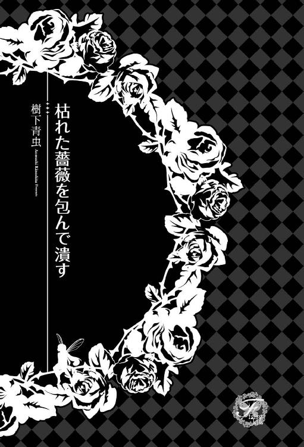
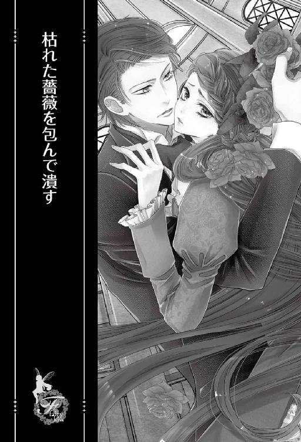
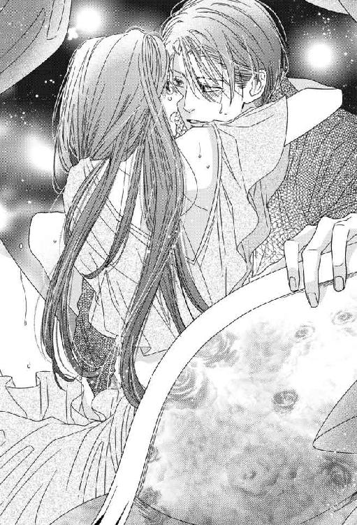
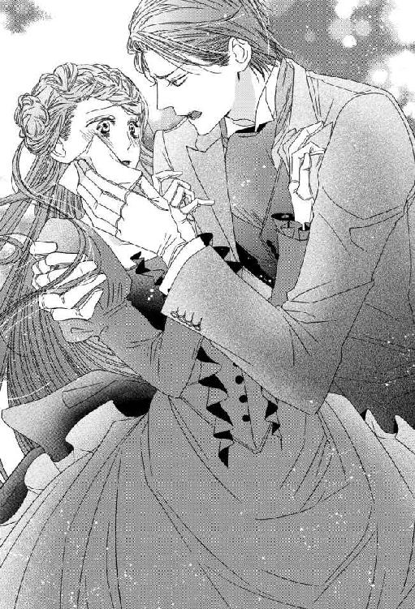
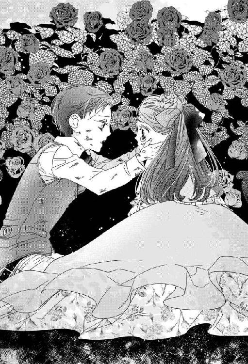
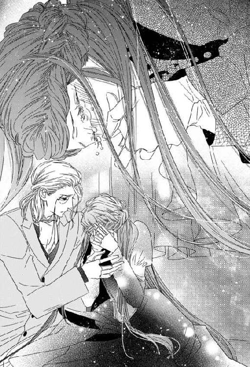
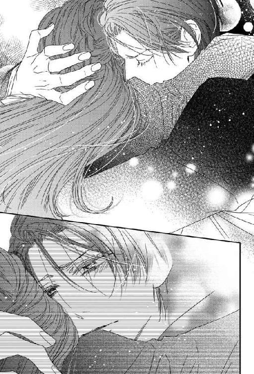
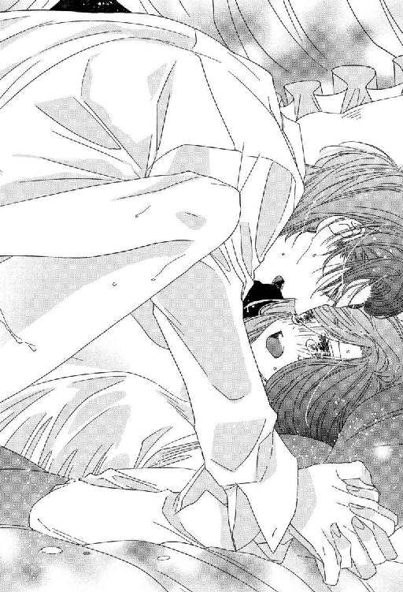
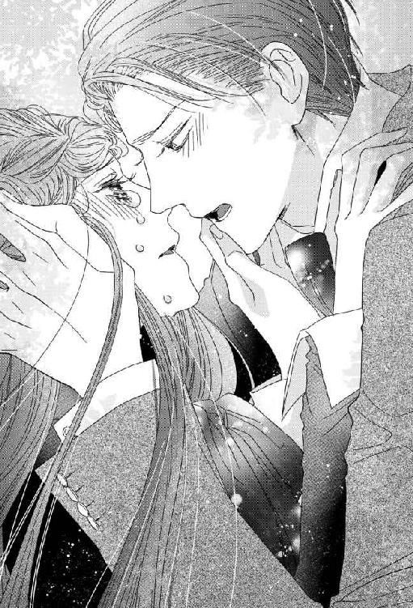
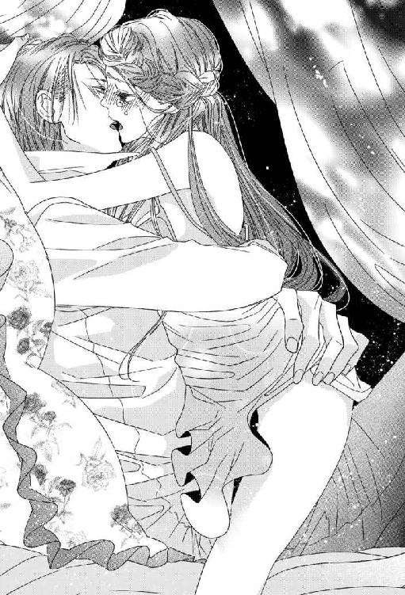

| 枯れた薔薇を包んで潰す【SS付】【イラスト付】 (フェアリーキス) | |
| 樹下青虫 | |
| (2016) | |

この物語はフィクションであす。実在の人物・団体・事件などに一切関係ありません。

イラスト：秋月ルコ
砕けて幕開け
泣くのは薔薇垣の茂みと決まっていた。
白薔薇の垣根、黄薔薇の垣根の向こうにある、くすんだ赤の薔薇垣。その裏側。
庭師の目を盗んで生まれた小さな窪みがヒルダの隠れ家だった。
鋭い棘とは裏腹に、柔らかく甘い薔薇の香りは母が纏っていた香水のそれに良く似ている。
だから、薔薇垣の茂みに身を隠してそっと目を閉じると、母の腕に抱かれているような気持ちになれた。
胸に奔る甘やかな疼痛。
薔薇の香りの中にうずくまり、涙する、幼いヒルダには分かっていた。
母のたおやかな腕は、最早ヒルダのものではないことを──。
カシャン。
「もっ、申し訳ありません！」
指先にかかった飛沫の熱と、メイドの悲鳴にハッとする。
「早くお医者様を呼んで！ お嬢様、申し訳ありません。この子はまだ入ったばかりで」
赤くなった指先と、青い顔色のメイド二人を交互に見遣る、ヒルダは最後にティーテーブルの上に飾られた三種類の薔薇へと視線を移した。
白、黄、赤と揃った薔薇の色彩に幼い日の情景が重なり、思い出へどっぷりと沈み込んでいた。
（疲れているのね）
心が弱ると感傷に浸りたくなってしまう。
可哀想な自分を哀れみたいのか、それともあの頃よりマシだと自分を慰めたいのか、ヒルダ自身にも分からない。
（しっかりしなければ駄目よ、ヒルダ・シスレー）
ふぅ、と物憂い溜息を吐くと、ヒルダの様子を窺っていたメイド二人が震え上がった。
「あぁ、ごめんなさい。違うのよ、あなた達を怒ったわけではないの。お医者様も要らないわ」
紅茶のかかった指先はじんじんと痛みを訴え始めていたが、医者を呼ぶほどのことではない。
別のメイドが大急ぎで持ってきた冷水に指を浸した。
粗相をしでかしたメイドは顔色を青から白へと変え、細い体をブルブルと震わせ怯えている。
ヒルダは「大丈夫よ」と彼女を落ち着かせようとして、赤みの残る指先に視線を滑らせた。
主人一家の娘に火傷を負わせたとなれば、メイドは叩き出されても文句が言えない。
ヒルダにそんなことをするつもりはないが、まさしく叩き出しそうな人間がいることを思い出した。
「ケリー」
騒ぎを聞き付けてやって来た家政婦に声をかける。
「はい、ヒルダ様」
「その子なのだけれど......」
紅茶を零したメイドは「いよいよ叱責を受けるのだ」と、ヒルダとケリーのやりとりに全神経を傾けている。
彼女の名前は確かマリオンと言ったと思う。
マリオンがこの屋敷に勤める時、ケリーに伝えた内容に偽りがなければ、彼女には年の離れた弟妹と病で苦しむ母親がいる。一家の暮らしを支えるのは父親とマリオンの稼ぎで、父親はどうも職場での素行が宜しくない。......最後の一つはマリオンが申告したものでなく、ケリーが調べてヒルダに伝えたものだ。
それでもヒルダがマリオンを雇用したのは、単純に、メイド募集の面接にやって来た中で彼女が一番生活に困っていたからである。
「解雇してちょうだい」
「お嬢様......っ！」
マリオンは悲鳴を上げ、ヒルダの足下に跪いた。
「どうか、どうかお許しを。二度とこのような失敗は致しません。どうか、お嬢様......！」
「私も残念だわ、マリオン。あなたはとても働き者だったから」
名前を呼ぶと、マリオンは絨毯に擦り付けていた顔を上げ、どこか呆けた様子でヒルダを見上げた。
マリオンがシスレー家のタウンハウスに雇われたのは一月前のこと。今日という日まで雑用ばかりをやらされていた彼女は、まさか、主人一家の令嬢が名前を覚えているなんて思っていなかったのだ。
「ケリー。急いでちょうだい」
「はい、お嬢様。マリオン、お立ちなさい」
「あ......」
ケリーの厳しい声にマリオンはハッとして、再び平伏しようとした。
「今、出ていくのがお前のためです、マリオン」
ケリーはヒルダの危惧を察していた。
しかしカントリーハウスから連れてこられた古株の使用人であるケリーと違い、マリオンにはヒルダの気持ちを察することは出来ない。
なおも縋る視線を向けてくるマリオンに、ヒルダは指から指輪を一つ抜き取った。
「マリオン、これを」
ケリーが「お嬢様」と窘める声を上げる。
とはいえ、ケリーのことだからヒルダの望むところを正確に察しているに違いなく、ヒルダが指輪を与えずとも、十分な退職金を渡していただろう。
「え」
「持っていきなさい。売れば生活の足しになるでしょう」
ヒルダは市井の暮らしに詳しくないが、ケリーの渋面の具合から察するに、十二分の報酬であることは分かった。
「あ、あの......」
「さぁ、早く」
戸惑うマリオンにヒルダ自ら手を差し出し、立たせてやる。
「......早く、逃げなさい」
ヒルダによる静かな忠告は、静まり返った部屋に重く響いた。
姉と弟
二重になったレースのカーテンの隙間から、そっと外を窺う。
タウンハウスの中庭はカントリーハウスのそれの十分の一もない広さで、門と、敷地の向こう側にある表通りを望むことが出来た。
老若男女が行き交う表通りは、屋敷の使用人を一カ所に押し込めたかのような人混みだ。
ヒルダはその中から一人を見付け出そうと目を凝らす。
正式な招待を受けて出掛けた彼が家に戻るには、まだ早い。けれどヒルダは、彼が今にも帰ってきそうな予感があった。
赤みの残る指先に溜息が零れる。
二、三日もすれば消えるに違いない小さな傷だ。
だから傷を隠せるなら隠したかったし、事態を誤魔化せるなら誤魔化したいと考えていた。
......けれど今まで、ヒルダのそうした思惑、願いが叶った試しはない。
あの子はどこからともなく話を聞き付けてくる。
コン、コン、コン。
「紅茶をお持ちしました、お嬢様」
メイドの声に、ヒルダは視線を外に向けたまま「入って」と返事を返した。
──忘れられない、記憶がある。
何年も前、ヒルダがまだ幼かった頃のことだ。キッチンメイドがこっそりと猫を飼っていたことがあった。
彼女は猫が屋敷に入り込まないように細心の注意を払っていたし、賢明な猫もまた、人の目に留まりやすい場所へ姿を現すことはしなかった。
ヒルダがそのことを知っているのは、猫を隠すキッチンメイドよりも注意を払ってこっそりと、彼女と猫の触れ合いを見ていたからである。
その頃のヒルダは、とあるきっかけから使用人の暮らしぶりが気になっていた。
彼らはどんな場所で、どんな風に暮らしているのだろう？ ヒルダは自分の好奇心を隠していたから、「やめなさい」とヒルダを窘める者はいない。
いつしか、使用人の日常を隠れて観察するのがヒルダの日課になっていた。
猫を可愛がるキッチンメイドは優しそうで、日なたに丸まる猫はとても幸せそうだった。
（見ているだけにしておくべきだった）
......ある日、猫が子供を産んだ。
キッチンメイドの作ってやった寝床に母猫と子猫。子猫の毛繕いをする母猫。甘えて擦り寄る子猫。母子は皆、黒と茶の混じったチョコレートのような毛並みで、一緒に丸まっているとどこまでが母猫でどこからが子猫なのか分からない。
甘く、ほろ苦い光景だった。
幼いヒルダは、寄り添い合って一つになった母子の姿が羨ましくて仕方がなかった。それは、ヒルダの失った偶像だった。でもまだ、諦めることの出来ないもの。
母猫の目を盗み、ヒルダは子猫に手を伸ばす。
今のヒルダであれば、あんな、迂闊な真似はしない。自分の一挙一動が、周囲にどれだけ影響を及ぼすか分かっているから。
自分に何かあれば、必ず、あの子が──。
「紅茶が入ったよ。ティータイムにしよう」
「っ」
聞き慣れた声にヒルダは思い出から現実へと引き戻された。
声は、メイドのものではありえない、低くて耳に残る、男性のそれ。
どうしてここに、という気持ちと、やはり、という気持ちが同時に起きる。
「驚かせようと思ってメイドに協力させたのに、外を眺めるのに必死で俺に気付きもしない」
見れば、入室の許可を求めたメイドは壁際で蠟人形のようになっている。
彼は手ずから淹れた紅茶に角砂糖を一つ落とし、優雅な所作でヒルダの前に差し出した。
「外に何か面白いものでも見付けたのかな。それとも、何か考え事？」
尋ねた拍子に、艶のある黒髪がサラリと揺れた。ヒルダと同じ、真っ直ぐの黒髪だ。
「悩みがあるなら聞くよ、姉さん」
ヒルダを見つめる瞳は夢見るようなすみれ色。
同じ紫でも、色が濃過ぎて葡萄のようなヒルダの目とは大違いだ。
「......ヴィンセント、お茶会はどうしたの」
黒髪とすみれ色の瞳。細い顎に幼さをほんの少し残した、端正な容貌の青年。すらりとした長身に訪問着を纏ったままの彼は、ヒルダとは二つ年の離れた弟だ。
「俺の声が聞こえなかった？ 紅茶が入った、これから姉さんと俺とでお茶会だ」
「ヴィー」
「着替えてないことを怒ってる？」
「ヴィー」
「......ちゃんと挨拶はして来たよ。あんな成り上がりの男爵家になんて足を踏み入れるのも嫌だったけれど、伯父上たっての願いだ。断れない」
「男爵は功績を認められて叙爵されたのよ。成り上がりなんて言うのはおやめなさい」
「元は商人だよ、姉さん。せめて大人しくしていれば良いものを、今度は金に物を言わせて縁故を作ろうと必死だ。あの家から嫁を貰うと馬鹿みたいな持参金が付いてくるそうだよ。金で血統を売り買いしようなんて、流石は商人。品のない真似をする」
「ヴィンセント」
「よく頑張って男爵家に滞在したと褒めて欲しいくらいだ」
「......困った子ね」
男爵家を扱き下ろすヴィンセントだけれども、滞在時間の他は何の問題もなく、お茶会に参加して来ただろう。彼は貴族らしい貴族であり、自分の家の恥となるような行いは決してしない。
そんなヴィンセントが、ヒルダの前では子供のように振る舞う。愚痴を言い、拗ねて、我が儘を言う。
彼は貴族としての自分に誇りを持っていて、家を愛し、家族を愛し......特に姉であるヒルダを慕っている。ヒルダは彼の親愛が嬉しい。けれど同時に、辛い。相対する時、胸には苦い想いがある。
ヴィンセントのことが嫌いなのかと尋ねられれば答えは否だ。好きかと尋ねられれば「はい」と答える。ただし「どんな風に？」と尋ねられれば答えられない。ヒルダの抱える感情は複雑で、人に言えるものと言えないものが入り交じっている。
でももし、「怖いか」と尋ねられることがあれば答えようと思う。
尋ねた相手の安全のために「あの子は家族以外に容赦をしない子よ」と。
「そうかな？ 立場を弁えずに出しゃばるのは、誰にとっても見苦しいことだと思うけど」
「人のことを悪く言ってはいけないわ」
「人、ねぇ」
ヴィンセントはティーポットの乗っていたキャリーを押し退け、ヒルダの真正面に立った。
「駄目だよ、姉さん。人、なんて風に一括りにするのは間違いだ。紅茶にミルクティーとストレートがあるように、人間にも種類があるのだから。王族、聖職者、貴族......平民」
ヒルダに覆い被さるように背を屈め、ヴィンセントが囁く。
「同じじゃない」
その時ヴィンセントは、肘掛けの上にあったヒルダの手の上に、わざと自分の手を乗せた。
火傷を負った方の手だ。
「同じじゃないんだ、姉さん」
ヒルダは、弟が自分の火傷を何処からか聞き付けて戻ってきたのだと確信した。
「大した怪我じゃないのよ、ヴィンセント」
「使用人が姉さんに怪我を負わせるなんて許されることじゃないよ」
ヒルダは咄嗟にマリオンを庇った。
しかしそれはヴィンセントに対し全くの逆効果で、火に油を注ぐ結果になってしまう。
許されない、と口にするヴィンセントの顔に浮かんだ嫌悪の色は、男爵の話をしていた時の比ではなかった。
「もう解雇したわ」
「指輪を退職金代わりにくれてやった上でね。罰と言った罰も与えず」
まさかそこまで耳にしているとは。
「誰から聞いたの」
「言ったらどうするのかな。辞めさせる？」
期待するようなヴィンセントに、つい尋ねてしまった自分の迂闊さをヒルダは呪った。
「......いいえ、辞めさせないわ。聞いてみただけ。私の怪我を弟である貴方に教えるのは悪いことではないし、前もって貴方が、何かあった時に知らせるよう言い付けておいたのなら、命令を守ったと褒められるべきですもの」
「うん、そうだね。でも辞めさせておいたよ」
「ヴィンセント！」
「この家の女主人は姉さんだよ。メイドは姉さんの命令を第一に聞くべきだ。メイドが女主人の許可なく姉さんの情報を言い触らすなんて、褒められることじゃない」
メイドを蔑む口調と、汚いものを見るような眼差しがヴィンセントの感情を如実に語っていた。
辞めさせられたのは恐らく、マリオン同様、タウンハウスに来てから新しく雇われたメイドだろう。
カントリーハウスから付き従って来た者達はヴィンセントの恐ろしさ、姉への執着を知っているから、迂闊な行動は決して取らない。
「使用人にそんな風に優しくしてどうするの、姉さん。寛大に接すると奴らは直ぐに付け上がる。仕事を疎かにする」
ヴィンセントがヒルダの手を取る。
指先の火傷を睨み付ける彼の姿を目にすると、ヒルダでさえも身の凍る思いがした。
彼の中で平民と貴族の境目とは広く深いものであり、使用人への怒りには歯止めがない。制限する必要がないのだ。
「......」
凍て付く眼差しをふと緩め、ヴィンセントはヒルダの指先に唇を寄せた。
肌よりなお柔らかい物が火傷のある場所へ触れて、
「俺が側にいればこんな怪我はさせなかったのに」
忌々しそうに話していたのと同じ口が「痛む？」とヒルダを慮った。
まるで、別人の声だ。
「っ」
薔薇の棘に触れてしまったような不意の痛み。
ヒルダは顔に出さないように努めたけれど、ヴィンセントには通用しなかった。
眉宇を寄せる彼に、ヒルダは動揺を押し隠した声で「大丈夫よ」と告げる。
「痛くないわ」
「......そう言うと思った。俺が何度言っても貴方は聞いてくれない。使用人になんて優しくして欲しくないのに」
ヴィンセントの唇が指先から指の付け根に移る。赤い舌が、付け根から関節までを舐め上げた。
チラチラと艶めかしい赤を覗かせながら、唇は手の甲を、手のひらを滑り、手首へと至る。
血管の見える薄い皮膚にヴィンセントは何度も口付けた。
「姉さんは俺だけに優しくしていてよ」
彼は少し勘違いをしている。
ヒルダが耐えたのは火傷の痛みではなく、胸の痛みなのだ。
使用人へあんなに冷たい態度を取っていたヴィンセントが、姉であるヒルダにはビロードで包み込むような優しさを見せる。
そのことが嬉しい。そして辛い。
──何故ならば、ヒルダは彼の本当の姉ではないからだ。
「姉さん」
ヴィンセントが背中を猫のように伸ばしてヒルダに顔を近付ける。
額にヴィンセントの唇が触れる。それから鼻先へ。目蓋へ、頰へ、唇へ。唇へ、唇へ。
唇と唇が触れ合う合間に、ヒルダはヴィンセントの名前を繰り返し呼んだ。
「ヴィー」
小さな非難の込められたヒルダの声を、ヴィンセントは口付けを深くすることで封じた。歯列を前から奥へ舌でなぞり、奥に引っ込んでいたヒルダの舌へと絡める。
「んぅ」
口付けから逃げることは出来ない。ヴィンセントの手がヒルダの顎を押さえ、顔を背けることも、口を閉じることも出来ないようにしている。
もう一方の手はヒルダの胸元を探っていた。
華美を好まないヒルダの普段着は質素なもので、小さなボタンを数個外しただけでシュミーズのレースが覗く。勿論、コルセットによって押し上げられた胸も一緒に。
「はふ」
ヴィンセントの唇から解放されると、ヒルダは大きく息を吸った。
ヒルダは深い口付けが得意ではない。どこで息継ぎをすれば良いのか、ヴィンセントに翻弄されていると分からなくなるのだ。
ヒルダが息を整える様子にヴィンセントは小さく笑い、無防備に晒された喉に口付けた。
「んっ」
飛び跳ねそうになる体をヒルダはどうにか制する。内心の動揺そのままに慌てふためくなんて、淑女にあってはならないことだから。
貴族の娘として、ヴィンセントの姉としても相応しくない。
ヒルダの葛藤など知るよしもないヴィンセントは、甘えるように体を密着させてきた。
実際に、彼は甘えているだけなのだ。行き過ぎた肌の触れ合いと口付け、どちらも、彼にとっては姉弟の枠組みから出るものではない。
「鼓動が早い。キスがそんなに苦しかった？」
戯れなのだ、これは。
ヴィンセントは上下するヒルダの胸に唇を触れさせて強く吸った。
小さな痛みに、ヒルダは彼が痕を残したことを知る。
「......ヴィンセント。こんなこと、本当はしてはいけないのよ」
「こんなことって？」
ヒルダが窘めると、ヴィンセントは無邪気にも見える表情で聞き返して来た。
「姉さんが俺のものだって、主張してはいけない？」
コルセットで締め上げられた細い腰を引き寄せ、布が幾重にも重なったスカートの中へと手を差し込むヴィンセント。
唇は胸に吸い付き、新しい痕を残した。
スカートの中に入り込んだ手は、ドロワーズの上から、太腿の上をからかうようになぞる。
「ごめんね、分かってるよ、姉さん」
太腿の内側にヴィンセントの指が触れて、ヒルダはカァッと頰を染めた。
ヴィンセントの悪戯でそこが潤んでいると、ヒルダは知っていたのだ。
「ドレスで隠せない場所に痕を残すのはいけないことだって分かってる。今回だけだよ、もうしない」
くちゅん、と音を立てて彼の指がヒルダの中に入り込む。
「あっ」
幾重にも布が重なったスカートの奥で弄られているにも拘わらず、ヒルダの中でヴィンセントが指を動かす音がはっきりと聞こえる。
「ちゃんと分かってるよ」
「ヴィン......セン、トっ」
「温かい。それに甘い匂いがする。姉さん、もっとくっ付きたい」
ヒルダの着ていたブラウスをすっかり寛げ、ヴィンセントは胸に頭を擦り付けた。
ヒルダから甘い匂いなどするものか。もしもそんなものがあるならば、ヴィンセントからの移り香だろう。
美しく気高く、容赦のない、貴族の中の貴族であるヴィンセント。薔薇のような弟。
偽りの弟。
いや、違う、偽りなのは彼ではない。ヒルダなのだ。
古くから伝えられた高貴な血統が遂に生み出した歪み。ヴィンセントは知らない。ヒルダは知っている。けれどヒルダはヴィンセントに教えない。
ヴィンセントの間違いも正さない。
（姉弟でこんな触れ合いはしないの）
胸に痕を残すより、内股の奥を暴く方がいけないことなのだと、本気で彼に言い聞かせることをヒルダはしない。
「ねぇ、姉さん。タイを外して？」
もうしない、と誓った通り、痕を残さないように舐っていた首から顔を上げ、ヴィンセントが強請る。
「姉さん」
弟の願いをヒルダは断れない。
タイを解くために指をかけると、ヴィンセントは嬉しげに笑った。
「んっ」
ヒルダの内側に潜り込んでいたヴィンセントの指が、ヒルダの弱い場所を押す。
「駄目、ヴィー。待って......！」
ヒルダの体がビクンと跳ね、弟の指を咥え込んでいた場所に不必要な力が入る。感じていると、声に出すよりはっきりと彼に教えてしまうようなもの。
「タイ、が」
ヒルダは腰を揺らしてヴィンセントの指から逃れようとしたが、弟は執拗にヒルダを追いかける。
「ま、待って。待って、ヴィー。タイを、解けな......！」
「今、俺の指を締め付けた。気持ち良い？ それとも、もっと奥を触って欲しい？」
「そんな、はしたないことを言わないで」
「俺は聞きたい。ね、もっと強く押したら言ってくれる？」
「だっ、駄目よ、ヴィー。これ以上は。や、んん！」

ヴィンセントは指を強く押し込み、ヒルダの弱点をこれでもか、と責め立てた。
「あ！ あ、んぅ！」
タイに引っ掛かったままの指へ力が籠もる。当然、タイを結んだヴィンセントの首にも力がかかった。
彼は引かれるままヒルダの首筋へ顔を埋め、再び白い肌に舌を這わせた。
「気持ち良い？ 良くない？ ああ、指一本じゃ、物足りないのかな......？」
「は」
ヴィンセントの愛撫によって蜜を吐き出し続けるヒルダの秘所の入り口に、指がもう一本添えられる。
ヴィンセントの言わんとすることを察し、ヒルダは頭を横に振った。
「ヴィンセント！」
ぷちゅん、といっそ小気味が良いくらいの水音を立てて、二本目の指がヒルダの中に沈む。
蕩け、蜜で濡れそぼったヒルダの秘所は難なく二本の指を呑み込み、そこには少しの痛みもない。
むしろ、内壁を擦られて快感すら覚えている。
けれどヒルダの顔からは血の気が引いていく。
「動かしては駄目。ヴィー、良い子だから抜いてちょうだい」
いくら滑りが良いとはいえ、ヒルダの体が受け入れられる物には限界があった。
例えばヴィンセント自身など受け入れられるわけもなく、指とてあと一本入るか、否か。
弟によって快楽を教え込まれているものの、ヒルダの体は本当の意味では男を知らない。
彼女は未だ清らかなまま。
当然だ、これは男女の情交でなく、姉弟のじゃれ合いなのだから。
「力を抜いて、姉さん。嫁入り前の姉さんの価値を下げるような真似はしない。大丈夫だから」
破瓜を怖れて身動ぐことも出来ないヒルダの耳元でヴィンセントが言う。
「姉さんを気持ちよくさせたいんだ」
二本の指は動かさず、親指が意地悪く、熟れた花芽を押し潰す。
「っ」
ヒルダを宥める声、追い詰める指。
快楽の予感を得てヒルダが更に蜜を吐き出すと、ヴィンセントは二本の指で抜き差しを始めた。
最後まではしないと囁きながら処女膜の残る膣を弄くり、苛む弟を、ヒルダは弱々しく睨み付ける。良識ある姉として、最後の抵抗だ。
けれど彼の視線と自分のそれとがぶつかると、最後の抵抗も終わりになる。
弟の目にある、思慕の光がヒルダの心をひり付かせる。
この行為は弟にとって親愛を確かめる手段の一つであり、彼はいずれ他家に嫁ぐ姉を、弟として心から慕っている。
「姉さん、気持ち良い？」
姉弟の強過ぎる執着と淫らなじゃれ合いを知っているのは、信用が置けると判断された使用人だけだ。
この限られた使用人に、姉弟のどちらがより異常かを尋ねれば、皆、ヴィンセントだと答えるに違いない。
しかし、事実は違う。
より歪なのは、ヒルダの方。
「だめよ、いけないの。ヴィンセント。だめ、あ、あぁあっ」
ヴィンセントの情は、例え行き過ぎであっても肉親に向ける情。ヒルダは違う。じゃれ付く弟を受け入れるヒルダは姉でなく、一人の女だった。
それなのに姉を演じ、弟を窘めさえするヒルダは、本来の自分をいくつ裏返しているか分からない。
裏返り、捻れ、彼女の心は怪物のように歪んでいる。
ありふれた悪夢
開け放たれた窓の外で梢が青葉と笑い合い、風に誘われてレースのカーテンが踊る。
「どうして私の瞳は母様やヴィーのようなすみれ色じゃないの？」
薔薇の香りがする母の腕に自身の腕を搦めてヒルダは尋ねた。
生来病弱な母は一度体調を崩すと不調が長引く。
冬に引いた風邪を春中患い、初夏になって漸くベッドから起き出した母へ、幼いヒルダは甘えに甘えた。
日頃は大人しく、滅多に我が儘を言わないヒルダを咎める者はいない。
ヒルダは長椅子に腰掛けた母の隣にピタリと張り付き、他愛のない「どうして」を繰り返す。
「空はどうして青いの？」
「夏はどうして暑いの？」
「蝶々はどうして空を飛べるの？」
ヒルダは母に甘えるのが目的で、答えなんてどうでも良かった。
母はそれを分かっていたろう。
けれど彼女は、ヒルダより一回り小さな子供がぶつけてくるような疑問に嫌な顔一つせず、薔薇の花弁みたいにしっとりとした微笑みと、祝福に満ちた答えをくれた。
空が青いのは天使が青い瞳で人を見守っているからであり、夏の熱気は秋の収穫を前にした妖精達の期待だ。
蝶々は羽の美しさを神様に褒められたのが嬉しくて飛び跳ねたまま、いつまでもフワフワしている。
母に甘えるためにぶつけた問いだけれども、母のくれる答えは小さな子供の耳に賛美歌より美しく響き、ヒルダは目を輝かせた。側に控えたメイドは──ケリーは、母子のやりとりを温かな眼差しで見守る。
穏やかな午後にヒビを入れたのは、他の質問同様、何の気なしにヒルダが口にした疑問だった。
「どうして私の瞳は母様やヴィーのようなすみれ色じゃないの？」
ヒルダの葡萄色の瞳が母のすみれ色を覗き込むと、母は目をパチクリとさせた。
睫の瞬く微かな音でさえ響いてしまいそうな、突然の静寂が部屋に落ちる。
「......ヒルダの瞳も私と同じすみれ色でしょう」
「え？」
沈黙を破った母の声に、ヒルダは首を傾げた。
ヒルダの瞳は葡萄色。母と同じ紫ではあるけれど、すみれ色とは濃淡に大きな違いがある。
「お母様、良く見て。ヒルダの目は葡萄色です」
「そんなわけないわ」
母は素早く否定した。
「ねぇ、ケリー。瞳は私と同じすみれ色でしょう」
「お母様？」
「すみれ色だったわよね......？」
母の視線が宙へ向く。
「奥様、その通りでございます」
異変を見て取り、ケリーが母に駆け寄った。
「ケリー？ 何を言っているの。私の瞳はすみれ色じゃないわ」
「いいえ、お嬢様。ヒルダ様の瞳はすみれ色で......あぁ、奥様。落ち着いて下さいませ！」
ケリーに尋ねるヒルダの背後で、何かを布へ叩き付ける音がした。驚いて振り返れば、穏やかな表情を一変させた母が髪を振り乱している。
「赤ちゃん」
「おかあさま？」
「赤ちゃん、赤ちゃん。私の赤ちゃん。目を開けて。すみれ色の瞳をお母様に見せてちょうだい」
「奥様......！」
呆然とするヒルダの前で、母の瞳から涙が溢れる。すみれ色の瞳から零れた雫が、その時ヒルダの目には不思議と、血の色をしているように見えた。
「あか......？」
ほんの小さなヒルダの呟き。
それは母の、張り詰めた精神の糸を断ち切った。
「きゃーぁあああああ！ 赤！ 赤！ 赤！ どうにかしてちょうだい、ケリー！ 私の赤ちゃんが真っ赤なの。拭いてちょうだい、この赤をっ」
「奥様、奥様。大丈夫でございます。産湯をお持ちしますから。ケリーが直ぐに血を洗い流します」
「産湯。お湯ね。そうね、直ぐにお湯に入れてあげて。こんなに冷たくては可哀想」
「はい、奥様」
穏やかだった筈の風が、強く強く吹いてカーテンを煽る。
目眩がするほど細かいレースのそれが、隙間なく刺繍の施されたそれが、バタバタと音を立てる。
母の悲鳴と、はためくカーテンの音。その間断にヒルダは、何かの壊れる音を聞いた。
ガラスの割れる澄んだ音のような。
悪魔の笑い声のような。
ふらりとヒルダの上を掠めた母の眼差しにはもう穏やかさは欠片もなく、濁っても分かる狂気の光が宿っていた。
ヒルダは知らないことであったが、その眼差しは母の母にも、その母にも良く似ていた。
シスレーの血を紡ぐ女達が受け継がざるを得ない、宿命の狂気である。
──古くから続くシスレーの血が、長い時間をかけて溜め込んだ負の要素。その影響を、最も強く受けたのが母だった。
ベッドの隅にポツンと一人取り残された少女の母ではない。
すみれ色の瞳で生まれてくる筈だった『ヒルダ』の母。
すみれ色に狂気の光を宿した貴婦人を落ち着かせた後、ケリーは葡萄色の瞳をした偽りの『ヒルダ』に真実を言って聞かせた。
「死産だったのでございます」
目を伏せ、沈鬱な声でケリーが言う。
「奥様はお嬢様の死を大層お嘆きになり、御自分と、側に控えた者全てを責められた。あの時奥様は半分、気が狂っていらっしゃった。どうしようも、なかった。私を恨んで良いのですよ。私は奥様の叱責を、解雇を怖れて悪魔に魂を売ったのです」
暗い影の落ちたケリーの瞳は葡萄色。
「別の場所から赤子を持ってきて、奥様の腕に抱かせました。私の姉が産んだ子供です」
一拍を置き、ケリーは伏せていた目を上げる。
「それが、貴方様です」
黒く濁った紫の視線が射抜くのは、瞬きを忘れて見開かれた同色の瞳。
「可哀想なヒルダお嬢様」
ヒュ、とヒルダの喉が鳴る。
ヒルダの喉に引っ掛かっているものがあった。けれどヒルダはそれが何か分からず、言葉にすることが出来ない。
秘密ですよ、と告げるケリーの背後には窓。雲が勢いよく流れていく。
不思議と音は聞こえない。
自分の身に起こった出来事を、現実を、ヒルダは無意識の内に否定したがっていた。
けれどヒルダは悟ってしまう。奇しくもそれは、ヒルダが母にぶつけた質問の答えだった。
「どうして私の瞳は母様やヴィーのようなすみれ色じゃないの？」
■■■
「あっ、その、し、失礼しました......！」
カーテンを開ける気配に目覚めたヒルダの耳へと真っ先に届いたのは、慌てふためくメイドの声だった。
「......？」
彼女は何をそんなに慌てているのだろう。
マリオンが屋敷を出されてから三日。補塡されたメイドであっても仕事に慣れている頃合いだ。
ティーセットの乗ったキャリーの後ろへ、ここが最後の砦とばかりに逃げ込むメイドの視線を辿り、直ぐさまヒルダは納得した。
「下がりなさい。今朝は部屋でゆっくりするとケリーに伝えてちょうだい」
「は、はい、畏まりました」
明らかにホッとした表情で退室するメイドの後ろ姿を見送り、ヒルダは自分の隣で眠る弟へと視線を動かした。
......一体、いつやって来たのだろう？
昨夜、書き物をしていたヒルダがベッドに入ったのは、かなり遅い時間だった。
額にかかる黒髪を払って顔を覗き込むと、ヴィンセントの目元に隈が出来ているのが分かった。
この社交シーズンはヒルダにとって苦痛ばかりの耐え難いものだが、ヴィンセントにとっても楽しいものではない。日々蓄積される疲労で言えば、ヴィンセントはヒルダの倍も溜め込んでいるだろう。
彼は父に、花嫁を選ぶよう言い付かっている。
シスレーの家に加わる者を吟味するのだ、ヴィンセントが手を抜くわけがない。
探偵を雇って身辺を調べさせ、自らも社交の場に出て人柄を確かめる。
ヴィンセントのスケジュールはヒルダの耳に入るだけでも空恐ろしい過密さになっていた。
ヒルダは弟の頰を撫で、髪を梳いた。
気高く美しく、才気溢れるヒルダの弟。彼の花嫁になりたい娘は社交界に掃いて捨てるほどいる。
昨日彼が赴いたのは誰の舞踏会で、今日行くのは誰の舞踏会だったか。一度は聞いた筈なのだけれど、記憶に残っていない。
引く手数多のヴィンセント・シスレーが訪問する先は殆ど日替わりのようなものだった。
......それに比べ、ヒルダは屋敷から出ることが極端に少ない。
シスレー伯爵家の家格を考えれば、これはおかしな事態だった。弟ほどでなくとも、家と家の繫がりを求めてヒルダを欲しがる人間は絶対にいる筈なのだ。
ヒルダは、裏で父が糸を引いていることを確信している。
恐らく、父は──。
「っ」
ヒルダをじっと見つめるすみれ色の眼差し。
いつの間にかヴィンセントの目が開いていたことに気付き、ヒルダは吃驚した。
「おはよう、ヴィー」
「おはよう、姉さん」
「いつ私の部屋に来たか聞いても良いかしら」
「昨日、帰ってきて直ぐ。気持ちが悪くて部屋で休む気にならなかったからね。姉さんの部屋に直行した」
言われてみれば、ヴィンセントが身に着けているものは夜着でない。
「具合が悪いのなら自分の部屋で休みなさい、ヴィー」
「体調が悪いわけじゃない。姉さんに会いたくて死にそうになったんだから、姉さんに会いに来るのが正解だろう？」
「朝になれば」
「待てなかったんだ」
ヴィンセントの手がヒルダの腰に回る。
上目遣いで見上げられれば、ヒルダはそれ以上、弟を窘めることが出来ない。
ヴィンセントによって、ヒルダはベッドの中へ引き戻された。
「どうして世の中には頭の軽い令嬢しかいないのかな。高い声で右から左から囀られて、結局誰が何を言っているのか全く分からなかった」
「......貴方の気を引きたかったのでしょうに。可哀想なことを言ってはいけないわ」
「俺の気を引きたいなら、人の噂話をするのはやめた方が良い。誹謗や中傷を楽しげに話すなんてありえない。うん、しゃべる時は抑揚のある声でゆっくりと、伏し目がちに話すのが良いな」
それから、と条件を羅列するヴィンセントの目はヒルダをじっと見つめている。
「慎み深くて、優しい人。あぁ、でも、使用人にまで優しいのは頂けない。やめるべきだ」
ここで何か話すのは、藪をつついて蛇を出すようなものだろう。
ヒルダは目を閉じてヴィンセントの頭を撫でた。
溜息を吐いて胸の痛みを誤魔化す。
姉であるヒルダを溺愛するヴィンセント。弟としてではなく、ただ彼として彼を愛するヒルダ。
使用人を見下し、家族以外を寄せ付けないヴィンセント。彼の実の姉でなく、貴族ですらなく、使用人の血縁であるヒルダ......。
捻れた関係では愛情を素直に受け取ることも出来ない。
喜びと悲しみがヒルダの中で争い合う。
「頷いてくれないね、姉さん」
「貴方の気を引くための条件を話していたのでしょう？ ヴィー」
「条件を付け足そう。賢くて、少しくらいなら意地悪でも良い。いや、駄目だな。意地悪でも許せるのは姉さんだけだ」
コルセットをつけていない腰の、自然なくびれの上をヴィンセントの手が滑る。
一日の殆どを硬いコルセットによって隠され、守られる素の腰は、柔らかな接触に免疫がない。居心地の悪さにヒルダは身を捩った。
「ヴィー、くすぐったいわ」
「俺は気持ちが良い。ねぇ、姉さん、屋敷にいる間はコルセットを外したらどうかな。あれは健康に良くないよ」
「そういう風に言う人が増えているわね。でも、人がしているものを私だけ止めることは出来ないのよ、ヴィー。心配してくれるのは嬉しいけれど」
コルセットを付けずに歩けるのは寝室の中だけだ。例え屋敷の中でも、寝室以外をコルセットなしで出歩くなんて品のない真似は出来ない。
「人前に出なければ良い。使用人にはきつく口止めをしよう」
「無理を言わないで。寝室に閉じ籠もったままではいられないのよ」
「......試してみようか？」
言うや否や、ヴィンセントは自分の体をヒルダの両足の間に滑り込ませた。
「なっ」
熱く、硬いものに触れて肌が粟立つ。
どうして、と視線で問い掛けるヒルダに、ヴィンセントはいっそ爽やかと言える笑顔を見せた。
「朝だからね」
「だ、だからって」
「試すのには丁度良い。今朝はゆっくりする、そう言ったよね、姉さん。寝室に閉じ籠もったままでいられるか、どうか、じっくり確かめよう」
そう言うと、ヴィンセントはシュミーズの裾をたくし上げた。
コルセットを着けず、シュミーズさえ纏わない素の腰を摑んで引き寄せられれば、よくあるじゃれ合いであっても顔が赤くなる。
シュミーズ、ドロワーズ、コルセット。バッスルを膨らませる幾重もの布。それら全てを取り払った足腰は、ヒルダ本人でさえじっくり見たことがない。
しかも今は朝だ。夜の帳さえヒルダを隠してくれない。
「はしたないわ」
「誰も見ていない」
「それでも駄目よ、ヴィンセント。朝食に遅れてしまうでしょう」
「なら、後で一緒にお茶をしよう。今からアップルパイを焼かせれば、丁度良い頃合いにティータイムに出来る」
「ヴィ、」
「ね、そうしよう？ 姉さん」
キスの雨を降らせることで、ヴィンセントは姉を黙らせた。上唇を甘嚙みし、下唇に舌を這わせる。
背筋に奔った甘い痺れに、ヒルダは体を捩った。
するとヴィンセントはベッドから浮いた背中へすかさず腕を差し入れ、ヒルダの体を抱き締める。
「今は姉さんを味わいたい」
ヒルダに施される口付けが、深く、「食べる」と言うに相応しいものへと変わっていく。
顔を傾げて重ねられた口付けは互いの唇をぴったりと覆い、ヴィンセントが口を開けばヒルダの唇までもつられて開く。
「ん」
「姉さん」
「ん、ふう」
口の中へ入り込んだ舌は奥の方で縮こまっていたヒルダの舌を絡め取り、引っ張り出そうと根元から舐る。
「んんっ」
逃げようとすればまた追われる。
唇を離せば、その度にヴィンセントは口の角度を変えてヒルダの唇に食いついた。
「姉さん、姉さんがどんな味だか......分かる？」
口付けの合間に、吐息交じりの声でヴィンセントが言う。
「熟れた果物よりも、ずっと甘いんだ......」
「んっ」
ヴィンセントの唇の方がずっと甘いとヒルダは思う。脳天を灼くねっとりとした甘みは麻薬のようで、気を抜けば彼を求めてしまいそうになる。
もっと、もっと。もっとちょうだい。もっと深く口付けて、貴方にとって私が特別なのだと教えてちょうだい。
欲しがることは簡単だった。彼の首へ腕を回して「ちょうだい」と無心すれば良い。
けれどヒルダはヴィンセント・シスレーの姉。みっともない真似は出来ない。
真実の姉でないならば、尚更のこと。自分を取り繕うことを止めるなんて許されない。
「姉さん、濡れてる」
背中を下へと撫でたヴィンセントの指が臀部に触れて、止まる。
口付けを受けて太腿を濡らした蜜が、そこまで流れ落ちていたのだ。
恐らく、シーツにも染みを作っているだろう。
「あ、やっ」
はしたない。
ヒルダは顔と言わず、体全体を羞恥で真っ赤にし、ヴィンセントの体を押し退けた。
シーツをたぐり寄せて体に巻き付け、ベッドから下りようとする。
「俺を放ってどこへ行くの、姉さん」
ヴィンセントはすかさずヒルダの腕を取り、ベッドの中へと連れ戻した。
「なっ！ だ、駄目よ、ヴィー」
しかし、元の場所、というわけではない。
引き寄せられた先はヴィンセントの腰の上だった。
彼の脚をまたぐような格好になり、ヒルダの奥まった場所が外気に晒される。
誰もいないとは言え、広い部屋に向けて開けっ広げにされた羞恥は耐え難い。どうにか脚を閉じようとするけれど、ヴィンセントは許してくれなかった。
「ヴィー、良い子だから止して」
メイドがカーテンを開けた窓からは朝の清冽な光が差し込み、部屋の中を明るく照らしている。
彼の長い指がヒルダの秘所を探る様子も、嫌というほどよく見えた。
ヴィンセントの指が蜜に濡れた花片を摘み、引っ張り、内側へと潜り込む。中をクチュクチュと搔き混ぜて抜き取られた指は、ヒルダへ触れる前にはなかった滑りを帯びていた。
滴り落ちる蜜は、ヒルダの体が蕩けていることを示していた。
それを見せ付けるように、ヴィンセントはヒルダの目の前に持ってくる。
「ヴィンセント！」
「こんなに濡れて。良いね、気持ちよさそう」
ヴィンセントの手は再びヒルダの下腹部へと向かった。ぷっくりと膨らんだ花芽を押し潰し、蜜を吐き出す花片を撫で、さらに下へと向かう。
「ね、姉さん。俺も気持ちよくして？」
ヴィンセントは手早く自分のズボンを寛げると、いきり立った自身を取り出した。
それは偶然にも秘裂の間を勢いよく滑り、最後にヒルダの最も弱い場所を掠めていった。
「んんん──！」
ヒルダは一気に高みへと上り詰め、背中を猫のように反り返らせる。
「あれ、姉さん、もしかして達った？ 酷いな、俺を置いて」
脱力した体を受け止めて、ヴィンセントが低く笑う。
ヒルダは威厳を保とうとするが、上り詰めた余韻に震える体では難しかった。
快感で涙の滲む目で背後の弟を睨み付けるが、ヴィンセントは微笑んで目尻に口付けてきた。滲んだ涙を、熱い舌が舐め取っていく。
「次は俺を気持ちよくして、姉さん」
甘えた声で言って、ヴィンセントは力の抜けきったヒルダの手を取る。
そうして、ヒルダの内股から覗く彼自身に導いた。
「っ」
彼の意図を察して、ヒルダはゴクリと息を呑む。
ヒルダに達かせろと言うのだ、ヴィンセントは。
「ヴィー、それは」
ヒルダは、彼が今のようにじゃれ付き、過ぎた親愛を表すのは止めないが、自分から手を出したことはない。
ヒルダはやましい気持ちを抱えている。自分から手を伸ばしたら、歯止めが効かなくなりそうで恐ろしい。
「やって、姉さん」
「駄目よ、ヴィンセント。やったことがないもの。やり方が分からないわ」
「俺が教えるから、大丈夫」
「いいえ、駄目。い、痛くしてしまうかもしれないでしょう......？」
脈打つヴィンセント自身から、ヒルダは手を引こうとする。その、耳に、
「結婚したら、こんな風には姉さんに甘えられなくなる。やって、姉さん。姉さんの手で達きたい」
残酷な宣告が下された。
結婚したら、こんな風には──。
額を擦り付けてヒルダに甘える弟は、伯爵家を継ぐ男なのだ。
今は歯牙にも掛けていない令嬢であっても、妻として、家族として迎えたなら理想的な夫を演じる。そのためならば、ヒルダと距離を置くことが出来てしまえる。
名門、シスレー伯爵家の名前を守るために、出来ないことはない。
ヒルダも彼と同じ教育を受けた。だから、ヴィンセントの考えはよく分かる。分かっていた筈だった。
（それなのにショックを受けるなんて）
どうやらヒルダは自分の恋情でもって、いつの間にか目を曇らせていたらしい。見たくない現実から、少しでも目を逸らせるように。
「......仕方のない子ね」
彼を独占出来る日はもう終わる。その日は決して遠くない。
淑女としてあるまじき行いであり、姉として受け入れてはいけないことであり、平民の娘がしでかして良いことではないと、痛いほどに分かっている。
けれど、全てが終わってしまう前に、より深く触れ合いたいと思ってしまった。
「どうすれば良いの、ヴィー」
「怖がらなくても大丈夫だよ。そうだね、最初は、軽く握ってみて」
「こう？」
「うん。次は少し強く握って。......うん、もっと強くても良いよ。それから、上下に手を動かして」
言われた通りにすると、ヴィンセントのものが硬さを増す。心なしか、脈も速くなっているようだ。
「もっと、強く扱いて良いよ、姉さん。こんな風に」
腰を支えていたヴィンセントの手がヒルダの胸に伸びて、白い膨らみを摑み上げる。
反射的にヒルダの手にも力が籠もり、ヴィンセントは「うっ」と息を詰める。
「っ、そう、良いよ、姉さん」
お返しとばかりに強い力で揉まれ、白い乳房がヴィンセントの手の中で形を変える。同じように、彼を扱く手に力を込めれば、首筋に熱っぽい吐息がかかった。
ぞくぞく、とヒルダの肌が粟立つ。
「ヴィ、ヴィンセント。そんなに強くしない、でっ」
「俺はもっと強くして欲しいんだ。もっと、もっと。ほら、姉さん......！」
「だめ、あ、だめよヴィンセントっ」
相手を感じさせて、感じた相手の手に煽られて。
そんなことを飽きずに繰り返せば、上り詰める足並みが揃うのは当たり前のこと。
「んっ」
迫り来る大きなうねりに、二人は揃って体を投げ出した。
■■■
肌を重ねた後も、ヴィンセントはヒルダを離してはくれなかった。
身支度を調えるメイドが部屋に入るのも許さず、ヴィンセントは本気で、ヒルダがコルセットを外したまま、いつまで人前に出ずにいられるかを確かめてみるつもりらしかった。
ヴィンセントの思惑を打ち破ったのはケリー。
彼女は紅茶が乗ったキャリーを押しながら部屋に入り、ヒルダに一日の予定を説明し始める。ベッドの上で半裸のまま抱き合う姉弟の姿には目もくれない。
ヴィンセントは忌々しそうにケリーを見遣った。ヴィンセントは、ケリーが苦手なのだ。
ケリーは使用人であるけれど、当主であるカーティスの信任が厚いため、ヴィンセントであっても無碍に出来ない。
「......それから、旦那様からヒルダお嬢様へ話があるそうです。昼食の後、書斎へ来るよう仰せです」
「お父様が？」
「はい」
「分かりました、とお伝えして」
「はい、畏まりました。お嬢様」
カーティスから呼ばれたとなれば、いつまでも寝室に籠もっているわけにはいかない。そのことはヴィンセントも承知していて、名残惜しそうにヒルダから離れる。
「父さんが一体、何の話だろうね」
「そうね、何の話かしら......」
首を傾げながら、ヒルダの心の内には嫌な予感が生まれていた。
残酷な優しさ
父に会うのは久しぶりのことだった。
国の重職に就く彼が多忙なせいでもあり、ヒルダが父を避けていたせいでもある。王都に出てきてから父と会話らしい会話を交わした回数は、両手で余るほどしかない。
王都で、ヒルダは確信に近いものを得ていた。
父は知っているのだろう、ヒルダが彼の娘でないことを。
だから結婚適齢期にある娘を外に出そうとしない。これは貴族にあっておかしなことだ。
でも、ヒルダが平民であることを分かっているならこれ以上正しいことはない。
貴族の家に知らん顔で平民を嫁がせるより、父は周囲に「どうして」と奇異の目で見られることを選んだのだから。
死産で心を病んだ母を慮ってのことだろうが、父の性格を考えると、偽りの娘を放置していたことが今更ながら不思議だ。
でも、それももうお終いだとヒルダは思っている。
社交シーズンにカントリーハウスからタウンハウスへ娘を連れ出しておきながら、屋敷の外へは出さないのが良い証。
父はこれ以上ヒルダに淑女ごっこを続けさせる気がない。
父の意志に添って屋敷に籠もり、賤しい身を彼の前に晒さないのが、ヒルダに出来るせめてもの孝行だった。
目障りでないよう、落ち着いた色合いのドレスを纏い、父の待つ書斎に向かう。
書斎と言うより図書室と言った方がしっくりくる部屋の最奥、マホガニーの書き物机に向かう父の背中に向けて、ヒルダは腰を折った。
「ヒルダです、お父様。話があると聞いて参りました」
彼に呼び出されたヒルダであり、部屋に入る前に当然、入室が彼に告げられている。それでも振り返らない父の姿に、ヒルダは、自分の瞳の色を認めなかった母を思い出した。
「今夜」
振り返らないまま、父は言う。
「ナイマン子爵家で開かれる舞踏会に出席しなさい」
「え？」
「聞こえなかったかね。ナイマン子爵家で開かれる舞踏会に出席しなさい。エスコート役はヴィンセントだ」
「お父様、ですが......」
「お前に拒否は出来ないよ。質問は受け付けよう。何かあるかね？」
私が貴族の舞踏会に出席しても良いのですか。
......思わず尋ねそうになり、ヒルダは唾と一緒に問いを飲み込んだ。
父がヒルダのことに気付いている確信はあったが、面と向かって告げられたわけではない。自分から切り出す勇気は、ヒルダにはなかった。
血の繫がりがなくても、彼と彼女を父母と慕ってきたヒルダだ。自ら、偽りの関係を終わらせるなんて真似は辛過ぎる。
「ありません、お父様」
「では行きなさい」
最後までヒルダを見ることのなかった父へ優雅に一礼し、書斎を出る。大きな窓から陽の光がいっぱいに差し込む廊下の眩しさが、暗い書斎から出てきたヒルダの目には痛いほどだった。
「父さんとの話はもう終わったの？ 姉さん」
眩い道の向こう側からヴィンセントがやって来る。
彼はヒルダに近寄ると、片方の眉を器用に持ち上げた。
「もしかして、父さんに苛められた？ あの人は子供をおちょくるのが趣味だから、真に受けない方が良い」
ヒルダとは違い、跡継ぎであるヴィンセントは父について家の仕事を学んでおり、一緒にいる時間が多い。
ヒルダの消沈を、ヴィンセントはあまり顔を合わせない父と嚙み合わなかったせいと思ったようだ。
彼の気遣いが辛い。
ヴィンセントに対する父の姿が、自分に見せる姿と重ならず、差異の分だけ心が裂かれる気持ちがした。
そんな心情をおくびにも出さず、ヒルダは微笑む。
「ナイマン子爵家の舞踏会に出なさいと言われたのよ」
「は？」
ヴィンセントが形の良い柳眉を顰める。
「姉さんを、舞踏会に？」
「聞いていないの？ お父様は、エスコートは貴方だと言っていたけれど」
「聞いてない」
どんどんヴィンセントの気分が下降していくのが分かる。
「どういうことか父さんに聞いてくる」
「え？ 待ちなさい、ヴィー。お父様は今仕事の最中で」
「俺と話をするのに時間を割いて痛手になる父さんじゃない」
「ヴィー」
「話が終わったらお茶にしよう」
舞踏会に行けと言われたヒルダには準備がある。......のに、ヴィンセントは勝手に決めるとヒルダの腰を引き寄せ、頰に口付けた。
「良く考えたらおはようのキスがまだだった」
「......困った子ね」
朝、あれだけのことをしておいて挨拶がまだだったなどと。
ヒルダの軽い叱責に笑い、ヴィンセントは今し方ヒルダの出てきた扉を叩いた。
「ヴィンセントです。父さん、話がある」
「入りなさい」
急過ぎる来室にも拘わらず、父はあっさりと受け入れ、自身の声で入室を許可した。
部屋の中に入るヴィンセントを見守る。いや、見付める。書き物机に向かっていた父は恐らく、振り向いてにこやかに、弟を迎えているだろう......。
自分の中に湧き起こった嫉妬じみた感情を、ヒルダは唇を嚙んで耐えた。
そんなことに嫉妬して何になる？ 父にとって、ヒルダとヴィンセントの価値が天と地ほどに離れていると彼女は承知している。
立ち尽くすヒルダの前で、誘惑するように書斎の扉が薄く開いた。
急いでいたヴィンセントは、扉がきちんと閉まったか確認しなかったのだ。
きちんと手入れをされた蝶番は軋まない。
......だというのに、ヒルダにはキィ、という音が聞こえた気がした。
何かの軋む音。もしくは、嘲る声。悪魔が、知りたいだろうと嗤っている。
二人は何を話している？ どんな風に？ 微笑んで、父子として？
自分が何故、ナイマン子爵家の舞踏会に出ることになったのか、ヴィンセントは聞き出してくれると言っていたけれど、出来れば自分の耳で聞きたい。
盗み聞きなんて、と自分自身を窘める声があった。しかしヒルダは気持ちを抑えられず、薄く開いた扉に足を向ける。
「契約違反でしょう」
中から聞こえて来たのは、そんな、冷たく硬い声だった。
■■■
漏れ聞こえた声は冷たく、ヒルダの想像していたものとは全く違っていた。
「そのように感情を露わにするものではないよ、ヴィンセント。やれやれ、再教育が必要かね」
「父さん、ふざけるのは大概にして下さい。姉さんを舞踏会に出すなんて、約束が違う」
口調と内容とに驚き、ヒルダの息が一瞬止まる。
契約？ 約束？ 一体何を話しているのか。
「それなら私も言うがね、お前も私との約束を違えているだろう？ 一体いつまで花嫁を選ばないつもりだ、ヴィンセント」
「お言葉ですが、私は選ぶ努力をしています。いないだけだ。シスレーの家に相応しい令嬢が社交界に見当たらないのがいけない」
「妥協しなさい」
「家のためになりません」
「お前は花嫁に求めるものが多過ぎるのだよ、ヴィンセント。ある程度の教養があり、節度を守ることを知っているお嬢さんであればお前の妻は務まるだろう？ 極端に言えば、足りな過ぎなければ良い。お前が何でもこなせるのだから」
「生まれてくる子供の素養に花嫁の資質が影響します」
「躾でどうにでもなるだろうに」
「その辺に転がっている子供を上手く躾ければ私が育つとでも？」
「お前が細心の注意を払えば、この私程度の人間には育つだろうね」
「ご冗談を」
「本気だよ。だからお前との約束を破ったんだ」
父の楽しげな声にヴィンセントがチッと舌打ちをする。それに父は、更に楽しそうな声を出した。
「ひっそりと暮らすのが望みのヒルダを、明日も明後日も、騒がしい舞踏会に行かせよう。お前が花嫁を選ぶまで」
「姉さんの夫は父さんが吟味して選ぶと」
「そう、煩わしい社交を重ねずとも、この父が最も相応しい相手を選んでやるという約束だった。お前が花嫁を選べば」
「選ばないとは言っていません」
「時間をかけ過ぎなのだよ、ヴィンセント。良いかね、私にとってはお前の花嫁の出来より跡継ぎの有無が重要なのだ。結婚するのが遅ければ遅いほど、生まれるのが遅くなり、子供は出来難くなり、数が少なくなる。私は、十人は孫が欲しい。四人は病で死ぬとして、三人は嫁か婿に出し、二人は戦争で死に、一人が跡継ぎだ」
「そのために質は二の次だと？」
「私は質より量を取る人間なのでね。今は私が当主なのだから、お前が諦めなさい」
「......近く、花嫁を選びます」
「うん、そうしなさい」
よろり、とヒルダは密談の交わされる書斎から一歩退いた。
早鐘のように忙しなく脈打つ胸を押さえて、浅い呼吸を繰り返す。
気持ちの整理が付かない。
（一体、どういうこと......？）
父がヒルダを屋敷から出さないのは、平民の血を貴族社会に入れないようにするためだと思っていた。
けれど違った。屋敷に籠もりっぱなしの日々、騒がしさとは無縁の生活は、弟が与えてくれたものだったのだ。
一体いつから、父と弟の契約は始まっていたのか。
今年、タウンハウスまで連れて来られたのは、もしかしたら、父の弟に対する脅しなのでは？
（そんな）
ヴィンセントの結婚と引き替えの平穏なんて、ヒルダは要らない。
貴族の務めを果たすため、ヴィンセントはいつか必ず花嫁を迎える。でもそれは今じゃない。今でなくても、良かった！
ヴィンセントが花嫁を迎えるまでの時間が多いか短いか、そこにある一分一秒と引き替えならば、ヒルダは喜んで社交界に出る。
本来いてはならない場所に立つ罪悪感に苦しめられた分だけ、彼が花嫁を迎えるのが遅れるならば、いくらだって苦しみの中に立っていられる。
......けれど、父と弟の取り決めにヒルダが口を出すことは出来ない。
ヴィンセントに一言告げるだけなら許されるだろうか。姉のために貴方が何かを犠牲にする必要は欠片もないと。
（私は貴方の本当の姉ではないの）
恐らくヴィンセントはヒルダの言葉を取り合わない。彼がどれだけ姉を慕っているか、ヒルダこそが一番よく分かっている。
そして父は二番目か、三番目にそれを分かっている。
でなければ、こんな契約をする筈がないのだ。
（お父様......）
ここへ来て、ヒルダには分からないことが増えた。
父はヒルダの秘密を知っている、とヒルダが考えるようになった一番の理由がなくなってしまった。ヒルダを社交界から遠ざけたのは、父ではなかったのだ。
もしかしたら父はまだ、ヒルダが実の娘ではないと気付いていないのかもしれない。
可能性はヒルダの胸に重いものを落とした。
家族のフリをまだ続けていられる、と安易に喜べるヒルダではなかった。
それはつまり、ヒルダが騙している人間が一人増え、父に疎んじられる理由に「平民の娘である」以外の何かがあるということになるのだから......。
「では、ナイマン子爵家の舞踏会に姉さんが出席する必要はありませんね」
「いや」
部屋から離れようとしたヒルダの耳に父の否定が届き、ヒルダは思わず足を止めた。
「ナイマン子爵には娘を見せると約束してしまったからね。行きなさい」
「花嫁は選ぶと言った筈ですが」
「遅いんだと何度言えば良いだろうね、ヴィンセント。脅す度にその一言で引いていたのでは約束も脅しも意味がないよ。諦めて、行っておいで」
「......分かりました」
苛立ちの感じられる足音に会話の終わりを察し、ヒルダは慌ててその場から離れた。
近くにあった客間に逃げ込み、息を整える。
「あぁ......！」
壁に寄り掛かり、ヒルダは顔を覆った。
自分は何て罪深い人間なのか！
ヒルダは自分がどうするのが一番良いか、分かっていた。偽りのヒルダを必要としていた母が天に召されて、少なくない時間が過ぎている。母がいない以上、ヒルダが噓を吐き続ける理由は最早どこにもない。
真実を告げるべきだ。
そうすればヴィンセントは自分の望む花嫁を自分の望む時に迎えることが出来る。
平民の身で貴族社会に紛れ込む重圧と周りを欺く罪悪にヒルダが苦しむこともなくなる。
それをしないのは──ヒルダの薄暗い恋情のせい。
「ヴィー。ヴィー、ヴィー。気高い私の弟。ヴィンセント」
真実を知った瞬間にヴィンセントはヒルダを嫌悪する。
「耐えられない」
ごめんなさい、とヒルダは謝る。
「私は私が一番可愛いのだわ......」
瞑目すると目蓋の裏に今より幼いヴィンセントの姿が映った。
──姉さん、見つけた。
土と草と薔薇の匂い。揺れる木漏れ日。何一つ取り零すことなく覚えている、ヒルダのゴールデン・アフタヌーン。
閉じた目蓋からツゥ、と涙が零れた。
■■■
一頻り泣いた後に客間を出たヒルダはヴィンセントを探した。話が終わったらお茶にしよう、と言っていたヴィンセントは、まず間違いなくヒルダを探しているだろう。
彼は直ぐに見付かった。ヒルダの部屋の前で腕組みをして立っていたのだ。
不機嫌露わの表情で。
「どうしたの、ヴィー。そんな顔をして」
父との会話を盗み聞きしたヒルダは彼の不機嫌の理由が分かっていたが、それを口には出せない。
「父さんに話を聞きに行って、不満を口にしたらこてんぱんに言い負かされた」
「まぁ」
「ごめんね、姉さん。舞踏会なんて騒がしい場所に行くのは嫌だろう」
「......どうして貴方が謝るのかしら？ 私のことは良いのよ、ヴィー。社交の場に出るのは貴族の娘の務めだわ。それより、部屋に入ってお茶にしましょう」
そう、ヴィンセントが謝ることなど何もないのだ。悪いのはヒルダなのだから。
ヴィンセントはまだ何か言いたそうにしていたけれど、ヒルダが数回話を遮ると、もう何も言わなかった。
舞踏会。愛らしい貴方と
舞踏会のことを告げると、メイド達は色めき立った。
クローゼットに仕舞われたドレスを次から次へと持ってきては「ああでもない」「こうでもない」と話し合っている。
メイド達の様子にヒルダは困惑した。
急な仕事が入ったというのに、どうして嬉々としているのか理解出来ない。
「自慢のお嬢様を飾り立てることが出来て嬉しいのですよ」
側に控えたケリーが言う。メイド達ほどではないが、彼女も、謹厳な口元を僅かに綻ばせていた。
「自慢？」
「領地の屋敷とは違い、ここは隣家も近いですから、余所のメイド達と交流を持つこともあります。当家はお嬢様が寛大ですので十分な休みも取れますし」
「誰に自慢するのかと聞いたわけではないのよ、ケリー。私はあの子達に好かれているのかしら」
「ご覧の通りでございます」
予想外の回答だ。王都に出て来て新たに雇ったメイドは既に半数の顔ぶれが違っている。
使用人達にとっては取っ付き難い、厳しい雇用主と言えるだろう。
「お嬢様がお優しいことは皆分かっております。皆、感謝しております。お嬢様は簡単なことは自分で済ませておしまいになりますから、感謝を、十二分にお仕えすることで返すのが難しいのです」
自分で出来ることを自分で済ませてしまうのはヒルダの悪い癖だ。平民の娘ならば褒められることでも、ヒルダの立場ではいけない。使用人の仕事を奪っていることになる。
遠回しに窘められたように感じて、ヒルダは「ごめんなさいね」と小さく謝った。
「この色はどうかしら」
「駄目よ、フィルス男爵家のご令嬢が好きな色だもの。ドレスの色が被ってしまっては大変」
「別に良いんじゃないかしら？ ヒルダお嬢様の方がお似合いになるもの」
メイドの一人がそっとヒルダを窺う。
「お嬢様は、何色がお好きですか......？」
震える声から彼女の緊張が伝わってきて、ヒルダは苦笑した。
ビクビクと怯える彼女達に、ヒルダは好かれているのだろうか？ 本当に？
好意を向けられるようなことをした覚えはない。
ヒルダは彼女達に優しいのではない。ただ、厳しく接することが出来ないだけだ......。
「そうね、赤が好きだわ」
特に暗い赤が良い。幼い頃に隠れた薔薇垣に咲いた薔薇の色。
メイドの一人がクローゼットに飛び込み、深い赤のドレスを手に戻ってくる。
「髪飾りはどうしましょう」
「同じ色のリボンはどうかしら」
「ルビーを使ったこの髪飾りは？」
ドレスの色が決まったことで彼女達は俄然、勢いづいた。
議会でさえここまで白熱しないだろうという議論を重ね、ヒルダの装いが決まったのは一時間後だった。
「......」
それから更に数時間後。
舞踏会へ向かうための支度を終えたヒルダを迎えたヴィンセントは彼らしくもない、呆気に取られた表情をしていた。
「ヴィー？」
名前を呼ぶと、ハッとしたように瞬きをし、口元を手で覆った。袖口から見えるカフスにはルビー。ヒルダの装いと合わせたのだろう。
「駄目だ」
「え？」
「姉さんを舞踏会に連れて行くことは出来ない」
「......見るに......耐えない、かしら？」
彼の前でここまで飾り立てた姿で現れるのは、思えば初めてのことだ。
見苦しかったかもしれない。
弟の反応にヒルダは大きく狼狽えた。彼から否定の言葉を聞いたことなど数えるほどしかなかったのだ。
「違う、そうじゃない」
俯いたヒルダにヴィンセントが慌てる。
彼の声に顔を上げると、ヴィンセントはまだ口元を覆っていた。長い指、大きな手。けれど彼の顔は隠しきれない。赤くなった、ヴィンセントの顔。
「今直ぐ父さんに言って来よう。こんなに綺麗な姉さんを見て、良からぬ想いを持つ男がいないわけがない。一目惚れなんて俺は絶対許さない」
「きれい」
ヴィンセントが何気なくヒルダに与えた評価が、ガラランと教会の鐘みたく、ヒルダの中に響く。
......愛する相手に綺麗と褒められ、嬉しくない女がいようか。
ヴィンセントは姉思いだ。ヒルダが普段着で舞踏会に混じったとしても一番美しいのはヒルダだと言ってくれるだろう。
それでも。贔屓目だと分かっていても、嬉しい。
自制に長けたヒルダだけれど、喜びを押し隠すのは至難の業だった。
ほんのりと赤く染まった頰を扇で隠し、あくまで上品に「ありがとう」と返す。
「父さんに話を付けたらお茶にしよう。折角だからその姿で」
有言実行。踵を返し、ヴィンセントは父の部屋へ向かおうとする。
「まぁ、駄目よ、ヴィー」
まさか本当に舞踏会へ行かないつもりだろうか？
ヒルダは慌ててヴィンセントを引き留めた。
「駄目なことはないよ。姉さんがその辺の男に口説かれると分かっていて、舞踏会に行かせるわけがない。やっぱり、朝、引き下がるんじゃなかった」
「馬鹿を言わないで、ヴィンセント。私がそんな目に遭う筈がないでしょう」
「遭う」
「遭わないわ」
「姉さんは王都に来てから舞踏会に出たことがない。そうだね？」
「えぇ、そうよ。それがどうかしたの」
「俺は何度も舞踏会に出席してる。姉さんよりは舞踏会について知ってる。つまり姉さんより俺の言い分の方に信憑性がある」
ヴィンセントの主張にヒルダは目を丸くした。
「困った子ね、ヴィー。私は貴方が生まれる前から私をしているのよ。私について、私の言い分の方に信憑性があるわね？」
「......嫌だったら、嫌だ」
唇を尖らせて、ヴィンセントはそっぽを向いた。
ヒルダは思わず噴き出してしまう。
小さな子供みたいな態度を取る弟だけれど、見た目はどこに出しても恥ずかしくない紳士だからだ。
艶やかな黒髪は後ろに撫で付けられ、秀でた額が露わになっている。すると、母譲りのすみれ色の瞳が良く見えた。淡い色彩は彼の美貌に甘やかさを加え、印象を少し柔らかくする。
もっと幼ければ「可愛らしい」とも取られたに違いない印象の柔和さは、成長して均整の取れた体軀を手に入れた結果、何とも言えない色気に変わった。
拗ねて見せるなんて、全くの不釣り合い。
「笑ったね、姉さん」
「貴方があんまり可愛らしく拗ねるから。ね、ヴィー。お願いだから私を舞踏会へ連れていって？ 貴方にしかエスコートを頼めないの」
「姉さんの、お願い......」
ヴィンセントが苦々しい表情で呻る。
彼が姉に弱いと知っていての「お願い」だ。
「分かった。でも、もし変な男に言い寄られたら直ぐに俺を呼ぶんだ。良いね？」
「勿論だわ」
「......行こう」
ヴィンセントが折れるのを見計らったように、玄関の前で馬車馬の嘶きが聞こえる。
ヴィンセントにはコートを、ヒルダにはケープをそれぞれ着せかけ、使用人達は一列に並んで頭を下げた。
「行ってらっしゃいませ」
■■■
ナイマン子爵家の舞踏会は豪華絢爛と言うに相応しいものだった。
今日び、維持が出来ずに王都のタウンハウスを手放す貴族さえいる中、子爵家のタウンハウスは庭も屋敷も目を剝く広さだった。
「とっても広いのね。驚いたわ」
「この辺りは王都でも外れの方だからね。中心地ならこうは行かない。とはいえ、子爵家の権勢は大したものだよ。父さんが目をかけるくらいだ」
父は付き合う人間を決して間違わない。
それは父の持つ大きな力であり、父と付き合う人間にとっても大きな魅力だった。シスレー伯爵と交流があるということは、社交界で一種のステータスになる。
伯爵と交流を持つ相手が、彼の息子と娘を粗雑に扱うことはない。子爵が二人を尊重するのであれば、子爵の取り巻きは尚更だ。
明るく煌びやかな会場に入ると、シスレー伯爵家の姉弟は王族のように迎えられた。
「ヴィンセント、ヒルダ。良く来たね。ヒルダは本当に久しぶりだ」
親しげに話しかけて来たのはナイマン子爵。久しぶりだ、と言われてヒルダは心底動揺した。彼女はここ数年、社交界には全く顔を出していないのだ。
内心、冷や汗を搔きながら記憶を探る。
「......ウォード伯爵の舞踏会以来でしょうか？ ご無沙汰をしておりました」
どうにか記憶を掘り起こして言葉を返すと、ナイマン子爵はゆったりと微笑んだ。
優しげな笑みだが、ヒルダには意地の悪いものに思えてしまう。
「暫く見ない内に大変な美女になったね、ヒルダ。見てご覧、会場中の若者が君を見ているよ。私もあと十若ければ、彼らに混じって君へ愛を乞う算段を付けるのだが」
「まぁ」
「その表情は、噓だと思っているね？ 証拠を見せようか。ほら、君と話しているのを羨む、嫉妬の視線が私に突き刺さっていやしないかな」
大仰に手を広げた子爵に、ヒルダは扇で口元を隠して目だけで笑った。
貴族の会話は全てが笑顔の下で行われる。表情に感情がそのまま表れることはまずない。
こういった貴族達の交流が、ヒルダは苦手で、嫌いだ。
父に「行け」と命じられた以上、ヒルダが舞踏会に出席しないことはないが、本心を言えばヒルダはこの煌びやかで冷たい世界に戻って来たくなかった。
右も左も前も後ろも、笑顔を浮かべた人、人、人。会場に入った瞬間から、雑多に入り交じった体臭と香水の匂いに目眩を感じている。
すっと、ヴィンセントがヒルダの横から進み出た。
「姉を口説こうと言うのですから、そのくらいは覚悟を頂かなければ」
「最も手強いガーディアンのお出ましだね」
「私は手強いですよ、子爵」
「そうだろうとも、カーティスの息子だ」
カーティスというのは父の名前だ。
こんな風に名前を口にするなんて、ナイマン子爵と父は相当親しい仲なのだろう。
それからもナイマン子爵はヒルダにちょっかいをかけたがったが、その殆どはヴィンセントが遮った。
ヴィンセントの徹底した拒絶反応にヒルダは子爵へ失礼ではないかと危惧したが、子爵は楽しそうにヴィンセントの相手をしている。
相変わらずの笑顔だが、ヒルダと会話をしていた時とは雰囲気が違っていた。
「カーティスの頼みを聞いた甲斐があった。面白いものが見られたよ」
「......頼み？」
「さて、君達二人のどちらを独占していても周囲の視線が痛いな。私はそろそろ行くことにしよう。ヴィンセント、ヒルダ、今日は楽しんでいってくれたまえ」
些か乱暴に会話を打ち切り、子爵が人混みの中に消えていく。
取り残された姉弟は顔を見合わせた。子爵の態度があまりに態とらしかったのだ。
自分で話を出しておいて、ヴィンセントが尋ねても答えず、そそくさと逃げるように二人から離れていく姿は「気にしろ」と言わんばかり。
父は一体何を子爵に頼んだのだろう？
詳しくは分からないが、子爵の面白がるような態度から、ヒルダとヴィンセントのどちらか、もしくは両方に関わる何かだろうと思われた。
「帰ろう」
真顔で言い切り、ヴィンセントがヒルダの肩を抱く。
「ヴィー、何を言っているの。駄目よ」
ヒルダは弟を窘めた。
舞踏会に招待された際の滞在時間に決まりはないが、いくら何でも短過ぎる。
まして二人は注目されていた。
長らく社交界から遠ざかっていたヒルダ・シスレーと今をときめくヴィンセント・シスレーの組み合わせに、会場中の視線が集まっていたのだ。
「......私のことは心配しないで、ヴィー。大丈夫よ」
肩を抱く弟の手を払うのでなく、ヒルダは力を抜いて体を寄せた。
きっと、ヴィンセントは、一人で出席した舞踏会であったなら子爵が何を言っても泰然としていた。ヒルダがいるから、彼は過敏に反応している。ヒルダのことが心配で。
ここはヒルダにとって長居をしたい場所ではないが、ヴィンセントの気遣いに「ありがとう」と言って甘えるわけにはいかない。それではヴィンセント・シスレーの姉としてあまりに情けない。
家同士の付き合いというものがあり、それは貴族にとって一、二を争うほど重要なものだ。ヴィンセントはシスレー家のため、社交界で交流を重ね、名声を高めてきた。
ヒルダのせいで彼の努力が無駄になるようなことがあってはならない。
「貴方が親しくしている人達に挨拶がしたいわ」
ある程度の交流さえ済ませば良いのだ。
シスレー家の令嬢として恥ずかしくない教養を見せ、父の友人が主催する舞踏会を楽しんでいるように見せれば、シスレー家の評判と家同士の良好な付き合いが保たれる。
「お願い、ヴィー」
そして必要な分をこなしたら休憩室に引っ込もう、とヒルダは考えた。
家の不利益になるような真似は決してすまいと思っているが、家に利益をもたらせるとも、また、思っていなかった。
領地に引き籠もっていたヒルダは流行や世情に疎い。令嬢として至らないところを衆目に晒す前に後ろへ下がるのが得策だろう。
「......姉さんがそう言うなら」
まだ心配そうにしているが、普段の冷静さを取り戻してくれたらしい。引き返そうと肩を抱いていたヴィンセントの力が緩む。
「ありがとう、ヴィー」
安心させるように微笑むと、ヴィンセントの表情も幾分か軟らかくなった。
すると、数人の男性がこちらへ近付いてくる。
「やぁ、ヴィンス。昨日ぶりだ。お互い忙しい身だね」
弟を愛称で呼ぶ彼らは、恐らくヴィンセントの友人だろう。流石というか、機微を読むのに長けている。
「ロディ、フレッド、バーニィ。良いところへ来てくれた。今日は紹介したい人がいるんだ」
「うん、是非紹介してもらおうと思って、こうしてやって来たんだよ」
「調子の良い奴め」
「はは、知っているだろう」
恭しい仕草でヴィンセントの手がヒルダへ差し出される。
ヒルダは彼の手に自分の手のひらを重ね、もう一方の手でドレスの裾を摘んだ。
「ごきげんよう。ヒルダ・シスレーですわ」
軽く腰を折り、顔を上げて控えめな笑顔。
「......」
何故か、ヴィンセントの友人達から反応が返ってこない。彼らは一様にポカンと口を開いて固まっていた。
どうしたというのだろう。もしかして、間違った対応をしてしまった？
伝統で雁字搦めにされているように見える貴族社会であるが、レースの模様一つ、スカートの詰め物一つに流行がある。挨拶とて同じだ。
場違いなほど古くさい仕草だったのではとヒルダは不安になる。
沈黙を破ったのは冷え冷えとして硬質な、氷のような声だった。
「ロディ、フレッド、バーニィ。礼儀知らずと撃たれたいか。姉に恥を搔かせるなら、俺は決闘も辞さない」
三人は弾かれたように首を横に振った。
「待て、待ってくれ、ヴィンス。レディに恥を搔かせる気はない。何というか、その......見惚れていたんだ、私は」
「そうそう。レディ・ヒルダがあんまり可憐で驚いたんだよ。まるでフリージアみたいだ。清廉で可憐で、とても可愛らしい」
「レディ・ヒルダ。私の名前はバーナバス・マッケイと言います。どうぞバーニィと呼んで下さい」
「ちょっと、バーニィ。それは抜け駆けじゃないかな」
三人の様子にヒルダはたじろいだ。どう反応して良いか、判断が付かない。
清廉？ 可憐？ 見惚れる？ 抜け駆け？ 彼らは誰を話題にしているのか。ヒルダは、とてもではないが自分のこととは思えない。
ヒルダの身には過ぎた世辞だ。もしも彼らが本気で言っているのなら、ヒルダは自分を飾り立てたメイド達に特別手当を出さねばなるまい。
「まぁ、嬉しい。長く社交界から遠ざかっていたので、場違いではないか不安でしたの。流行は瞬く間に変わっていくから、追いかけるのが大変」
当たり障りのない態度を取ったつもりだ。けれど三人は再び押し黙る。
「レディ、宜しければ僕と一曲......がっ」
どこか探るような声でダンスの誘いを掛けてくるフレッド。
けれど全てを言い終える前に、ヴィンセントの拳が彼の横顔を打ってしまった。
流れるように自然な動作で行われた暴力にヒルダは我が目を疑う。
「フレッド、先日男爵夫人と揉めて俺に泣きついてきたのは誰だ。姉さんとダンスを踊りたければ聖地という聖地を巡礼して身を清めてこい」
「ヴィンス、それって、僕に暫く顔を見せるなということかな」
「金なら貸す。海の向こうまで行ってこい」
フレッドは両手を挙げて降参のポーズを取った。
驚いたことに、彼は殴られたことには頓着していなかった。
他の二人もヴィンセントがフレッドに手を挙げたことなど全く気にしていない様子で「ガードが堅過ぎる」などと話している。──あんなに簡単に殴られてしまったのだから、むしろガードは脆いのでは？
ヒルダにはよく分からないが、四人は滞りなく会話を交わしている。ヴィンセントへ話しかけてきたタイミングでも、流石は弟の友人だと思ったけれど、改めて彼らは友人同士なのだと思った。
「酷い男だな」
屋敷にいる時こそヴィンセントはヒルダにベッタリと付いて回るが、あくまで屋敷にいる間のことだ。お茶会に招かれ、舞踏会に招かれ、ヴィンセントは社交界を忙しく飛び回っている。
そこにいるのは、ヒルダの知らないヴィンセントだ。
友人達と話す、少し粗野なヴィンセントはまるでヒルダの知らない男性のように見えた。
「......？」
得体の知れない不安が胸に広がり、ヒルダは胸を押さえる。
コルセットに押し上げられた丸い胸の下で、心臓が子供のように暴れていた。
「あ」
ふと視線を巡らせたバーナバスが頓狂な声を出す。
「どうした、バーニィ」
「まずいぞ、ヴィンス。レディ・プリムラだ」
「何だって」
バーナバスの視線を追ったヴィンセントの表情が顰められる。
ヒルダもつられて顔を動かしそうになったが、ヴィンセントが肩を抱いて阻止した。
「顔を向けないで、姉さん。厄介な女性に見つかってしまう......関わり合いにならない方が良い。今ならまだ、気付かなかったことにしてこの場を離れることが出来る」
「彼女は知己作りが趣味なのですよ。情報通で、色々と世話になっている人間も多いですが、評判は宜しくない。貴方のような女性は近付くべきではありません」
「厄介な」「評判の悪い」と、ヴィンセント達は詳しい話をヒルダにしようとはしないが、それが逆に、プリムラがどんな女性であるかをヒルダに教えていた。お茶会や舞踏会に出て不機嫌で帰ってきた弟は愚痴を言ってヒルダに甘える。が、決して口にしない話題もある。
彼女はヒルダのような──そう、嫁入り前の娘にとって好ましくない女性なのだ。
「人脈作りは余所でやって欲しいね。今だけ准男爵の三男坊になりたいよ」
「愚痴は後にしてくれ、ロディ。さぁ姉さん、行って。ダンスの人混みに紛れるんだ」
ダンスを踊る男女の輪へと背中を押される。
シスレー家の人間として、付き合う人間は吟味しなければならない。ヒルダは跡継ぎである弟の言葉に従って直ぐにもその場を離れるべきで......体はその通りに動いた。が、心中は穏やかでない。
気の置けない友人達と話すヴィンセントを見て胸におきたそよぎが、嵐のようになっている。
ヒルダの知らないヴィンセントを、その女性は知っている。
少し離れたところで振り返ると、四人は妙齢の女性を囲んでいた。
彼女は肉感的な体を持った、艶めかしい美女だった。
豊満な胸を強調する、襟ぐりの大きく開いたドレスがこの上なく似合っている。特に大きなバッスルと、白い胸に挟まれた腰は折れそうに細い。
彼女はヴィンセントに近付くと、色香の匂い立つ笑みを浮かべる。
ヴィンセントとプリムラの後ろでフレッド達は溜息を吐き、お手上げだと肩を竦めていた。
弟は彼女の腰を抱き、二人はダンスの輪の中へ。
「──っ」
密着する胸と腰。重なる手のひら。光景は、雷のように鋭くヒルダの目を焼いた。
一瞬の静寂。遅れて、四肢が震える。ヒルダはたたらを踏んだ。倒れそうになるのを堪えようにも、足がまず震えている。戦慄く唇を隠す指先にも震え。
どこもかしこもガクガクと。
現実から逃げるようにして壁際へ向かった。
途中で何度も無様に転げそうになって、張りぼての矜持でどうにか堪える。
柱の影に身を寄せて、血の気が失せた顔は広げた扇で隠した。
（少し考えれば分かることだわ）
ヒルダの知らない場所で、知らない相手に、ヴィンセントが何をしているか。
彼は花嫁を探している。他人の力を借りることもあったろう。
いや、あった。だからヴィンセントは、レディ・プリムラと交流を持っているのだ。
シスレーの花嫁を選ぶためならば、ヴィンセントは情報通の女性の抱える、他の問題に目を瞑る。望むように振る舞いもする。
「厄介だ」と評した相手の手を取り、腰を抱き、ダンスを踊る。必要であれば、それ以上も。
ヒルダでない誰かと。
胸中に吹き荒れる風はいよいよ強く、息をするのが難しいくらいだ。
泣いてしまえば化粧が落ちる。そんな見窄らしい姿では舞踏会にいられない。
（風に当たろう。少しは気分が落ち着く筈）
ヒルダは柱の影から出て窓際へと向かった。
外から見た様子だと、ダンスホールの窓は広いバルコニーに通じている。
幸い、社交界から遠ざかっていたヒルダの顔を知る者はいない。主催者であるナイマン子爵に話しかけられた時こそ注目を集めたが、一度人混みに紛れてしまえばヒルダを追いかける視線は途絶える。
どの家の令嬢か分からない女に声をかける暇人はいなかった。
一人を除いては。
あともう少しでバルコニー、と言うところで、ヒルダは声をかけられた。
行く手を塞ぐように現れた男は「こんばんは」と言って微笑んだ。
「美しい人、私と踊って下さいませんか」
「まぁ」
世辞に驚いた振りをして、ヒルダは扇で口元を隠した。胸の荒れ狂う今、表情を取り繕うのも容易でない。
見れば、端正な顔立ちの男だった。年はヒルダよりも上だ。洒落たモノクルが嫌味なくらい似合っている。
人目を避けるようにバルコニーへ向かうヒルダへ、何故話しかけたのだろう。ダンスを踊る相手に困る男とは思えない。
シスレー伯爵家の令嬢と知って声をかけたのかもしれない。その可能性がある以上、ヒルダは彼に当たり障りのない対応をするべきだった。お誘いありがとうと微笑み、男の手を取り、ダンスホールへ。
......あの場に戻る勇気が、ヒルダにはない。
「美しいだなんて、私には勿体ない言葉ですわ。どうぞ別の、相応しい方に捧げて下さい」
「勿体ないだなんて！」
男は大仰に驚いて見せた。
その所作と来たら、大袈裟過ぎて滑稽にさえ見えてしまう。おまけに男の声はよく通った。周囲の視線が二人に集まる。
「貴方にこそ相応しい言葉です。美しい方、どうか名前を教えて頂けませんか」
......ヒルダは一刻も早くこの場から離れたかった。
悪目立ちをし始めている状況で、名前を名乗ることはしたくない。
「いえ、やはり、名乗るのは止めて下さい。私が当ててご覧に入れます」
ヒルダが悩む素振りを見せると、男は直ぐにそう言った。
腕を組み、小首を傾げて「うーん」と呻る。
これらの動作がまた大袈裟で、大変芝居がかったものだった。視線を向けるだけでなく、足を止めて二人の男女の様子を窺う者まで出てくる。
「雪のように白い肌、血のように赤い唇、黒檀のように黒い髪。レディ・スノーホワイト。違いますか？」
ご丁寧に、セリフまで芝居じみていた。
白雪姫をもじった呼び名にヒルダは首を横へ振る。
「そのご令嬢の瞳は葡萄色ではないでしょう。恐らく、髪と同じ黒檀の瞳をお持ちだわ」
「では、レディ・スリーピングビューティ？ 茨を越えていけば私の手を取って下さいますか、姫」
見目麗しい男が遊び心のある誘い文句を口にする姿に、周囲の女性からホゥ、と溜息が零れる。
二人には視線が集まり続けていた。
これでは、ダンスを断るに断れない。
「私は眠り姫でもありませんわ。ですから、茨を越える必要はありません」
そつなく誘いを断ることが出来なかったヒルダの負けだ。
腹を括って、シスレーの令嬢に相応しい優雅な所作で男の手を取る。
「ありがとうございます、レディ・ヒルダ」
男はヒルダを知っていた。
嵐が来る
踊ってみると、男は非常に優れたパートナーだった。
名前を知っていたのに知らない振りをして近付いてきた男をヒルダは少なからず警戒していた。
男の素性は？ ヒルダに近付いて来た目的は？ 彼に対する自分の振る舞いは最良か？
父や弟の知人がふざけてヒルダに構っているのであれば自分は機転の利かない女であり、良からぬ考えあって近付いた男であるなら、ダンスを受けたのは失敗である。
自然と体は緊張し、ステップはぎこちないものになる。
それを男は見事にリードしてみせた。
ダンスの最中に交わされる会話も最初は味気ないものだったけれど、男は話題をどんどん変えてヒルダの緊張を解した。
最後には本心からの笑いさえヒルダから引き出してしまったのだから大した話術である。
「大騒ぎでしたが、犯人は直ぐに見つかりました。聞いたらレディも驚くでしょう。犯人は人ではなかったのです」
「では誰が？」
「カラスです。あれらは光り物が好きですからね。巣を覗くと、屋敷からなくなっていた光り物がわんさかと出てきました」
「お父様は大層お怒りになったでしょう」
「いいえ、値打ちものが多かったので、見る目のあるカラスだと感心していましたよ。気に入ったようで、追い払うことさえしませんでした。それだけなら良いのですが、父はカラスの方が私より審美眼があると言うのです」
「ふふっ」
作り笑いでない、本当の笑顔を零したところでターンを促された。
男の腕の中から離れて、爪先でくるり。
再び腕の中に戻ると、先程よりも強い力で腰を引き寄せられた。
「やっと笑って下さった」
「......そう、かしら」
「えぇ、そうですよ。口の端を美しく持ち上げておいででしたが、それを笑みだと思う者の見る目は、カラスは勿論この私にも劣ります」
見抜かれていたのだ。
あれだけ気もそぞろであれば当然だと思いつつ、ヒルダは僅かに動揺した。
男はそれを見逃さない。モノクルの奥で、緑の瞳がキラリと光る。
「嫌でなければ、私ともう一曲踊って下さいませんか」
......しかしヒルダもまた、男の瞳に宿った妖しげな輝きを見逃さなかった。
動揺に付け込むつもりだったのだろうが、ヒルダとてそこまで愚かではない。
そして男はどうにも怪しい。
ヒルダを知らない振りをして近付き、警戒心を煽っておきながら、絶妙のリードと会話で警戒心を解きほぐす。
好意的に見せて、ヒルダの反応を監視するように隙なく見守っている。
（監視。そうね、きっと、そうだわ）
男は何が目的でヒルダに近付いたのか、ヒルダの中に答えらしきものが浮かび上がった。
男はヒルダの反応を見ている。
しっかりとした警戒心のある令嬢であるか、甘言に乗せられる頭の軽い女であるか、貞節な淑女であるか、一つ一つを探っている。
ヒルダの身近に、似たような目的で舞踏会に参加する人間がいるではないか。
そう、ヴィンセントと同じだ。
彼は遊びで社交界に出ているのではない。人生のパートナーを探し、女性を吟味している最中なのだ。
（あの子もこうやって、誰かとダンスを踊ってきたのだわ。......これまで、ずっと。私が領地に籠もっていた間も）
ヒルダに「頭が軽い」と侮蔑露わに語った少女達と、嫌々でも、あの弟は。必要なことだから。
ヴィンセントはもう、プリメラから離れただろうか。
それとも、二回目のダンスを踊っている？ もしくは友人達の輪に連れていって話を？
ヒルダは物憂く目を伏せた。
「......ありがとうございます」
男に礼を言う。
「けれど私はもう行かなければ。人を待たせているのです」
二曲目の誘いに対してではない。
彼がヒルダを振り回してくれたお陰で、ダンスの間は、ヴィンセントとプリメラのことをうじうじ考えずに済んでいた。
バルコニーへ出て一人になっていたら、今頃二人は何をしているのかと下世話な想像をして落ち込んでいただろう。とてもでないが、落ち着くことなど出来なかった。
「そうですか。残念ですが、貴方を独り占めすることは出来ませんね」
「楽しい時間を本当にありがとうございます」
曲が終わったのに合わせて、ヒルダは男から離れようとした。
「またお会いしましょう、レディ」
愚かだった。
男との会話は終わったものと気を抜いていたヒルダへと、男は無遠慮に距離を詰めてくる。
「私の名前はレジナルド・タワーズと言います。どうか、お忘れなく」
レジナルドの吐息がヒルダの唇にかかる。
それは、そうだ。二人の唇は触れ合ってしまうほど近付いたのだから。
突然の口付け。
ヒルダは驚きに目を瞠る。
身勝手な振る舞いに言葉を失うヒルダへ微笑み、レジナルドは人混みへと逃げていく。
「なっ......！」
数瞬遅れて、ヒルダは正気を取り戻した。
怒りと羞恥で顔が赤らむ。突然のことに驚いたとはいえ、そのまま呆けてしまった自分にも腹が立った。
唇に、ヴィンセントではない男の唇が触れた。その感触が残っている。
ヒルダは白い手袋を着けているのも構わず、唇を拭おうとした。
しかしそれよりも早く、横からハンカチが差し出される。
「拭いて」
心の芯まで凍るような冷たい声。
ハンカチを差し出してきたのは、他でもない──。
■■■
「ヴィ」
ヴィンセント。そう呼びかけたヒルダの口に、彼は絹のハンカチを押し当てる。そうして、強い力でヒルダの唇を拭った。
石膏の仮面みたいな作り物めいた表情の中で、瞳だけが力強い意思を持ち、痛いほどヒルダに訴えてきている。

「姉さん、気分が優れないね？」
尋ねる口調だったけれど、ヴィンセントはヒルダの返事を待たなかった。
ハンカチをヒルダに持たせると、大きく膨らんだバッスルを物ともせず、ヒルダの体を抱き上げる。
「失礼。道を空けて頂けますか」
言った時には既に人混みの中を歩き始めている。
有無を言わせず、ヴィンセントはダンスホールからヒルダを連れ去った。
ヒルダは目眩を感じてこめかみを押さえた。
どうしてヴィンセントがあの場に？ 怒っているのは何故？
──後者は簡単だ。
ヴィンセントは、レジナルドがヒルダの唇を奪うところを目撃した！
「ヴィー......！」
ヒルダの呼びかけにヴィンセントは応えない。ヒルダの顔から血の気が失せる。
「ヴィー。ヴィンセント！」
「黙って」
ヴィンセントはヒルダの顔を自分の肩に押し付けることで言葉を封じた。
近くにいた使用人を捕まえ、瞬く間に客間の一つを提供させる算段を付ける。
拘束する腕の力が強く、押さえられた場所が痛い。
ヴィンセントが怒っている。ヒルダに、怒っている。
「っ」
心臓が縮こまり、肺に息が入っていかない。ヴィンセントの怒りは、ヒルダを芯から怯えさせた。
彼が使用人に激怒するところは何度も見たことがある。
けれど、それは他者への怒りだ。弟が、こんな風に怒気を孕んだ眼差しをヒルダに向けてくるのは、初めてのことだった。
「だ、駄目よ、ヴィンセント。戻りなさい。ナイマン子爵はお父様のご友人。その屋敷でいたずらに騒ぎを起こしては」
怯えと混乱を胸に押し込めて外面を取り繕い、ヴィンセントを宥める。
「黙って、と言ったよ」
しかし彼は聞かなかった。
容赦のない力で抱き締められ、ヒルダは顔をヴィンセントの方に押し付けたまま大きく喘いだ。
そうしてヒルダは気付いてしまう。
ヴィンセントが愛用する香水の香りを押し退けて臭う、甘い、花の香りに。
誰かの移り香。恐らくは、レディ・プリムラの。
「......は」
限界だった。
ヴィンセントとプリムラのやりとりを目にして乱された心はレジナルドによって一度落ち着いたが、彼が仕掛けたキスによって再びの大荒れ。ヴィンセントの登場で嵐。
そして、プリムラがヴィンセントに残した香りでもって、ヒルダの中にあった抑えという抑えが吹き飛ばされてしまった。
「はなして」
バタン、と扉の閉まる音が耳に届くのと同時に、ヒルダは床に下ろされた。嚙み付くような口付けが間を置かずに降ってくる。
その最中にも、一度意識してしまったプリムラの香りはヒルダを苛む。
ヒルダは渾身の力でヴィンセントの胸を押す。
「離して！」
屋敷の中に引き籠もり、自分の内に抱え込んだ問題のことだけを考えて生きてきたヒルダに、今夜の出来事はあまりに目まぐるしかった。
手の打ちようのない嵐が、心にごうごうと吹き荒れる。
嫌だ、嫌だ、嫌だ。
ヒルダの知らないヴィンセントがいることが嫌だ。
彼が花嫁を迎えることが嫌だ。
ヒルダ以外の女性をその腕に抱くことが嫌だ。
「はな、は、離し」
暴れ出したヒルダに、ヴィンセントは表情を変えた。怒りを上塗りした感情の名前は驚愕。
「姉さん？」
驚きながらも、ヒルダを捉える腕は緩まない。
「離して、ヴィンセント」
昂る感情を抑える楔は、既に吹き飛んでいた。
「いや」
ヒルダを抱き締める腕は、プリムラを抱いた腕だ。
分かっている、たかがダンスだ。
でも、嫌だ。抑えを失ったヒルダの心は大声で叫ぶ。
（他の女に触れた手で私に触らないで。彼女達と私を何一つ同じに扱わないで！）
淑女らしさなど知ったことではない。
「いや、いや、いや。離して」
プリムラの残り香のある腕から逃れたくて、ヒルダはヴィンセントの胸を叩いた。
ヴィンセントの表情は驚愕のそれから呆然としたものに変わっている。
（そうでしょうね）
シスレー伯爵家の令嬢を演じるヒルダは、彼の前で見苦しく取り乱したことがない。
けれど本当のヒルダは、今彼を呆れさせている、「嫌」と小娘のように騒ぐ女なのだ。
舞踏会で自分以外の誰かと想い人がダンスをしただけで心を乱す、自制の足りない娘。
悪いことだと分かっていても想いを断ち切れない、自律を知らない女。
（私は貴方に相応しくないのだわ）
ずっとずっと前から知っていた。
恋情を自覚したその時にもう、ヒルダは気付いていたのだ。この恋は実らないと。
姉ならば弟に恋情を持つことは許されない。平民の女をヴィンセントが愛することはない。
それでも捨てなかった恋は、ヒルダの卑しさによって、よりいっそう、叶うべくもないものになった。
姉を慕うあまり、過剰な触れ合いを求めるようになったヴィンセント。彼の行為を甘んじて受け入れるヒルダ。寛容しているわけではない。ヒルダの中の女が望んだのだ、男女の情事に酷似した、ヴィンセントからの愛情表現を。
良く似ていても、それは全くの別物であるのに。
それでも良いとヒルダは思った。
いや、それでも良いから欲しいと願った！
「レディ・プリムラを抱いた手で触らないで」
ヒルダの頰を涙が伝う。
プリムラのことが羨ましかった。彼女のようにヴィンセントの胸に収まりたかった。姉ではなく、一人の令嬢として。
「は、はなして。ヴィン、セン」
堰の切れたヒルダの涙は止まらない。
喉は引きつり、ひっ、ひっと無様に鳴った。
品のないヒルダの有様に呆れきったのか、ついにヴィンセントの拘束が緩む。
プリムラの気配を残す腕から逃れた安堵と、それ以上の大きな絶望が襲ってきて、ヒルダの目の前は真っ暗になった。
両手で顔を覆い、体を縮こまらせると、ヴィンセントが離れていくのが気配で分かった。
（もうだめ）
いっそ、死んでしまいたい。
そんな風に考えたヒルダの耳に、
「......え？」
ザバッ、と場違いな水音が届く。
「え？ えぇ？」
思わず顔を上げると、重たげな花瓶を片手に持ったヴィンセントが、水を滴らせて立っていた。
■■■
撫で付けられた黒髪は乱れ、水滴がポタポタと滴り落ちる。
活けられていた花がそこここに張り付き、弟の装いは散々な有様だった。
「......」
口をポカンと開けたヒルダの前でヴィンセントは空になった花瓶を戻し、濡れた上着を脱ぎ、手袋を外す。
べしゃり、と上着を床に投げ捨てる音がして、ヒルダはようやくハッとした。
「ヴィ、ヴィンセント。突然どうしたの？ 何が、何で......いいえ、それより今は、何か拭くものがいるわね。このままでは風邪を引いてしまうもの。メイドにタオルを持って来させましょう」
「俺のことは良いよ」
濡れて額に張り付いた黒髪を搔き上げる。
「ごめんね、姉さん。俺に考えが足りなかったせいで、姉さんを悲しませた」
おろおろするヒルダの元へ戻ってくると、ヴィンセントは濡れていない方の手で彼女の目元に触れた。
泣いて熱を持ったヒルダの肌に、彼の指はひんやりと冷たい。
「レディ・プリムラのような女性と付き合いのある俺を軽蔑した？」
プリムラの名前に体が強ばる。
慌てて「いいえ」と否定するが、声は震え、掠れ、まるで虚勢を張っているようだった。
「ち、違う。違う、違うの」
ヒルダはヴィンセントを軽蔑したりしていない。
勘違いをそのままにしておけば、姉を慕う弟は傷付いてしまうだろう。
悋気に駆られあらいざらいをぶちまけてしまった、興奮冷めやらぬヒルダであるが、その程度を考える理性は戻っていた。
「違うのよ、ヴィンセント。私が貴方を軽蔑することなんてあるわけがない。レディ・プリムラのことは」
しかし、上手い言い訳を思いつくことが出来るほど、落ち着いてもいない。
「レディ・プリムラのことは仕方のないことだと分かっているの。だって貴方は、シスレーの跡取りとして花嫁を探さなければいけないのだもの。レディ・プリムラだけではないわ。貴方に必要だと貴方が思うなら、誰と付き合おうとも私は。わた、しは」
ひっく、と喉が鳴り、ヒルダは咄嗟に口を押さえた。
けれど、目の前にいる弟に聞こえなかったわけがない。
ヒルダは自分の不甲斐なさに心底絶望した。
「私のことは気にしないで、ヴィンセント」
無理に嗚咽を飲み込むと、ヒルダの体はぷるぷると震えた。気にしないでと言いながら、気にしてくれと訴えているようなもの。
取り繕おうとすればするほど、みっともない地が見えてくる。
消えてしまいたい、と己を恥じ入るヒルダだったが、俯けた頰にヴィンセントの手が伸びる。
乱暴ではない。けれどヒルダには逃れることの出来ない強さで彼はヒルダの頰を包み込んでいた。
勘の良い弟であれば、ヒルダが恥じ入り、見ないで欲しいと感じていることなど分かっていそうなものだ。
けれどヴィンセントは、ヒルダから視線を逸らすどころか彼女を抱き寄せ、
「姉さんを気にしない？ そんなことが出来ると？」
じっとヒルダを見つめてくる。
探るように、確かめるように。
「......ヴィンセント？」
掠れる声で名前を呼ぶと、ヴィンセントはそっと顔を寄せてきた。
「レディ・プリムラは姉さんを哀しませてまで付き合う女性じゃないよ」
こつん、と額が触れ合う。
仕草は優しく、耳朶を打つ声は穏やか。
ヒルダを真綿でくるむかのようなヴィンセントの様子に、けれどヒルダの心はざわついた。
弟は家族を大切にしていたし、今日という日までヒルダに対し乱暴に振る舞うこともなかった。
ヒルダは弟の、彼なりの優しさも穏やかさも知っている。
しかし、甘えたがりの弟が、こんな優しさと穏やかさでヒルダを包み込んだことがあっただろうか？
「ヴィンセント。あの」
「うん」
甘えたがりの筈の弟の、大きな手が、慰めるように背中を撫でる。
これではどちらが甘やかされる方なのか分からない。
逆転した立ち位置に居心地の悪さと得体の知れない不安を覚え、気付けばヒルダは、弟の胸を押していた。
拒絶されたと感じたのか、ヴィンセントの表情が曇る。
「レディ・プリムラとの付き合いはお終いにする。......駄目かな、姉さん。姉さんの信頼を取り戻す機会を、与えてはくれない？」
「ちが、違うのよ、ヴィー。本当に違うの」
慌てて言い訳を探す。
すると、もっともなものが直ぐに見つかった。
弟の目に映り込んでいる、姉の顔の無残なこと！
「化粧が崩れて、見られたものじゃないでしょう。化粧なしには、家族の前にだって出られないわ」
羞恥に顔が赤らむ。
そんなヒルダにヴィンセントは、思いがけないことを聞いたみたいに目を瞠る。
そして直ぐに、柔らかく細めた。
「可愛いよ」
ヒルダが開けた距離を詰め、微笑んだヴィンセントが耳元で囁く。
「レディ、貴方はとても可愛らしい」
恋は盲目
何てことをしてしまったのだろう。
ナイマン子爵家で舞踏会が行われてから三日。ヒルダは深い後悔の中にいた。
ナイマン子爵家の客間で、感情を昂ぶらせたまま「いや」だの何だのと喚いてしまったこと。ヴィンセントの腕の中で子供みたいに暴れたこと。
（そして、あぁ、何より......！）
ヒルダは溜息を吐いて作業を中断した。
針を針指しに戻し、指貫きを外す。
気を紛らわせるために始めたことであるが、慣れた作業であるため、直ぐに意識が元の問題に戻ってしまう。ヒルダの裁縫の腕前が仇になっていた。
──貴方はとても可愛らしい。
耳に甦った弟の声に顔を覆う。
指先に感じる温度は熱いほどで、自分の顔が瞬時に火照ったことが分かった。
ヒルダを甘やかすかのようなヴィンセントの様子を思い出すだけで、三日間、飽きずにこの調子である。
人払いがしてある部屋にはメイド一人の姿さえないが、ヒルダはそれでもきょろきょろと辺りを窺った。間違っても誰かに見られていないか確かめるように、もしくは誰か助けを求める人間を探すかのように。
（こんなことでどうするの）
長い間自分を偽り、シスレー家の長女を演じてきたのに、たった一晩のことが原因で、ヒルダは身の振り方が分からなくなってしまった。
舞踏会の前と後では、胸の中を占めるものがあまりに違い過ぎている。
ヴィンセントの花嫁やプリムラのことで胸を痛めていたかったとは決して言わないが、甘やかな痛みに翻弄されるよりは、自分を見失わずに済んだろう。
近い未来に弟は花嫁を迎える。
この事実に変わりはないのに、どうして自分は呑気に身悶えていられるのか。
（他に考えなければいけないことがあるのに）
ヒルダが自分の異変に気付いたのは舞踏会の翌朝である。
昨晩の興奮から早々に目が覚めてしまったヒルダは、時間を潰そうと部屋を出た。
時期が良ければ庭に出て朝の空気を楽しむことも出来たが、雪が降る日もあるこの時期、早朝の空気はあまりに冷たい。
絵画、家具、食器。父が旅行先で買い集めた異国の美術品が並ぶロング・ギャラリーを歩く。
父の蒐集品をぼんやり眺めながら足を動かしていると、階段の方からヴィンセントの声が聞こえてきた。
心臓が跳ねた。
美術品の上を滑っていた視線は通路の向こう側に釘付けになり、肌寒さは一切感じなくなる。
馬鹿みたいな話だった。
これまで散々、淫らな触れ合いを繰り返してきた。それなのに、ヒルダは、ロング・ギャラリーで遠くに弟の声を聞いただけで狼狽え、顔を真っ赤にしている。
──可愛いよ。
──レディ、貴方はとても可愛らしい。
慰めるように背中を撫でたヴィンセントの手、涙を拭った指先、耳を打った穏やかな声。
それらが一気に思い出されて......思い出されて、それだけだ。それっぽっちのことだ。唇を重ねたわけでも、スカートの内側を暴かれたわけでもないのに、ヒルダは恥ずかしさにどうして良いか分からなくなった。
これを馬鹿みたいと言わず、何と言おう。
ヒルダはときめいていた。今更、恋を知りたての少女みたく！
「......が、......だろう。姉......」
再びヴィンセントの声が聞こえ、ヒルダはその場に固まった。
名前を呼ばれたような気がする。面倒見の良い姉なら彼のもとへ行ってやるべきだ。ヒルダも会いたい。だが同時に、会いたくない。
今のヒルダに、彼の姉として相応しい振る舞いが出来るだろうか？
自信がない。階下の声に耳を澄ませるヒルダはそわそわと落ち着かず、まるで小娘のようである。
恋に浮かれる小娘は彼に会いたい。だがヒルダは間違いたくなかった。
失敗するくらいなら、今いるこの場所から動きたくない。
ケリーが迎えに来るまで、ヒルダは結局、ロング・ギャラリーで右往左往していた。
──そんな馬鹿のような振る舞いを、もう三日間も続けている。
（一刻も早く、元の私に戻らなければ）
分かってはいるのだ。
けれど、朝にそう決意して仮面を被っても、一日と保たずに剝がれてしまう。夜に反省して、翌朝、決意を新たにする。そしてまた......。
「姉さん、入っても良い？」
ノックの音、そしてヴィンセントの声。
忙しい弟は今日も出掛けていた。帰りは夜と聞いていたのに、どうしてか戻って来ている。
悪いことをしていたわけでもないのにヒルダは妙に慌ててしまい、指貫きを床に落としてしまった。
人払いをしているからメイドがいない。指貫きを拾うために「待って」と扉の向こうに声をかけるが、焦っていたせいで裏返った。
平静を保つという、それだけのことがどうして出来ないのだろう？ ヒルダは溜息を吐き、そのまま深呼吸を数回繰り返した。
「もう良いわ。どうぞ、ヴィー」
部屋に入ってきたヴィンセントは気遣わしげな表情でヒルダを見ている。
何かおかしなことがあるだろうか？ 内心冷や汗を搔きながら、「どうしたの」と尋ねる。
「帰ってきて姉さんの様子を聞いたら、人払いしていると聞いたから。どうしたの姉さん。何か嫌なことがあった？ それとも悩みが？ 困ったことがあるなら相談に乗るよ」
......ヴィンセントがこんなに早く帰ってくると分かっていたなら、人払いなんてしなかった。
誰かに相談なんて、まして彼に相談など出来るわけがない。咄嗟に上手い言い訳が思い浮かばず、言葉に詰まってしまったヒルダに、ヴィンセントは眉尻を下げた。
「一人になりたい気分だったの」
苦しい言い訳だ。ヴィンセントが納得するとは思えない。
そわそわと手のひらの指貫きを弄ぶ。拙いと思ってもヴィンセントの顔を見ることが出来なかった。
追求されたら何と答えよう。
「その指貫き」
しかしヒルダの危惧とは裏腹に、ヴィンセントはヒルダの拙い言い訳には触れてこなかった。
「俺が姉さんに贈ったものだね。まだ使ってくれていたんだ」
「......当たり前でしょう、ヴィー。私の宝物の一つだわ」
追求されなかったことにほっとする。
だがそんな安堵は一瞬のことで、ヒルダは直ぐに「まただ」とざわめく胸を押さえた。覚えのある不安に溜息が零れそうになる。
（どうにか、しなければ）
このままではいけないのだ。
■■■
次の日もヴィンセントの帰りは早かった。
朝のちょっとしたやりとりで既に調子を乱されていたヒルダであるが、流石に、昨日の今日で人払いをするほど冷静さを欠いてはいない。
控えていたメイドから弟の帰宅を告げられ、ヒルダは
（落ち着いて。以前のように振る舞うの）
と自分に言い聞かせた。
間違っても、今朝のことを思い出してはいけない。
気持を落ち着けようと深呼吸している姿を見られたとか。隠そうとしていた指先の傷を見られてしまったことだとか。
眠る前に本を読んでいたヒルダは、うっかりと紙で指を切ってしまったのだ。血は直ぐに止まり、痛みは勿論なく、見た目にも殆ど分からないのに、彼は目敏く傷を見付けた。
ヴィンセントは「気を付けて」と軽く咎め......それだけなら良かった。彼はヒルダの手をしげしげと眺めると、不意に自分の手を重ねてきた。
ヒルダの手より弟のそれは大きく、関節一つ分以上、優に差がある。
「あぁ、やっぱり」
やっぱり、何だと言うのか。
決意虚しく動悸の昂ぶりだしたヒルダには、ヴィンセントの一挙一動が心臓に悪い。
間違ってもおかしなことを口にしないよう、ヒルダは口を固く結ぶ。
指を絡め、撫でさすりされながらも沈黙を保つことの出来たヒルダは、耐えきった、と言って良いと思う。
心中はさておき、立ち居振る舞いは淑女の範疇であった筈だ。
「ケリー、ヴィンセントにお茶はどうかと聞いてくれる？」
「はい、畏まりました。お嬢様」
今朝のやりとりを意識の端に追いやって、ヒルダはケリーに声を掛けた。
（以前のように。以前のように）
ヴィンセントを前にすると恋に浮かれる小娘に落ちぶれる自分を自覚してから、ヒルダはヴィンセントを避け気味だ。
弟の声が聞こえては固まり、会うか会わないかいちいち悩み、会話をしても途中で口ごもる。肌が触れ合おうものなら体を強張らせてしまう。
これでは、ヴィンセント・シスレーの姉とは言えない。
ヒルダは姉らしく弟を労ることにした。
彼が姉の誘いを断ることはないだろう。ヒルダはケリーが返事を持ってくるのを待たず、別のメイドにお茶の準備を進めさせた。紅茶の銘柄も、茶菓子も、弟の好きなものを用意させる。
直ぐにやって来たヴィンセントは、ヒルダを見ると顔を綻ばせた。
お茶に誘ったのは正解のようだ。朝に比べて、ヴィンセントの表情に疲れが見えた。
「ただいま、姉さん」
「お帰りなさい、ヴィンセント。外は寒かったでしょう？ お茶を飲んで暖まりなさい。貴方の好きなものを用意させたの」
「ありがとう。俺のいない間に何かあった？」
「心配性ね、ヴィー。ほんの数時間のことよ。私のことより、貴方の方は大丈夫なの？ 最近、予定が崩れることが多いみたい」
多忙な弟にとって、好ましいことではない。
「大したことじゃないよ。南の方に旅行に行ってた友人が戻ってくる筈だったんだ」
「この時期に？」
「本当は春まで南にいたかったらしいね。まぁ、呼び戻されたんだけど。日頃の行いが悪いせいか王都に入る直前で吹雪かれて、足止めを食らっているらしい。集まった他の顔触れはいつも通りで面白い話題もない。それどころか」
ヴィンセントは「しまった」という顔をした。
「それどころか？」
「......フレッド──ナイマン子爵の舞踏会で紹介した内の一人がね、また馬鹿をして泣きついてきたんだ。あいつは調子が良過ぎる。悪い奴ではないと思っていたけれど、こうも問題を起こしていると目に余る。知ったことかと置いてきた」
プリメラほどではないが、フレッドも強烈な印象をヒルダに残している。ヒルダをダンスに誘おうとして、ヴィンセントに殴られていたのが彼だ。
ヒルダの知らないヴィンセントの一面を知っている男性。
あのヴィンセントが紳士らしからぬ粗野な一面を見せていたのだ。特に親しく付き合っている友人なのだろう、とヒルダは感じていた。
「そんな。貴方の良いお友達に見えたわ、ヴィー」
「面白い奴だよ。社交性にも富んでいて情報通だ。俺も出来れば、友人付き合いを続けたいと思うけど」
目を伏せ、視線を床に落とす。
「これ以上評判を落とすようなら縁を切る。シスレー伯爵家にとってその方が良いだろうから」
思惟するヴィンセントの姿は驚くほどカーティス・シスレーに似ていた。
ヒルダの胸中にひんやりと冷たいものが広がる。
「......貴方のお友達が減るのは悲しいわ。残念なことにならないと良いわね、ヴィンセント」
そうだね、とヴィンセントが頷く。
しかし実際は悲しいとも残念とも感じていないだろう。家と友人とどちらを優先すべきか、シスレーの人間であれば悩む必要さえない問題だ。跡取りであるヴィンセントは友人を切り捨てるその時が来ても、恐らく、顔色一つ変えはしない。
弟の非情さを目の当たりにして、ヒルダは芯からじわじわと冷えていく。
慣れた心地だ。
恋に浮かれるよりも、ずっと穏やかな気持ち。
「どう転んでも父さんに嫌味を言われそうで気が重い」
「嫌味だなんて。お父様は貴方が大事なのよ、ヴィンセント」
「そうかな？ 俺は父さんと話していると度々、弄ばれているような気がしてくる」
「いいえ。とても大事になさっておいでよ。お父様ほど家族想いの方はいないわ」
「おかしい。姉さんにかかると、父さんが聖人のように思えてくるな......」
ヴィンセントは肩を竦めた。
「まぁ確かに、家族想いだとは俺も思うよ」
「良い子ね、ヴィー」
口元を綻ばせる。
ヒルダ・シスレーが彼女らしく笑うのは久しぶりのことだった。
自分はちゃんと、以前のようにヴィンセントの姉を演じることが出来る。
肩の荷が下りた気がして、ヒルダは安堵の息を吐いた。......が。
「それはどうかな」
「え？」
「俺は良い子じゃないよ、姉さん。全然、良い子じゃなかった」
そう言ってヴィンセントが立ち上がった。
つられて腰を浮かせたヒルダを「待っていて」と椅子に座らせ、彼は部屋から出ていってしまう。
「ヴィ、ヴィー？ ヴィンセント？ ヴィンセント！」
冬の湖のように冷たく、穏やかな気持ちでいられたのは僅かな時間だった。
突風に吹かれて湖面が荒れる。湖岸の森もざわざわと枝を揺らして大騒ぎだ。
「ど、どう、どういう......」
上手く行ったと思ったものが最後の最後で台なしになり、ヒルダは冷静さを欠いていた。
急に立ち上がって部屋を出たヴィンセントの様子に、何があったのかと不安になる。
大人しく待つなんて出来なくて、ヒルダは優雅さの欠片もない所作で席を立ち、扉へ向かう。
「ヴィンセント、待って」
ドアノブを摑む。
と、ヒルダが開けるまでもなく、外開きの扉が開いた。
慌てふためいていたヒルダは咄嗟にドアノブから手を離すことさえ出来ず、前のめりに体勢を崩してしまう。
「あっ」
「ヒルダ!?」
扉を開いたのはヴィンセントだった。
彼からしてみればヒルダが胸に飛び込んだ形だ。流石に驚いたようで、声が裏返っている。
珍しい。
だが、問題はそこではない。
「っ！」
ヒルダは彼が口にした言葉が信じられず、目を見開いてヴィンセントを凝視した。
聞き間違いでなければ......いや、聞き間違えるわけがない。ヒルダ。それは自分の名前だ。
「い、い、い、今」
窒息しそうに息苦しい。一瞬で口の中がカラカラになっていて、舌が満足に動いてくれない。
ヒルダ。ヒルダ。ヒルダ。ヒルダ。ヴィンセントの声が頭の中に響いてる。
ヒルダ姉さんと呼ばれたことはあっても、ただ「ヒルダ」と呼ばれたことは一度もなかった。
「か」
「しゃべらないで！」
何事か話そうとしたヴィンセントの口を両手で塞ぐ。手のひらにあたる唇の感触が恥ずかしかった。しかしそれ以上に、ヴィンセントに名前を呼ばれたことが、顔から火が出るくらいに恥ずかしい！
どうしてヒルダの手は二本しかないのだろう。これでは、ヴィンセントの口を塞ぐことしか出来ない。最低でもあと一本、真っ赤になった顔を隠す分が必要なのに。
「言わないで、ヴィンセント。お願いよ、もう私の名前を呼ばないで。私は貴方の姉さんだわ。ね、そうでしょう？ だからお願い。ひ、ヒルダとは、呼ばないで......っ」
心臓が壊れてしまいそう。
ヴィンセントが頷くまでの時間が、永遠みたいに長かった。
■■■
（頭がぼんやりする）
何をするのも億劫だ。ヒルダは読みかけの本を置き、机に突っ伏すと溜息を吐いた。
人に見られたら困る姿であるが、図書室にいるのはヒルダ一人。誰か来たとしても、扉を開ける音で気が付くだろう。
失敗続きの毎日と寝不足とでヒルダはすっかり参っていた。
特に昨日の失敗は酷い。舞踏会での失敗とどちらが悪いか聞かれたら、悩んでしまいそうなくらい、酷い。
ヴィンセントに名前を呼ばれ、ヒルダは大きく動揺した。混乱したまま騒ぎ立て、なけなしの威厳は欠片も残さず消えてしまった。
同じことをヴィンセントにされても、舞踏会の前であれば別の対応が取れただろう。
あの夜以来、姉弟の間に起きた変化がヒルダを苦しめ、惑わせているのだ。
──勘違いを、してしまいそうな自分がいる。
（ヒルダだなんて、そんな風に呼ばれたら）
否応なしに胸がときめく。
自身に歯止めをかけている理性を壊しかねない激しさで心臓は騒ぎ立てるだろう。
呼ばせるわけにはいかなかった。
自分を守るために、ヒルダは「言わないで」とヴィンセントに懇願した。
理由を聞くことさえせずに、彼は頷いた。
「どうして......」
誰かに正解を教えて欲しい。
「姉さんがそう望むなら」と、追求を一切しないでヴィンセントはヒルダの要求を受け入れた。
自分で望んでおきながら、ヒルダはそんなヴィンセントに打ちのめされた。ヒルダは間違ってしまったのだ。正解は分からないが、自分の行動が間違っていたということは、分かってしまった。石を飲み込んだように、体の真ん中がズシリと重くなる。
ヴィンセントが「これまでの我が儘のお詫びに」と小さなオルゴールを差し出して来たのが止めだった。
本当に我が儘なのはヒルダとヴィンセントのどちらなのか。良い子でないのは。甘やかされているのは。
ヒルダに対するヴィンセントは甘えたがりの知りたがり。ヒルダのすることに疑問があれば、それを問い質さずにはいられない。
きっと、名前を呼んで欲しくないのは何故なのか、問い詰められた方が良かった。ヒルダの知っている弟であれば、絶対にそうした。
でも彼は、変わってしまった。
その変化は決して、ヒルダの望むものではない。
一度は閉じた本を再び広げる。
内容は全く頭に入ってこないが、文字を追うと少しは気が紛れた。
「馬鹿なヒルダ。ただの逃避よ」
自嘲する声が静まり返った室内に響く。
今日は、どこへ行くかを誰にも言わずに部屋を出て図書室に来ていた。とはいえ、領地の屋敷に比べればずっと狭いタウンハウスの中でのこと、行き先を告げずとも、探そうと思えば容易く見つかってしまう。
逃避と言っても、ヒルダが行き止まりにぶつかるのは直ぐだ。
問題から、ヴィンセントから完全に離れるなんてこと、出来るわけがない。
カチャリ、とドアノブの回る音。
ヒルダはすっと、本から顔を上げる。
「姉さん。ここにいたんだ」
ほら、もう。
内心で物憂い溜息を吐きながら、ヒルダはヴィンセントを迎える。
「調べ物をしていたのよ、ヴィー。私に用？ もしかして、探させてしまったかしら」
「読みたい本があるなら、メイドに持って来させれば良い。姉さんがわざわざ足を運ばなくても」
「書架の前で選ぶ楽しみと言うものがあるでしょう」
ヴィンセントの使用人を見下した物言いは、常であればヒルダを苦しめたもの。けれど今は、以前と変わらない様子にほっとする。
「少し早いけれど、お茶の時間にしましょうか」
「ううん」
呼び鈴を持ち上げたヒルダを制する。
「俺のことは気にしなくて良いから、読書を続けて」
「別に、急いで読まなければいけない本ではないのよ」
「うん。でも俺は、姉さんの邪魔をしたくないから。それが些細なことでも」
「そ、う」
眼を細めてヴィンセントが笑う。弟の顔を直視することが出来なくて、ヒルダは本へと視線を落とした。
ヴィンセントは「うん」と頷き、ヒルダの向かいに腰を下ろす。
言葉はない。何をするでもなく、彼はただヒルダを見守っている。
これが、いけないのだ。
本を持つ手が震えた。
急げ急げと、誰かに急かされているような焦燥がヒルダを苦しめる。
避けられて、気付かない貴方ではないでしょう。
何も言わずに部屋を出た理由を、尋ねずにいられる貴方ではなかったでしょう。
姉に甘えるより、尊重することを選ぶような貴方じゃなかった筈でしょう！
二人が一緒にいて、沈黙が落ちるなんて以前はなかったことだ。
彼は、例えばヒルダが刺繡をしていても構わず声をかけてきた。自分を見てと言うように、刺繡糸と針を取り上げて、代わりに自分の指をヒルダの指に絡めてきた。姉さん、と呼びかけ、唇を重ねる。時には肌を。
ヴィンセントが干渉してこないという状況が、ヒルダには酷い苦痛だった。
「......ヴィー」
「うん？」
本から顔を上げずに呼びかける。
ヴィンセントはヒルダから本を取り上げたりしなかった。自分を見ろ、とも言わない。甘やかす響きの強い返事を返すだけ。
「何か......」
「うん」
「な、何か、言って」
ヴィンセントに与えられる沈黙に耐えかねて、ヒルダは助けを求めた。
......沈黙を与える当人に、だ。他に助けを求める相手がいないとは言え、ヒルダは自分が出口のないラビリンスで迷子になった気がした。
椅子を引く気配がして、ふ、と空気が動いた。
「姉さん」
自分の直ぐ近くで声が聞こえて、ヒルダは本から顔を上げる。
「！」
腰を上げたヴィンセントが机に手を付き、ヒルダの方へ身を乗り出していた。
「可愛い。姉さん、可愛い、可愛い。貴方は、そんなに可愛くてどうするんだ」
「なっ」
ガタタン！
栄えあるシスレー伯爵家の長女に相応しくない、動揺しきった動作で席を立つ。
「そんなことを言って欲しかったんじゃないわ。ヴィンセント、私をからかうのはやめて」
「からかってなんかいない。本心だよ。姉さんは、可愛い。何度言っても足りない。あぁ、でも」
ヴィンセントが椅子に座り直す。
「姉さんが聞きたくないなら、もう言わない」
彼はヒルダにも着席を勧めると、立ち上がる時にヒルダが投げ出してしまった本を取って、差し出した。
ヒルダは本を受け取って、ヴィンセントとの間を遮るように広げる。
「っ」
それが逆向きだったものだから、ヒルダは慌てて本の上下を戻す。恥ずかし過ぎてヴィンセントの方を見ることが出来ない。あぁ、この忌々しい動揺をどうしたら！
ヒルダの無様な失敗をしっかりと目にしたろうに、ヴィンセントは何も言わない。
昨日と同じ。真綿のように優しくヒルダを包み込み、見守っている。
こんな穏やかな空気は知らない。
呼吸の仕方が分からなくなってしまいそう。
「ヴィー」
「うん」
声が震える。
「お願い。何か、言って」
「何を言って欲しい？ 姉さんが喜ぶことを話すよ」
応えるヴィンセントの声は慈愛に満ちて、この上なく優しい。
自分には分不相応だと、ヒルダが消え入りたく感じてしまうくらい。
王都で人気の菓子、流行りの帽子、新しく出来た歌劇場と注目の歌手。売り出し中の作家に画家......。
お気に召すままと微笑む弟にヒルダが望むものは──。
「私、は」
言えない。
ヒルダは、我が儘を聞かせて欲しいのだ。
可哀想な生き物のこと。ありふれた悪夢
衣擦れの小さな音と、吐息交じりに囁く声。誰かいる、と人の気配につられて目を覚ます。
ぼんやりとした視界に映る部屋が、一瞬自分の部屋だと分からず、ヒルダはパチパチと瞬きを繰り返した。
「お目覚めですか、お嬢様」
「ケリー......あっ」
頭を動かすと途端に頭痛がしてヒルダは顔を顰める。
「嫌だわ、ぼんやりして」
思い出した。ヒルダは体調を崩して寝込んでいるのだ。
自分の部屋を見違えたのは差し込む夕日のせい。
ヒルダがこの時分にベッドを使うことは滅多にない。
「仕方ありません、熱がおありなのですから。声も少し嗄れているようですね。喉に良い飲み物を用意しましょう」
近頃、体が怠いという自覚はあったのだが、体以上に気に掛かることがあって頓着していなかった。
風邪を引きやすい季節に馬鹿をしたものだ。
「ヴィンセントはどうしているかしら」
「旦那様のご友人が主催した演奏会に出席なさっておいでです。お嬢様を大変心配なさり、外出を取りやめようともなさいましたが、旦那様がお許しになりませんでした」
「私の風邪が移らないようご配慮下さったのね。ヴィンセントが戻ってきても、部屋には入らないよう言って頂戴」
体調の良い時でもシスレー伯爵令嬢として上手く振る舞えず、失敗ばかりしているのだ。風邪を引いて判断力の落ちている今、どんな間違いをしてしまうか分からない。
「畏まりました。他には、何かご用はありませんか？ 必要なものは？ 直ぐに用意致しますが」
「これといってないわ、ケリー。大丈夫よ、もう一眠りすれば良くなると思うの」
「お嬢様......」
大丈夫と言ってみても、ケリーの表情は不安げだ。
夫人のいないシスレー家において、女主人にあたるのはヒルダである。
その彼女が寝込み、家事の指揮をとる家政婦が付きっきりで看病しているのだ。屋敷の中は落ち着くまい。メイド達はさぞ不安を感じているだろう。
せめてケリーを仕事に戻さなくては。
「ケリー、私のことは良いから、自分の仕事に戻ってちょうだい」
「お嬢様より優先しなければならない仕事はありませんよ」
彼女はきっぱりと断言した。
「ケリー？」
ヒルダは目を丸くする。
ケリーが自分の要請を断るとは全く思っていなかったのだ。
それどころかケリーは、彼女を下がらせようとしたことに憤っているようにも見える。
何故そこまでヒルダを気にするのだろう？ 血縁だから、だろうか。葡萄色の瞳の家政婦は、ヒルダの実母の妹。ヒルダの知る、唯一の血縁だ。
それとも、母にヒルダを差し出した罪悪感から？
（いけない、こんなことを考えるなんて）
随分昔に自分の中で整理を付けた気持ちが甦る。
気弱になっている自分に、ヒルダは体調の不良を強く意識した。
「貴方がここにいると、家のことが不安になるの。だからケリー、自分の仕事に戻って」
心配してくれるケリーの気持ちを疑った後ろめたさから、ヒルダの口調は必要以上に素っ気ないものになってしまった。
「......畏まりました、お嬢様」
二度目の要請にケリーは大人しく従った。他のメイドに後を任せて静かに部屋を出ていく。
ケリーの背中を見ていると、胸の中をふっと風が抜けていくような心地がした。寒気がして、体がぶるりと震える。
風邪を悪化させるわけにはいかない。
ヒルダは目を閉じて体から力を抜いた。
疲れ切った体が眠りに落ちたのは、それから直ぐのことだった。
「──まぁ、ヒルダ」
この世の憂いから最も遠い場所に住む人が、驚いたようにヒルダを呼ぶ。
春の訪れを喜ぶ花樹が我先にと葉を茂らせ、蕾を綻ばせていく庭の真ん中。四阿で午後の紅茶を楽しんでいた母が気付いたのは、ヒルダの指先から流れ落ちる赤い雫だった。
「指をどうしてしまったの」
「薔薇を摘もうとしたら、棘が」
その年の子供にしては上手い言い訳だった。
幼いヒルダの小さな指先についた幾筋もの切り傷は、薔薇の棘に引っ掛けたように、見えなくもない。
「あらあら、自分で薔薇を摘もうとしたの？」
母はそれを信じてくれた。お転婆さんね、とすみれ色の目を細めて笑い、絹のハンカチをヒルダの指先に巻き付ける。
本当は、薔薇の棘で付けた傷なんかじゃない。
抱き上げた子猫に引っ搔かれて出来た傷だ。
「ケリー、ヒルダが怪我をしてしまったの。手当をしてあげて」
「はい、奥様」
子猫の細い爪は思いの他深くヒルダの肌を傷付けたようで、指先から滲み出す血はたちまちの内に白いハンカチを赤く染めていく。
子猫のことがばれて、咎められたりしないかと緊張していたヒルダは、傷の痛みをすっかり忘れていた。
それが、上手く誤魔化せたことでホッとして、痛みを思い出してしまう。
小さな子供の涙腺は、容易く緩んだ。
「姉さん、痛いの」
ポロンと目尻から零れ落ちた涙を、母の隣に座っていた弟が見咎めた。
その視線から、ヒルダはぎこちなく目を逸らす。
綺麗な綺麗な、すみれ色の瞳。母とお揃いの。
前は弟の瞳が大好きだった。賢く愛らしい弟はヒルダの宝物で、ヒルダは何よりも弟を大事にしていた。弟もヒルダによく懐き、いつでも後ろを付いて回っていた。
避けるようになったのはヒルダだ。
あの日から。
ヒルダが、母の子供でないと知った日から。
弟は何も悪くないと分かっているのに、以前と同じように接することがヒルダには出来なかった。
母の本当の子供である弟が、羨ましくて羨ましくて仕方なかったのだ。
「大丈夫よ、ヴィー」
視線を逸らしたままそう言って、ヒルダは怪我のない方の手でケリーのエプロンドレスを引いた。
子猫と母猫、それから、猫の面倒を見ていたキッチンメイドがいなくなったのは四日後のことだった。
なぜ？ どうして？
ヒルダは使用人達の話に聞き耳を立てて回る。
「解雇」
「キッチンメイドが飼っていた」
「可哀想に」
「子猫が」
「──様に、傷を」
ハッとして、ヒルダは手当のされた指先を胸に抱く。
もしかして、騙すことが出来たと思ったのはヒルダだけで、母もケリーも気付いていたのだろうか。
立ち尽くすヒルダの背中に、幼い声がかかった。
「姉さん」
立っていたのはヴィンセント。
ヒルダはその姿に目を見開く。
頰にはガーゼが当てられ、手には包帯。
──まさか！
「痛いのは治った？」
「......ヴィー。あなた、猫を」
「姉さんが怪我をすることはもうないよ。大丈夫」
戦くヒルダにヴィンセントが向けた笑みは、彼がすみれ色の瞳であることを差し置いても、母にとても良く似ていた。
「大丈夫」
悪いことをしたとヴィンセントは欠片も思っていない。ヒルダへの好意しかない笑顔を向けられ、ヒルダは悲しむことも怒ることも出来ない。
行き場のない感情を抱えて震えるヒルダに、小さなヴィンセントは「大丈夫」を繰り返す。
彼の声はいつまでもヒルダの耳に残った。
■■■
チチチチ、と鳥の声。
朝の気配にヒルダは重い目蓋を持ち上げる。
早朝特有の清々しい空気を吸い込むと一気に目が覚めた。
ずっとベッドで過ごしていたせいで妙に気怠い。しかし十分な休息のお陰で頭はスッキリしていた。
腕を持ち上げて額の上に乗せる。熱は下がっていた。悪寒や頭痛、喉の痛みもなくなっている。
ゆっくりと体を起こして、
「え」
ヒルダはその体勢のまま、ピシリと固まった。
ヒルダの看病をするために、ベッドの横に用意されたサイドテーブルと椅子。夜通しの看病で疲れたのか、椅子を使っている人物はベッドに突っ伏していた。
「どうして」
ヴィンセントの姿にヒルダは小さく呻き、頭を振った。
部屋には入れないようにと言ってあったが、姉想いの弟が苦しむヒルダを放っておけるわけがなかった。
「ヴィー。起きて、ヴィー。こんなところで眠っていては駄目。風邪を引いてしまうわ」
「ん......」
肩を揺すると、ヴィンセントの頭がもぞもぞと動いた。ややあって、黒髪に寝癖を付けたヴィンセントが顔を上げる。
「おはよう、姉さん。調子はどう？」
「すっかり良くなったわ。それより、ヴィー、一体いつからこの部屋に」
「演奏会から帰ってきて直ぐに」
「......まさか、それからずっとこの部屋に？」
ヴィンセントは何でもないことのように頷いた。
「当然だよ。本当は演奏会に行くのも嫌だったんだ」
「風邪を引いている人間にずっと付いているなんて！ 風邪が移ったらどうするの」
「待って」
窘めようとする姉を弟が遮る。
「病み上がりだよ、姉さん。興奮するのは良くない。さ、ベッドに戻って」
ヴィンセントはヒルダの背中に手を回し、そっと横たわらせた。
「熱はどうかな」
額にヴィンセントの手が置かれる。
ヴィンセントの表情が曇るのと、ヒルダが顔を顰めるのは殆ど同時だった。
「まだ熱が」
「馬鹿なことを言わないで、ヴィー。全然違うわ。私に熱があるのではなくて、貴方の体が冷え切っているのよ。私のことはメイドに任せておけば良かったのに、夜通し看病するなんて......！」
「そうか、俺の手が冷たいのか。言われてみれば」
額に触れるヴィンセントの手は氷のように冷え切っていた。
「仕方ないよ、姉さん。姉さんのことが心配だったんだ」
「少し熱が出ただけだわ。お医者様も薬を飲んでゆっくり休めば直ぐ治ると仰った」
「それなら俺も大丈夫」
ヴィンセントはヒルダの額から手を滑らせ、髪を梳いて口元に運んだ。
彼と同じ黒髪に唇を落とし、
「か弱い姉さんが勝てる病魔に俺がどうにかされるわけがない」
嬉しそうに笑う。
ヒルダの顔は瞬時に赤くなった。
「心配してくれたんだ？ 姉さん」
「当たり前で......」
言いかけて、やめる。本当にそうだろうか？
過去、ヒルダが体調を崩した時にもヴィンセントは見舞いにやって来た。「姉さん」「姉さん、大丈夫？」とヒルダよりも具合の悪そうな顔で心配する弟を、ヒルダは過去に何度も「大丈夫よ」と宥めてきた。
しかしヒルダは今回、姉思いの弟を遠ざけた。彼に会いたくなくて、避けたのだ。
それに気付かないヴィンセントではない。
「あっ」
思わず口元を押さえたヒルダにヴィンセントは儚く微笑む。
「......そうだね、姉さんの言う通り、少し体が冷えたみたいだ。部屋に帰ることにする」
「待って！」
立ち上がろうとしたヴィンセントへ、ヒルダは抱き付くように手を伸ばした。
病み上がりのヒルダが力尽くで引き留めると思っていなかったヴィンセントは、予想外過ぎる力で腕を引かれて体勢を崩した。
ヴィンセントでなかったら、ヒルダの体の上に倒れ込んでいるところ。
ヒルダの体を潰さないよう、ヴィンセントはすんでのところで手を突いた。
「姉さん、危な」
「側にいて」
ヴィンセントの声を遮るようにして言った。
「ヴィー。ヴィンセント」
傷付けてしまった。
「行かないで、ヴィンセント」
狡いと分かっていて、ヒルダは弟の顔を見なかった。
顔を伏せ、皺の寄ったシーツに視線を落とし......指だけは、必死に彼のシャツを摑んでいる。
どうしてこんなことになったのか。
何が、誰が悪いのか。分かっている、ヒルダが悪いのだ。
以前のヒルダ・シスレーならば、決して、ヴィンセントを──愛する人を傷付けたりしなかった！
どうして、かつてのヒルダでいられないのか。
あの夜、嫉妬に我を忘れて、ヒルダは大切な仮面を投げ捨てた。
醜い恋心を隠すために『ヴィンセントの姉』という仮面は絶対に必要だったのに！
ヴィンセントは舞踏会の夜、仮面を取ったヒルダを見た。彼の姉として相応しくない、女としてのヒルダを。
そして......あぁ、いっそのこと、彼がその小娘を否定してくれたなら。お前は愛すべき者ではないと！
「ヴィンセント、どうして変わってしまったの」
彼は姉に甘える弟から、淑女を尊重する紳士になった。
欲しい欲しいとヒルダを求めるばかりの弟はもういない。舞踏会の夜、ヒルダを泣かせたのを最後に、どこかへ消えてしまった。
ヒルダは弟への接し方しか知らない。
彼が弟以外の何者かになったって、弟として以外には扱えない。するわけにはいかない！
「私に甘えるのはもう嫌になってしまったの？ ヴィー。可愛い、私の弟」
「姉さん、それは違う」
「違わないわ。貴方は我が儘を言うこともしなくなった。姉さんは我が儘を言うのに足りない相手かしら」
「違う！」
強い口調に、ヒルダの肩がビクリと跳ねた。
いけない、と思っても遅い。すっかり情緒が不安定になってしまったヒルダの涙腺は直ぐに緩んでしまう。
「ごめん、怒ったわけじゃない」
「わ、分かって」
「泣かないで、姉さん」
「泣いてない！」
ヒルダは胸の上でギュ、と手を組んだ。
「泣いてる。ごめん、姉さん。本当にごめん。貴方に甘えたくないわけじゃない。まさか俺が貴方を嫌いになったなんて思っていない？ 甘えたい。姉さんが好きだ。姉さんだけだよ、俺が甘えて、我が儘を言いたいのは」
ヴィンセントの指がヒルダの目から溢れた涙を拭う。
「でも......俺はね、姉さん。貴方に甘えるよりも、貴方を甘えさせたくなったんだ」
濡れた指を、ヴィンセントはペロリと舐めた。
「貴方に甘えるのが好きだった。綺麗で優しい貴方の胸に顔を埋めて、しがみついて、貴方は俺だけの姉さんだと確かめるのが好きだったよ」
もう終わったことを話す口振りだ。
「小さくて脆くて飴細工みたいな、俺の姉さん。今は貴方を、俺の腕の中で守りたい。貴方の胸に甘えるより、貴方を腕に収めていたい。ほら今も、貴方が俺の腕の中で震えているのが俺は堪らないんだ」
祈るように組んだヒルダの手を取り、ヴィンセントは自分の胸へと導いた。
早鐘のような動悸を手のひらに感じる。
「怯えないで、貴方の嫌がることはしないから。好きだよ、姉さん。大好きだ」
言いながら、ヴィンセントは小首を傾げる。
「......違うな」
そして聡い彼は、直ぐに答えを見付け出した。
「愛しい、だ」
「っ」
ヒルダの手が、ヴィンセントの鼓動を確かめている。逆でなくて良かったと、ヒルダは心底思った。
ヒルダの胸の内では、心臓が、胸を破らんほどに暴れている。
荒れ狂う胸の内を、微かでも弟へ知られるわけにはいかなかった。
（勘違いをしては駄目よ、ヒルダ。ヴィンセントは、姉を慕っているに過ぎないの）
理性は必死に訴える。けれど、それを無視して心臓が跳ねる。ヴィンセントからの告白を喜ぶ。
まるで恋人に告げるようなそれ。
（違う、違う、違う！ ヴィンセントは姉を慕っているだけなのよ。自分に都合の良い勘違いをしないで。女として愛していると告げたなら、こんなに穏やかな筈がないでしょう！ 誰より今この時の私が分かっているでしょう......！）
目からさらにボロボロと涙を零し、ヒルダは喘ぐ。
「嫌？」
尋ねるヴィンセントに首を横に振る。ヒルダに首を振らせたのは、果たして姉としてのヒルダか、女としてのヒルダか......。
ヒルダが泣き止むのを待って、ヴィンセントはヒルダに尋ねた。「キスをして良い？」と。
以前なら口付け一つでヒルダに許可を求めることはしなかった。
ヴィンセントは、彼が何をしてもヒルダは許容すると、尋ねるまでもなく分かっていたのだ。
ヒルダはいつも受け入れるだけ。だから、自分からヴィンセントへ踏み込んだことが一度もない。
ヴィンセントの胸に置かれた手で彼のシャツを摑み、引き寄せる。
「ねえさん」
今だけだ。
叶わない想いだと知っている。
けれど、今だけ夢を見たい。
触れるだけの口付けに、ヒルダは万感の想いを込めた。
■■■
「やれやれ」
二人は気付かない。
薄く開いた扉の隙間から、中の様子を窺う人間に。
「甘やかし過ぎたか」
シスレー家の当主は静かに嗤う。
真実が胸を切り裂く
その日は朝から雪が降っていた。
丸く大きな雪が空から真っ直ぐに降りてくる。太陽は僅かにも見えず、昼を回る頃には街が真っ白に塗り潰されていた。
老若男女の区別なく、人でひしめく表通りが今日ばかりは閑散としている。
こんな悪天候の日でも、ヴィンセントは人に招かれお茶会に出掛けていった。
ヒルダは一人でティーカップを傾ける。
胸の痛みを持て余し、誤魔化すように、カップの中身を一気に煽った。寒さを紛らわすためにブランデーの落とされた紅茶は、必要以上に苦々しい。
（嫉妬だなんて、馬鹿なヒルダ。あの子はいずれ伯爵家に相応しい花嫁を迎える。分かっているのに......）
以前のヒルダは、恋情を綺麗に隠して、弟の結婚を祝福出来る自信があった。貴族の令嬢として誰かに嫁ぐ覚悟があったし、父がヒルダを外に出さない場合には、弟夫妻の幸せを領地の隅から見守る覚悟もあったのだ。
（それが、今となっては）
ヴィンセントが社交に出ると、裏切られたかのように感じてしまう。
彼はヒルダに「愛しい」と言ったのに、何故、と。
思い上がりも甚だしい。
「お嬢様」
ティータイムを終えると、ケリーがヒルダの部屋にやって来た。
家政婦という立場にいる彼女は常に厳しい表情をしているが、今日は特に表情が硬い。
「ケリー、どうしたの」
「旦那様がお呼びです」
「お父様が？」
王都に出てきてから、急な呼び出しは二度目だ。
前回のことを思い出し、ヒルダの表情が曇る。
「直ぐに行きます」
「書斎でお待ちです」
「......そう」
前回と同じ場所だ。
ヒルダは重い足取りで父の待つ書斎に向かう。
降り続ける雪が外の音を遮り、ヒルダの足音は毛足の長い絨毯に吸い込まれる。
入室の許可を得るためにノックした扉の音だけが、シンと静まり返った廊下に響いた。
「ヒルダです、お父様。話があると聞いて参りました」
以前と同じ書斎、以前と同じく、ヒルダに背を向けマホガニーの机で書き物をする父。
しかし以前とは違い、父は書類を一枚書き終えるとヒルダへ向き直った。
「二日後にアシュモア伯爵家で舞踏会がある。それに出席しなさい」
「伯父様の」
アシュモア伯爵家は父の生家だ。
嫌な予感にヒルダは逃げ出したい気持ちになる。
父の実兄であるアシュモア伯爵は父以上に顔が広く、度々、仲人のようなことをやっている。ヴィンセントが呼ばれていくお茶会や舞踏会も、大半は伯父が一枚嚙んでいた。
「嫌かね」
「いいえ、お父様」
「そうか。それなら、特に着飾っていっておいで」
「......特に？ それは、どういう」
「今回は特別なパートナーを用意した」
「お父様？」
「タワーズ子爵。レジナルド・タワーズだ、知っているね？」
ヒルダの尋ねる声は遮られ、逆に、父に尋ねられる。
知っているね？ ......勿論、知っている。忘れたくても忘れられなかったと言うべきか。
レジナルド・タワーズは、ナイマン子爵の舞踏会でヒルダを翻弄した男の名前だ。
彼の名前がどうして父の口から出てくるのか。
「おや、返事がないね。彼の話では、挨拶は済ませた、ということだったけれど」
「彼を御存知なのですか」
震える声で尋ねると、今度は答えをくれた。
「知っているとも、当然じゃないか。娘の夫になる男だからね」
何でもないことのように告げられた言葉。
（娘の夫？ つまりそれは、私の）
ヒルダは時間が止まったような錯覚に陥った。
指先から血の気が引いていき、雪が降っているかのように視界が白く染まる。
傾ぐ体を、書架に手を突くことで支える。
明らかに動揺するヒルダに、父はやはり、何でもないことのように言う。
「彼に嫁ぎなさい」
何でもないことのように、ではなく、父にとっては実際どうでも良いことなのだとヒルダが悟るまで、僅かに時間を要した。
それなりの覚悟があったとはいえ、長い間父と慕って来た人間からの無関心を受け入れるには短い時間である。
泣き喚きたい気持ちにもなった。けれど、それをするにはあまりにも、父がヒルダに向ける視線は穏やか過ぎた......。
「質問はあるかね」
「あります」
書架に預けた体を起こし、ヒルダは真っ直ぐ父を見つめた。
今、尋ねなければ何時尋ねる？
悲痛な表情を浮かべるヒルダを見ても淡々としている父の姿が答えのようなもの。
けれど、直接答えを聞かなければ、ヒルダは僅かな希望に縋ってしまいそうだった。
「お父様は、ご存知なのですか」
「何をだね」
「私とお母様の......噓を」
ヒルダが実の娘でないことを。
悲壮な覚悟で尋ねたヒルダに対し、父は「ふふ」と小さく笑った。
何年ぶりかにヒルダが目にした父の笑顔だった。
ただし、とても残酷な。
「勿論だとも。私が指示したことなのだから」
父の答えは半分がヒルダの予想通りで、半分は予想だにしないものだった。
「なっ」
「助産婦と、居合わせたメイドの口止め、赤子の始末。一介のメイドに出来ることではないだろう。てっきり、気付いているものと思っていたが」
言われてみれば確かにそうだ。
少し考えれば分かりそうなものだが、ヒルダはこのことについて、考えを巡らすのを避けていた。幼い日に事実を告げられたのを最後に、ケリーに問い質すことさえしていない。
悪夢と向き合うのを避けて来た結果がこれだ。
「歪みのない、素直な子に育ったね、ヒルダ。シスレーの血を引く人間にはありえないことだよ。私の子供とも思えない。......つまり、そういうことだ」
「お父様」
「カーティスと呼んでも構わないよ。私はお前の父ではないからね」
足下に大きな穴が空いたかのような浮遊感に襲われ、ヒルダは体をふらつかせた。
これ以上に残酷な突き放し方があるだろうか？
「私のことを分かっていて、まだ、どこかへ嫁げと仰るのですか」
「うん。ヴィンセントが納得出来る形でお前をこの家から出さなければいけないからね」
「領地の隅でひっそり暮らすことは許されないのですか」
「いけないね。私はお前とヴィンセントを引き離したいんだ。何故かは言わなくても分かるだろう？」
ヒルダは深く項垂れる。
カーティスは、ヒルダがひた隠しにしてきたヴィンセントへの恋情に気付いているのだ。
もしかしたら、ナイマン子爵家での舞踏会から、二人の関係が微妙に変わってきていることにさえ。
「安心おし、ヴィンセントとの約束だ。お前に最も相応しい婚約者を選んだ。レジナルド・タワーズ以上に、お前に相応しい男はいないよ、ヒルダ」
他に質問はないかと、あくまで穏やかに尋ねるカーティス。
ヒルダは「いいえ」と短く答え、逃げるように書斎を後にした。
■■■
薔薇、薔薇、薔薇。白の薔薇垣、黄色の薔薇垣の向こう側にある、くすんだ赤の薔薇垣の、小さな窪みが幼いヒルダの隠れ場所。
けれどヒルダは成長して、薔薇垣に隠れることは出来なくなってしまった。
代わりに、悲しいことがあると、幼い日の隠れ家があった庭を散策するようになった。
今ヒルダがいるのは王都の中心部にあるタウンハウス。悲しみを紛らわすために歩いた、広い庭はない。
黄色の薔薇も赤い薔薇もなく、白い雪が降り積もる狭い庭があるだけだ。
ざく、ざく、ざく。
それでもヒルダは庭に出た。衝動の赴くままに出てきたから、ショールさえ羽織っていない。
雪の中でヒルダは自分を嘲笑う。
自分は、小さな頃から全く成長していない。
ヒルダの世界は驚くほど狭くて、自分で持て余すような悲しみを覚えるのはいつだって、家族に関わることだった。
一番多かったのは、母親に関することだ。
ヒルダが自身の出生の秘密を知った時、ショックを受けたのはヒルダだけではなかった。
彼女がそれを意識することはなかったが、母もまた強いショックを受けていたのだ。
母はシスレー伯爵家の一人娘だった。
建国の時から続くシスレーの家には侯爵、公爵は勿論、王族の血が入ることもあった。そんな尊い血筋を伝える責務を、ただ一人背負わされた重圧は考えるだけで恐ろしい。
婿養子にカーティスを迎え、無事に身籠もった時はホッとしただろう。つかの間の平穏である。
......娘を死産することで、重責は何倍もの圧力で母にのし掛かる。
母は今度こそ耐えられなかった。重圧に母の心はひび割れる。無残に。
カーティスは死んだ娘の代わりを用意することで母が完全に壊れてしまうのを防いだ。娘を抱いて彼女は美しく微笑む。一見すれば元通りだ。そう、見せかけだけは。
父が塗り固めた漆喰の下に亀裂は依然としてあって、ちょっとした衝撃で広がり続けた。
幼いヒルダの問いかけは、砕け散るのを待っていた母の心をほんの少し揺さぶっただけだ。
一つポロリと欠片が落ちたらもう、崩壊は止まらない。
「あら？ ねぇ、ケリー。訪問客がいるのかしら。子供がこんなところまで迷い込んでいるわ」
ヒルダが真実を知ってから数ヶ月経ったある日のこと。絵本を手に部屋へ入ってきたヒルダを見て、母は小首を傾げた。
「奥様」
まさか、と目を見開くケリー。
母の心がお終いに近付いていると真っ先に気付いたのは彼女だった。
けれど彼女には何の手立てもない。使用人である彼女は母に対して影響力が欠片もない。
その場で母をどうにか出来たのは......。
ケリーが縋るような視線をヒルダに向けてくる。
この視線の重みは、向けられた者にしか分かるまい。
絵本を力一杯に抱き締めて、ヒルダは呆然とした。
ヒルダが言葉を間違えれば、母はまた錯乱する。幼くとも、ヒルダにはそのことが分かった。
ヒルダは聡明な子供だったのだ。
残酷にも。
「失礼を、しました。......お」
呂律が上手く回らない。
「おくさま」
目に一杯の涙を溜めてヒルダは逃げた。そうして、薔薇垣の茂みでひっそりと泣いた。
またある時には、母はヒルダを見るなり金切り声を上げた。ヒルダは赤いリボンを頭に付けていた。
「赤！ 赤！ 赤！ ケリー、どうにかして、早く拭いてあげて！ 私の赤ちゃんが真っ赤なの」
ケリーが宥めると静かになったが、代わりにヒルダへ氷のような視線を向け、
「お前は誰。あっちへお行き！」
と追い払った。
母の拒絶が重なると、ヒルダは「仕方ないのだ」と諦めた。使用人の暮らしが気になるようになったのはこの頃だった。
（わたしはお母様の子供でなく、ケリーの姉の娘なのだもの。仕方がないことだわ）
自分に言い聞かせて、また、薔薇垣の茂みで泣いた。
キッチンメイドと猫がいなくなった時も、ヒルダはやはり、薔薇垣の茂みで泣いた。
弟が自分とはまるで違う生き物に見えた。同時に、母と彼とが良く似ていることにも気付いた。
どこか歪な母と弟。脈絡と続いたシスレーの血筋。
相容れないヒルダ。
「さみしい」
窪みの中で膝を抱く。世界で独りぼっちになってしまった気がした。
「さみしい、さみしい、さみしい」
偽りの娘であるヒルダは両親に助けを求めることが出来ず、貴族の娘を演じているために、使用人達と馴れ合うことも出来なかった。
ヒルダには味方が、守ってくれる人間が誰もいなかった。薔薇垣の茂みに隠れてしまう稚い少女にはもう、頼るべき保護者がいなかった。
「さみしい。誰か、誰か助けて。さみしいの」
どれだけ求めても救いの手が差し伸べられることはないと知っていて、それでもヒルダは声に出さずにいられない。
「誰かヒルダを助けて。ヒルダを、好きと言って......」
悲痛な叫びを聞くのは、垣根を作る薔薇の花だけ。
......の、筈だった。
ガサガサ、ガサ、ガサリ。
ヒルダの隠れ家を囲む、黄色の薔薇垣が揺れる。
驚きに息を飲み込むと、土と草と、薔薇の匂いが鼻を抜けた。
「姉さん、見付けた」
薔薇の垣根を潜り抜けて来たのは、ヒルダの弟だった。
「......」
心底嬉しそうに笑う弟の姿に、ヒルダは言葉を失う。
薔薇の垣根を無理に抜けたヴィンセントは棘で体中に傷を作っていた。
「ヴィン、セン、ト」
頰に付けていたガーゼはどこかの枝に引っ掛けたよう。ヒルダの指先に子猫が付けたのとそっくりの引っ搔き傷が露わになっていた。
怒りは湧かない。
それよりも、薔薇の棘で作った傷が気にかかった。
顔も、手も、足も。露出した肌と言う肌が傷付き、血を流していた。シャツだって酷い有様だ。破けていたり、血で汚れていたり......。
それでも、ヴィンセントは笑顔だった。
「姉さん」
薔薇垣に駆け寄り、窪みで膝を抱いていたヒルダへ手を差し伸べる。
「私を探しに来たの？」

直ぐにも手を取りたい気持ちを抑えて、ヒルダはヴィンセントに問い掛けた。彼の様子を見れば、答えなんて決まっていた。
だからこそ、ヒルダは聞きたかったのだ。
「そうだよ」
「どうして？」
ヴィンセントはヒルダの望む答えをくれた。
「姉さんと一緒にいたかったから」
摑んだ手は温かい。
寂しさに凍えていたヒルダは単純で、ヴィンセントのくれた温もりに、彼の残酷さに怯える気持ちを心の隅へ押し退けた。
それが何だ、と思う。
凍り付く寸前だった心が、温もりを希求する切実さに、勝るものなどあるわけが。
「行こう、姉さん」
立ち上がったヒルダへぎゅっと抱き付いてから、ヴィンセントはヒルダの手を引いた。
それからもヒルダは悲しいことがあると薔薇垣の茂みに逃げ込んだが、ヴィンセントは必ず迎えに来てくれた。
いつしか薔薇垣の茂みは泣くための場所でなく、ヴィンセントを待つための場所になった。
「──あれからもう何年も経ったのに、私は全く成長しなかったのね......」
雪の降る空を仰ぎ、体だけは大人になってしまったヒルダが呟く。
ヒルダの悲しみは大抵、家族のことに起因する。
自分がシスレーの娘でないことを思い知る度、ヒルダは隠れ家へ逃げ込んだ。
家族と相容れない、孤独な存在であることが辛くて逃げるのに、ヒルダが逃げる先は独りぼっちになれる場所。こんなにおかしな話はない。
（私は逃げていたわけじゃない）
ヒルダは確かめにいったのだ。
迎えに来てくれる人間がいることを。
一緒にいたいと言ってくれる人間がいることを。
「姉さん！」
馬の嘶き、騒がしくなる屋敷。息せき切って庭へ飛び出してきた弟の姿に、ヒルダはふうわりと微笑んだ。
「......っ」
ヴィンセントが息を呑む。
何故だろう？
分からないまま、ヒルダはヴィンセントの胸に飛び込んだ。
急いで帰ってきたに違いないヴィンセントの鼓動は早鐘のようだった。
「お帰りなさい、ヴィンセント。ケリーが知らせたの？」
ヒルダが尋常でなく気落ちしているのを見て、誰かが報せを遣ったのだとしたら、ヴィンセントが帰ってくるのは早過ぎる。
となれば、父からの呼び出しがあった時点で報せを走らせたに違いない。それが出来る人間はごく限られていた。
「そう、姉さんが気に入ってる、あの家政婦だ。そんなことより、どうしてこんな薄着で外に出てるんだ」
メイドは何をやっているんだ、と忌々しげに言い、舌打ちする。
ヒルダの体を抱くと、ヴィンセントは絶句した。
「冷たい。早く屋敷に戻ろう」
「もう少しこうしていたい」
我が儘は自然と口をついて出た。
寒さなんてヒルダはちっとも気にならなかった。
雪の積もった白い世界に二人きり。このまま時間が止まってしまえば良いのに、と強く思う。
長らく続いた、歪な関係に終わりが近付いていた。
ヒルダの足跡の上に雪が降る。ヴィンセントが駆け寄ってきた跡にもしんしんと。
二人の軌跡が消えていく。
ヒルダが嫁ぐ家に薔薇垣はあるだろうか？ 例えあったとしても、ヴィンセントがヒルダを迎えに来てくれることはない。彼は彼の花嫁と、薔薇垣のある庭を歩くだろう。
顔を上げると、ヴィンセントは困り切った表情をしていた。
「......噓よ」
本当は、いつまでもこうしていたい。
本音は胸の奥に仕舞い込み、ヒルダはヴィンセントから離れた。
「困らせて、ごめんなさい」
「困ってなんかいない」
そのヒルダを、今度はヴィンセントが抱き寄せる。
帰ってくる時に余程の無理をしたのか、彼の鼓動は依然として早いまま。
「もう少しだけここにいよう」
ヴィンセントはコートを脱ぐとヒルダに頭から被せた。
自分をすっぽりと包み込む温もりに、ヒルダはうっとりと目を閉じる。
今この時は、辛いことの全てがヒルダから遠いところにあるように思われた。
「父さんに何を言われたの、姉さん」
「......」
「姉さん」
ここまで心配させておいて、何があったか言わないのは卑怯だろう。
それにいつかはばれることだ。
「二日後に伯父様の屋敷で開かれる舞踏会に出なさいと言われたの」
「アシュモア伯爵家の？ また俺は話を聞いてない。父さんは一体何がしたいんだ」
父の望みはヒルダとヴィンセントが離れること。
「パートナーはレジナルド・タワーズという方だそうよ」
「レジナルド・タワーズ！」
男の名前を告げると、ヴィンセントが声を荒らげた。
「馬鹿な、あんな男に姉さんを任せるなんて！ 父さんは一体何を考えてるんだ。万一、姉さんに悪い噂でも立ったら！」
あまりの剣幕に、ヒルダは続きを飲み込んだ。
彼が婚約者となったことをヴィンセントに告げたらどうなるか。火に油を注ぐようなものだ。
「どういう方なの。ナイマン子爵家の舞踏会で......顔を合わせたけど、私にはよく分からないの」
「レジナルド・タワーズは愛人を囲っている。そしていつまでも妻を迎えない。近付いたら駄目だ、姉さん。どんな噂が立つか知れたものじゃない！」
「愛人が」
近付かないわけには行かないだろう。彼は、ヒルダの婚約者なのだから。
（愛人がいる。そう、つまり、私はお飾りの妻として迎えられるのだわ）
書斎での、カーティスとヴィンセントの会話を思い出した。
ヒルダの夫はカーティスが吟味する。煩わしい社交を重ねずとも、相応しい相手を選んでやる、という。
カーティスはヴィンセントとの約束を守ったのだ。
お飾りの妻であれば、ヒルダが身籠もる可能性は低い。貴族社会に、平民の血を混ぜなくて済む。
レジナルド・タワーズは偽りのヒルダに相応しい相手と言えるだろう。
しかし疑問が一つある。
「どうして結婚をしないのかしら。妻がまだいないのなら、その女性を正妻として迎えれば良いのに」
貴族社会で結婚は本人の思い通りになるものではない。結婚をした後に真実の愛を見付けてしまうというのは、そう珍しい話ではなかった。
結婚する前に愛する人を見付けられたなら、それは幸いの一つだと──。
「汚らわしい」
ヒルダの疑問に、ヴィンセントは吐き捨てるように答えた。
「あの男が囲っているのは平民なんだ」
すぅ、と。
ヒルダの体から血の気が引いた。
雪の降る庭に出ていたヒルダの体は元から冷えていたが、更に冷たく、氷みたいに固まってしまう。
「へい、みん」
喉から零れた声までが氷のよう。温度を失った硬い声。
「レジナルド・タワーズは使用人に手を出した。それだけならまだしも、妻を迎えず、愛人を妻であるかのように扱っている。度し難い振る舞いだ。トチ狂ったレジナルドも、身分を弁えない愛人も見苦しい」
「......」
「姉さん？ 姉さん、顔色が」
「大丈夫。大丈夫だわ、ヴィンセント。私は」
──おとうさま。
声なき声でヒルダは父を呼ぶ。
成る程、レジナルド・タワーズ以上にヒルダに相応しい男はいない。
平民であるヒルダの血が貴族社会に混ざるのは避けるべきだ。お飾りの妻になれば、身籠もる可能性は低くなる。──ないわけでは、ない。
だが、タワーズの家ならば。夫が気紛れにヒルダへ手を出し、子供が出来るようなことがあっても、問題にならない。
何故なら、ヒルダでなければ愛人が跡継ぎを産むことになるからだ。
タワーズが汚点を残すことは決まっている。誰による、どんな汚れでも大した違いはない。
ヒルダの父であった人は、そう考えたのだ......。
■■■
「屋敷に戻ろう、姉さん。これ以上は駄目だ。部屋で体を温かくしていて。俺は父さんに会いに行く」
「舞踏会のことを話しに？ 駄目よ、ヴィー。この決定は覆らないわ」
レジナルド・タワーズ以上、ヒルダに相応しい人間はいないとヒルダも思う。
「お父様はきっと、ずっと前から準備をしておいでよ」
ナイマン子爵家で会ったレジナルドのことが頭に浮かぶ。モノクルを掛けた端正な容貌、遊び心のある巧みな話術、ヒルダを探るような視線。
彼はヒルダをヒルダと知って話しかけて来た。そして別れる時には「また会いましょう」。カーティスとレジナルドの間では、とっくに話が付いていたのに違いない。
ナイマン子爵がカーティスに頼まれた内容は、恐らくヒルダに関することだった。もしかしたら舞踏会の開催自体、父に頼まれたことかもしれない。
ナイマン子爵は、レジナルドとヒルダが出会う場を提供した。
彼の目的がヴィンセントと同じ、花嫁探しだと思ったのもあながち間違いではない。レジナルドはレジナルドなりに、彼に相応しい妻を求めて来ていた。
一連のやりとりでヒルダは彼に試され、タワーズ子爵家に迎えるに相応しいと判断されたのだ。
（貴族としての体面を守るに相応しい令嬢だと思われたのか、それとも、愛人と醜く争うような真似をしない、分別ある女だと思われたか）
とにかく、ヒルダはレジナルドのお眼鏡に適ってしまった。
そして今度彼と会うのは、父の実家、アシュモア伯爵家の舞踏会。いわば身内の開催する舞踏会だ。
ヴィンセントが父に何か言っても、事態は最早、決められた方向にしか転がらない。
「私は舞踏会に行くわ、ヴィンセント」
「姉さん。姉さんは分かっていない。社交界では、一度不名誉な噂が立ったが最後、いつまでも後ろ指を指されることになる」
「分かっているわ」
「分かっていない！ 平民の女を愛人として囲うレジナルドは、頭の固い年寄りから特に嫌われてる。奴らに目を付けられることほど面倒なことはない。愛だの恋だのを賛美する頭の悪い連中からは英雄のように扱われてるけど、奴らは低俗なオペラを楽しんでいるだけだ。レジナルドに近付く女がいたら奴らは喜んでシナリオを書き換えるだろう。品のない舞台に無理矢理巻き込まれるんだ」
「ヴィンセント」
「駄目だ。誰が何と言おうと絶対に駄目だ。レジナルドの女として、平民出の愛人と姉さんが同列に並べられて、面白可笑しく噂されるかもしれない。ありえない、許されない！ こんな馬鹿な話が」
「ヴィンセント！」
強い口調でヒルダはヴィンセントを止めた。
ヴィンセントがヒルダを心配してくれているのは分かった。けれどヒルダは、ヴィンセントにこれ以上何も話して欲しくなかった。
貴族の若者と平民の娘の恋は、ヴィンセントにとって低俗なオペラのようなもの。
ありえず、許されぬ、馬鹿げた話だと、痛いほどよく分かった。
まるで自分のことを言われたみたいに、身につまされる。
もしかしたらカーティスは、ヴィンセントの反応までも見越してヒルダにレジナルドを宛がったのかもしれない。
他ならぬヴィンセントによって、ヒルダは果てしなく遠くに遠ざけられた。
「人のことを悪く言ってはいけないわ」
......前にも同じようにヴィンセントを窘めたな、とヒルダは思った。
あの時ヴィンセントは言った。紅茶に種類があるように、人間にも種類があると。
「貴族と平民は、同じ人間じゃない」
ヴィンセントの答えは同じ。
ヒルダは胸の痛みに目蓋を伏せる。
それから勇気を振り絞り、ヴィンセントのすみれ色を見上げた。
「......そうかしら？ 平民だって、嫌なことを言われれば悲しいし、嬉しいことがあったら笑いたくなるわ」
「姉さんはあの男のことが好きなの？」
「え？」
ヴィンセントの反応は思い掛けないものだった。
「レジナルドの弁護をしてる。もしかして、俺に隠れてあの男に会ったことが？ 父さんが一枚嚙んでいるね？ そうでなければ俺が出し抜かれるわけがない」
「そんな、そんな馬鹿なことがあるわけないじゃないの。ヴィー。違うわ」
「それとも、ナイマン子爵の舞踏会で一目惚れを？ そう言えば、姉さんはレジナルドとキスをしていた」
「待って、違うわ。違うのよ、ヴィー。私が」
「私が？」
私が好きなのは貴方なの。
......なんて、言えるわけがない。
余計なことまで口にした自分をヒルダは心の中で罵倒した。いくら焦っていたとはいえ！
「私がレジナルド・タワーズを好きだなんて、ありえない話だわ。あの人を好きだったら、お父様の話にショックを受けたりしないでしょう」
咄嗟に誤魔化したにしては上出来だ。
ヒルダが言いかけたのは別のことだけれど、カーティスの話にショックを受けたのは本当だから、ヴィンセントはヒルダの言い分を受け入れた。
落ち着きを取り戻し、気まずい表情で「ごめん」と謝る。
「気にしないで」
ヴィンセントが悪いことなど何もない。
彼は姉であるヒルダ・シスレーのことを心配してくれただけ。
「屋敷に戻ろう。もう良いね？」
「えぇ。我が儘を聞いてくれてありがとう、ヴィンセント」
屋敷に入ると、泣きそうな顔をしたメイド達が駆け寄ってきた。
ごめんなさいね、と心配をかけてしまったことを謝ると、隣からヴィンセントが咎めるような視線を送ってきた。
姉であるヒルダが使用人ごときに謝罪したことが気に入らないのだろう。
（仕方ないわ、ヴィンセント。一つ間違えば、私は彼女達と同じ立場だったのだもの）
告げることの出来ない言い訳を胸にしまい込み、ヒルダは曖昧に微笑んだ。
それから暖を取りに向かった部屋で婚約のことを思い出したけれど、弟に告げることは出来なかった。
平民と恋をした男への痛烈な批判をもう一度耳に出来るだけの強さがヒルダにはない。
「私のせいで予定が崩れてしまったわね。ごめんなさい、ヴィンセント」
「大した用じゃない。父さんが姉さんを呼ぶと分かっていたら行かなかったよ。もっと早くに縁を切るべきだった」
「......縁を切る」
「フレッド・レジストル。姉さんに紹介したのは失敗だったよ、忘れて欲しい」
ヴィンセントは平然と言う。
伯爵家の跡取りである弟は、友人を切り捨てるその時が来ても顔色一つ変えはしないと思っていたが、想像通りだった。
「貴方がそう言うなら、そうするわ、ヴィー」
他者を切り捨てる冷淡な横顔は、カーティスによく似ていた。
崩壊の夜。この恋は実らない
アシュモア伯爵家で舞踏会が開かれる夜、ヴィンセントはカーティスの言い付けにより父が親しくしている侯爵が主催する舞踏会に行くことになった。
彼は不服そうにしていたが、ヒルダはホッとしている。
自分がレジナルド・タワーズの婚約者になったことは、結局言い出せなかった。
ヴィンセントにあらぬ疑いを持たれるのが怖い。
心を寄せる相手に別の人間について「好きなのか」と詰め寄られるのも怖ければ、平民の娘と恋に落ちた男の愚かさについて言い聞かせられるのも怖かった。
慣れることのない胸の痛みにヒルダは怯えている。
「お嬢様、タワーズ子爵がお出でになられました」
「今行くわ。失礼のないよう、お持て成ししていてちょうだい」
今宵の装いは夜色のドレスだ。深い青の布地に黒で精緻な刺繍が施してある。
シスレー伯爵家の娘として見窄らしいドレスを身に着けるわけにはいかないが、かといって華やかなドレスを着る気にもならなかった。ヒルダはなるべく地味なドレスを選んだ。
「お支度が調いました」
「ありがとう。タワーズ子爵に今行くとお伝えして」
「はい、お嬢様」
立ち上がり、姿見に自分の姿を映してみる。
体調を崩していたせいでヒルダはすっかり痩せてしまった。いや、風邪を引いたことばかりが原因ではないだろう。思い悩む時間が増えた代わりに睡眠時間が減り、心労から食欲も落ちていた。
（まるで魔女のようね）
婚約者殿ががっかりしないと良い。そう思いながら、ヒルダはレジナルドの待つ応接間へ向かう。
足取りは決して、重いものではない。
ヴィンセントが聞いたら顔を顰めるだろう。ヒルダは、レジナルドに会うのが嫌ではなかった。
話術巧みな見目麗しい貴族の若者には興味がないが、平民の娘と恋に落ちた立場ある男性には興味があった。
「こんばんは、レディ・ヒルダ」
応接室でヒルダを待っていたレジナルドのカフスはブラック・オニキス。ドレスの色を彼に伝えたりはしなかった筈なのに、ヒルダの夜色のドレスに合わせたような色だった。
「夜の女神がいたら貴方のような姿をしているのでしょうね。相変わらず美しい」
相変わらずなのは貴方の方でしょう、とヒルダは思った。ナイマン子爵の舞踏会で話した時と変わらない態度でレジナルドは接してくる。
「私には勿体ない言葉ですわ、タワーズ子爵」
「レディ、私のことはどうぞレジナルドと」
「レジナルド様、今日はありがとうございます」
「いいえ、お礼を言うのは私の方です。レディ」
恭しい仕草で手を取られ、馬車へと導かれる。馬車の扉には蔦の絡まった剣と杯が描かれていた。恐らく、タワーズ子爵家の家紋だろう。
馬車の中にはヒルダのために柔らかいクッションが用意されていた。腰を下ろすと花の香りが広がる。クッションの中にポプリが仕込まれているのだ。
プリメラや薔薇の香りでなかったことは幸いだ。どちらかであったならきっと、動揺していただろう。
なるべく良い関係を築きたいのに、取り乱してしまっては失望されかねない。
彼には尋ねてみたいことがある。レジナルドもヒルダに言いたいことがあろう。
馬車の中の沈黙は、破られることを今か今かと待っているようだった。分かっているが、ヒルダから会話を切り出すのは憚られた。
スカートの上に置いた手の上下を入れ替え、また入れ替える。
どうして使用人の娘を愛したの？
やめようとは思わなかったの？
聞きたいことはたくさんあるけれど、どんな風に聞いても、レジナルドの気分を害してしまう気がした。
「気分が優れませんか」
「え？」
馬車が動き出し、一区画ほど走ったところだった。苦笑を浮かべたレジナルドが言う。
思いがけない言葉にヒルダは目を丸くした。
......そわそわと落ち着かない、ヒルダの態度がレジナルドに勘違いをさせてしまったのだ。
なるべく良い関係を築く、どころの話ではなかった。ヒルダは慌てて首を横に振る。
「いいえ、レジナルド様。父は貴方以上に私に相応しい相手はいないと言いました。私もそう思っています」
今度はレジナルドが目を丸くする番だった。
「失礼ですが、貴方は社交界の事情に疎い。ナイマン子爵家の舞踏会から、私の評判について誰かに聞きましたか？ その上で納得を？」
「はい、レジナルド様」
ヒルダは素直に頷いた。
「......信じられない」
「でも、本当のことです」
「あ、いえ、違うのです。貴方のことを疑ったのではありません。貴方がその......父君や弟君にあまり似ていないように思えて。礼を失した発言でした、許して下さい」
「まぁ」
ヒルダの口元が僅かに歪む。
許すも何もない。シスレーの人間らしくない反応だ、とそういう意味で「信じられない」と言ったのなら、彼の主張は的を射ている。
「それは、謝るようなことではありませんわ」
シスレーは貴族らしい貴族の家柄である。
平民を妻と遇する男に形ばかりの花嫁として嫁ぐ、そんな話を平然と受け入れる娘がシスレー伯爵家に名を連ねているなんて、本来なら冗談にもならない。
「考え方が違う、と私自身も思っていますもの」
「ですが」
「良いのです」
「では、お礼を言わせて下さい。私のような男に、レディ、貴方は慈悲深い淑女として接して下さる」
「貴方は紳士ですわ、レジナルド様」
「私は理想的な貴族ではないし、模範的な夫にもなれない、最低な男ですよ」
「いいえ」
彼について何も知らなかった以前のヒルダとは違う。ヒルダはヴィンセントから、嫌と言うほどレジナルドの悪評を聞かされている。
その上で、父の判断は正しいと思った。
ヒルダに相応しいのはレジナルド・タワーズ。長らく続けてきた、理想的な令嬢という役柄を続けて演じることの出来る場所。ヒルダという異分子が紛れ込んでも、誰の迷惑にもならない場所。
「貴方は私に真摯に接して下さいました。物の道理の分からない私のような小娘、丸め込むこともお出来になったでしょう？」
そして、ヒルダが誰にも心を捧げなくても良い場所だ。
真実、花嫁を求める男の元に嫁いだなら、ヒルダは夫を愛さなければいけない。そして貴族の務めとして子供を孕み、産まなければいけない。
（私に出来たかしら？ それが......）
心を、想う相手に捧げることが出来ないのは辛い。しかしそれよりも、想う相手とは別の誰かに心を捧げることの方が辛い。
ヒルダは、ヴィンセントにいっそう焦がれている自分を強く意識した。
王都に出てくるまでは平気だったのだ。その時が来たならば、貴族の務めを果たすつもりでいた。出来る出来ないの問題ではない。それは当然の義務だった。
でも今は、心が、体が拒絶反応を起こす。
ヴィンセント以外の男に繰り返し抱かれ、子供を孕み、産み落とし、また抱かれ......。考えるだけで背筋が凍る。
（嫌、嫌、嫌！）
そのくらいなら、女としての喜びを知らないまま、死んだ方がマシだ。
ヒルダの恋は実らない。
色美しく鮮やかな時間はとうに過ぎ去っている。
そうして、実を結ぶことなく枯れた花だ。
だけどヒルダが欲しいのはこの花だけだから、壊れないよう、優しく包んでしまい込む。
■■■
沈痛な面持ちで黙り込んだヒルダを、レジナルドはそっと静かに見守ってくれた。
理想的な貴族でもなく模範的な夫にもなれない、と自分を卑下するように言ったが、優しい人間であるとヒルダは思った。話術も巧みで、少なくともヒルダよりは誠実である。
もしかしたら......父は本当の意味でヴィンセントとの約束を守ってくれたのかもしれない。
幼い日、薔薇の棘で傷だらけになりながらヒルダを探しに来た弟。それからずっと、ヒルダの側にいてくれたヴィー。言葉で、態度で、ヒルダが好きだと表し続けてくれた。
それから。
──俺はね、姉さん。貴方に甘えるよりも、貴方を甘えさせたくなったんだ。
ヒルダが被り続けた「姉」という仮面を、残酷に剝ぎ取ってしまったヴィンセント。
ヒルダは彼が好きだ。彼だけを好きでいたい。
そんな我が儘を、レジナルドに嫁げば叶えることが出来る。
「レジナルド様は？ 私のことで何か、父にお聞きになりました？」
「いいえ、レディ。この話を持ってきてくれたのは貴方の父君ですが、貴方がどんな事情で、私のような男に嫁がされるのかは聞いていません。気にならないと言えば噓になりますが、私はそれを尋ねることが出来る立場にはないのです」
「私、叶わない恋をしているのです」
「......貴方が？」
レジナルドの目は訝しげだ。確かに、疑わしい話ではある。シスレー伯爵家の娘だという価値さえあれば、公爵家に嫁ぐことも不可能ではない。
「レジナルド様、貴方はどうです？ 叶わない恋をしたとは、お思いになられませんでしたか」
「！」
レジナルドは、ヒルダもまた彼同様、身分違いの恋をしたのだと察したようだった。
とはいえ、ヒルダの出生の秘密を知らない以上、真実を見抜くことはないだろう。貴族の令嬢が下男に恋をしたとでも思っているに違いない。
その間違いを正すつもりはなかった。
真実はレジナルドにとっても不都合だ。
彼が必要としているのは、由緒正しいシスレー家の娘。つまり偽りのヒルダなのだから。
（私は......誰でもないただの私は誰にも必要とされない）
幼い日に感じた寂しさが胸を過ぎり、ヒルダは細く息を吐いた。
「レディ・ヒルダ。貴方は......。そう、そうですか。それで私に嫁ぐことを了承なさったのですね」
「はい。私はせめて、私の恋に殉じたい」
「相手の男はこの話を？」
「知りません。伝える機会をすっかり逃してしまったのです」
「それは」
レジナルドの表情が曇る。
「......伝えた方が、良いのではないですか。貴方がこの話から降りたら私は困ったことになる。けれども、同じ境遇で苦しむ貴方の間違いに見て見ぬ振りをするのは心苦しい」
ヒルダは小さく笑った。
「レジナルド様、お気遣いは無用です。だって私は、片想いなのですもの」
「え？」
「相手は私の気持ちを知りません。知ったらきっと困ることでしょう。私はあの人を困らせたくはない」
ヒルダを貴族の娘として育て上げたカーティスが、ヴィンセントで失敗するなんてことはありえない。
舞踏会の後、変化を遂げたヴィンセントを想う。
彼は泣き喚くヒルダを見ても失望しなかった。姉らしくないヒルダでも受け入れてくれた。
かつてのヴィンセントは、姉弟と男女の仲の境目のギリギリまでは喜んで近付いて来たが、一線は決して越えてくれなかった。
弟は姉に深くまで触れたがったが、結婚の時に生娘でなくてはならないから、最奥を暴くことはしなかった。あくまでヒルダはヴィンセントの姉だった。
でも今ならば、今のヴィンセントならばヒルダを女として愛してくれるのではないか？
そんな浅はかな期待をしてしまう自分を、ヒルダは止めることが出来なかった。
虚しい期待だと分かっていても。
ヒルダをレジナルドに預け、ヴィンセントはどこにいる？
父に反発して唇を嚙み、血が出るほど拳を握り締めても、結局彼は父の言い付けに従った。
責めることは出来ない。貴族の一員として彼は正しい。
分かっている。分かっていた。それでも期待してしまった。今でも希望を捨てることが出来ず、心の底には「もしかしたら」と叫ぶヒルダがいる。
もしかしたら、どうにかしたら、やり方を間違えなければ、諦めなければ、万が一には......もしかしたら！
（馬鹿なことを）
自身の悲痛な叫びを切り捨てた。
ヒルダ・シスレーがどれだけ足搔いても無駄だ。全ては彼女が彼女であるという前提の上でのこと。
本当のヒルダは平民。真実を知ったら、ヴィンセントはヒルダをゴミのように扱うだろう。他の平民にそうであるように。
ヴィンセントがどれだけレジナルドの恋を悪し様に言ったか、忘れられるわけがない。
貴族が平民に恋愛感情を持つなど、彼にとっては悪夢のような事態なのだ。
レジナルドの愛人、貴族に恋をした身の程知らずの娘のことは、死んだ方が良いと思っていてもおかしくない。
「私、貴方のお話がとても聞きたかったんです。最初の質問の答えをまだ頂いていないわ。叶わない恋をしたとは、お思いになられなかったのですか？」
彼と彼女の恋は、ヒルダにとって望むことも出来なかった夢だった。
「......思いましたよ、レディ・ヒルダ。叶わない、いや、叶えてはならない恋をしたと」
レジナルドはそれ以上、ヒルダの恋について聞いてこなかった。
「好きになったのはどちらから？」
「私が彼女に一目惚れをしたのです。気が付いたら、ダンスのステップを踏むように軽やかに動き回る彼女を目で追っていた。けれど、最初は諦められると思っていました」
「最初は、諦めようとなさったの？」
「えぇ、勿論ですよ」
苦笑してレジナルドは頷いた。軽蔑しますか？ と尋ねるから、ヒルダは首を横に振る。
貴族として生まれたからには当然の考えだ。良識ある平民も眉を顰めるだろう。貴族と平民の恋は、許されるべきではない。
「私と彼女では身分が違う。私は既に爵位を継いでいた。私はタワーズ子爵家を守らなければいけなかった。彼女を何度も諦めようとしました。彼女も私が諦めることを望んでいた」
「けれど、レジナルド様とその女性は、諦めなかったのでしょう？」
「アデリンと言います。そう、二人とも結局、諦められなかった。諦めよう、諦めようと思う内に時間が過ぎて、いつの間にか諦められないところまで気持ちが育ってしまったのです」
「気持ちは育つばかりだったのですか？ ミス・アデリンを嫌いだと思ったことはない？ 価値観の違いに苦しんだことは？」
「アデリンが私に怒ることはよくありました。彼女にしてみると、貴族の生活は無駄ばかりらしい。その物言いが腹立たしかったこともある。けれど」
「けれど？」
「それでも、彼女のことが好きだったのです。価値観の違いは楽しいものになりましたよ。自分と違う考え方を見せられると、新しい発見をしたような愉快な気持ちになった」
レジナルドが笑う。短い間にもヒルダはいくつか彼の笑顔を目にしたけれど、どれとも違う、幸せそうな笑顔だった。
「彼女は動き難いドレスが好きではない。油を無駄にして夜遅くまで起きていることも好きではない。舞踏会なんて狂気の沙汰だと思っている。貴族の面子も馬鹿らしい。アデリンはそれで良い。私はそういう彼女を愛したのだから」
幸せそうで、誇らしそう。
アデリンのことを話すレジナルドは、ヒルダの目に眩く映った。
眼を細めると目蓋がやけに重く、視界がぼんやりと滲んでいく。
泣きそうなのだ、とヒルダは気付いた。
ヒルダの夢物語が目の前に存在している。
「......レディ」
戸惑いの滲むレジナルドの声にヒルダは扇を広げた。頰を伝う冷たい感触。レジナルドを戸惑わせているのはヒルダの涙だった。
「ごめんなさい。直ぐに泣き止みますから」
ハンカチで目元を押さえ、気を紛らわせるために外を窺う。
聞けば胸の苦しくなる話だと分かっていて聞いた話なのに、泣いてしまうなんて予想外だった。
これほどまでに羨ましくなるなんて、思いもしなかった。

「直ぐです。直ぐ」
もう少し道を進めばアシュモア伯爵家だ。それまでに、何としてでも涙を引っ込めなければならない。
「直ぐ......」
しかし涙は流れ続ける。
「──っ」
ヒルダの手から扇が零れる。もう片方の手には力が籠もり、絹のハンカチを握り潰してしまった。
（羨ましい。レジナルド様が......いいえ、アデリンが羨ましい）
彼女はありのままを愛され、身分の違いを相手に飛び越えさせたのだ。
自分もヴィンセントにそうされたい。
彼の姉でなく、貴族でさえないこの身をヴィンセントに愛されたい。貴方がただ貴方でさえあれば良いと言って欲しい。
（真実を彼に打ち明けることさえ出来ないのに）
自分という人間の価値に、一縷の望みも見出せないのは他でもないヒルダ自身だった。
偽りを取り払ったヒルダでもヴィンセントに愛されるかも知れない、という可能性に賭ける気持ちが全く起こらない。
ガタタタン、ガタタン、ガタ、ガタン。
車輪の回る音がゆっくりになり、アシュモア伯爵邸への到着が近いことを報せる。
床に落とした扇を拾おうとすると、先にレジナルドが扇へ手を伸ばした。
「馬車に酔ったことにして、暫くここで待つことにしましょう。無理に泣き止むことはありません」
ヒルダが泣き止まぬ内に、馬車はアシュモア伯爵のタウンハウスに着いてしまったのだ。
「ごめんなさい、レジナルド様」
「謝るようなことではありませんよ。気にしないで下さい、レディ」
ヒルダに扇を渡すと、レジナルドは御者に声を掛けた。タワーズ家の御者は主人の言い付けに従い、玄関から少し離れた場所に馬車を着ける。
「ありがとう、ございます」
みっともなく嗚咽が零れそうになり、ヒルダの声は蚊の鳴くような小さなものになってしまった。
泣いては駄目と自分を叱咤するのに、全く上手く行かない。まるで泣き止み方を忘れてしまったようだ。
（どうしたの、ヒルダ。本当の私がヴィンセントに愛されることはないと、とっくの昔に分かっていたでしょう）
ヒルダは幼い頃から、誰よりも近くでヴィンセントを見てきた。
シスレー家を継ぐに相応しい紳士へと彼が育つのを、ずっとずっと見守ってきた。
ヴィンセントが本当の意味でヒルダを愛することはないのだ。
（悲しいなんて思わないで。私は十二分に幸せでしょう？ 目の前の優しい人の花嫁になれば、私はヴィンセント以外に私を捧げずに済む。それだけでも、とても幸せなことだわ）
喉の震えを、ヒルダは大きく息を吸い込むことで誤魔化した。そのまま深呼吸を繰り返し──。
ダン！
という、馬車の壁を打ち付ける大きな音で息を呑んだ。
「どうした！」
直ぐさまレジナルドが声を張り上げ、御者に問い質す。
しかし御者が答えるよりも早く、馬車の扉が開かれた。
「それはこちらの台詞だ、レジナルド・タワーズ」
およそ貴族らしくない、無頼漢のような乱暴さで馬車に乗り込んできたのは、
「ヴィンセント？」
間違いなくヒルダの弟だった。
■■■
どうしてヴィンセントがここに？ ヒルダは驚きのあまり、零れる涙にも構わず彼を凝視した。
ヴィンセントは父の命令で侯爵家の舞踏会に出席している筈。けれど馬車に乗り込んできた男は、ヴィンセント以外の誰にも見えない。
ヒルダの恋い焦がれるすみれ色の瞳が、呆然とするヒルダへ向けられた。すると彼の瞳から青みが失せる。
瞳の色が感情で色を変えるわけがないから、それは目の錯覚に違いなかった。怒りで真っ赤に燃えているよう、などと。
強過ぎる怒りの視線を向けられ、ヒルダはビクリと肩を揺らした。それを見て、ヴィンセントはいっそう怒りを深くする。
「ヴィ」
「姉さんに何をした」
震える喉で彼の名前を呼ぼうとしたところで、ヴィンセントは視線をヒルダからレジナルドへ移した。
ここでヒルダは漸く気付く。
ヴィンセントはヒルダを怒っているのではない。レジナルドに怒っているのだ。
「......こんばんは。良い月夜ですよ、ヴィンセント・シスレー。何をそんなに怒っているのです」
流石と言うべきか、怒るヴィンセントの視線を受けても、レジナルドはヒルダのように固まったりはしなかった。
けれど動揺が見られる。......動揺しなかったらそちらの方がおかしい。あの、ヴィンセント・シスレーが貴族らしからぬ行動を取っているのだから。他家の馬車に許可なく乗り込んできて、敵意をふんだんに含んだ目で姉のエスコート相手を睨み付けている。
「恍けるのはやめろ、レジナルド・タワーズ。姉さんを泣かせたな」
「これは」
レジナルドがヒルダを泣かせたわけではない。が、彼は釈明を飲み込んだ。
ヴィンセントの視線が鋭さを増す。
視線で人が殺せるなら、レジナルドはもう死んでいるだろう。
「私が勝手に泣いたのよ、ヴィンセント」
「勝手に？ 涙が？」
動揺したまま口にした釈明は、馬鹿みたいに下手くそな言い訳で、ヴィンセントはヒルダの言い分を欠片も信じなかった。
「旦那様、人が集まってきております......！」
馬車の外から、御者の焦った声が聞こえてくる。
舞踏会の開かれている屋敷の前で諍いをしていれば、野次馬が集まってくるのは当然のこと。
このままではいけない。
（小娘のように慌てては駄目。私はヒルダ・シスレー。偽りでもシスレー家の娘、ヴィンセントの姉よ）
ヒルダは扇を握る手に力を込めた。
「どうしてここにいるの？ ヴィンセント。貴方は、侯爵の舞踏会に行った筈でしょう」
「舞踏会には、勿論行ってきたさ。真っ先に侯爵夫妻に挨拶をして、ダンスが始まる前に出てきた」
「なっ！ ヴィンセント、貴方なんて事を」
落ち着こうとする側からヴィンセントがヒルダを動揺させる。
早過ぎる退場は褒められた行為じゃない。社交シーズンには毎夜あちこちの屋敷で舞踏会が開かれるから、複数の舞踏会に出席する人間は少なくないが、滞在時間には暗黙の了解というものがある。
「貴方がそんなことをするなんて。分かっているの、シスレーの家名に傷を......」
付けかねないのよ、と言いかけ、ヒルダはそのまま固まった。
弟を窘める姉の仮面がポロリと剝がれ落ち、ヴィンセントが馬車に乗り込んできた時よりも大きな動揺がヒルダを襲う。
「うそっ」
手で頰を押さえ、ヒルダは小さく悲鳴を上げた。
ヴィンセントが家名に傷を付けかねない行動を取ったのだ。──ヒルダのために！
「噓じゃない。馬鹿なことをしたと怒っても俺は引かないよ、姉さん。急いで伯父上の屋敷に馬車を向かわせれば、タワーズ家の馬車が道の端に止まっている。様子を窺うと、中にはまだ人がいるようじゃないか。御者に話を聞けば、令嬢が馬車に酔ったと言う──訳ありだから口を出すなと言わんばかりの口調で」
ヴィンセントの手がヒルダに伸びる。
レジナルドはヴィンセントを遮ろうとしたが、ヴィンセントは構わなかった。
「待て、ヴィンセント・シスレー」
「触るな、レジナルド・タワーズ。これ以上俺を怒らせるなよ。あらゆる手段でお前を後悔させたくなる」
愛する人間を持った人間にこの脅しはよく利いた。
ヒルダは糸の切れた人形のよう。
ありえない状況を目の当たりにした驚きと......喜びが、体の中で声高に騒いでいた。心の混乱を受けて、体は指一本も思うように動かせない。
大事なものは家である、と物心付いた時にはもう叩き込まれていた。
建国の時から続く王家の藩屛、栄えある血脈を繫げていくためには、何を犠牲にしても構わない。必要ならば何であれ犠牲にすべきである。──そんな風に。
母は重責に耐えかねて心を壊し、それでも一族のために跡取りを残した。ヴィンセントは心底煩わしいと言いながら社交を重ねて花嫁を吟味している。親しく付き合った友人を「評判に傷が付きかねない」という理由で切り捨てもした。表情さえ変えずに。
何よりも大事なシスレーと言う家名。だと言うのに、ヒルダはヴィンセントから、シスレー伯爵家よりも尊重されたのだ。
この奇跡を喜ばずしてどうする？
シスレー家の長女であれば憤りもしよう。けれどヒルダは偽りの娘。今この時は、ただの女でしかなかった......。
「ヴィー......っ」
自らヴィンセントの腕に飛び込むと、彼は片手でヒルダの体を抱き締めた。
もう一方の手は涙に濡れたヒルダの頰をそっと包み込む。
「ヴィー。ヴィー、ヴィンセント」
すみれ色の瞳をじっと見つめて、うわごとのように呟く。
家名に傷を付ける暴挙に出たヴィンセントが信じられない。けれど、ヒルダがこの奇跡を、目の前のすみれ色を見間違えるわけもなかった。
彼の上着をぎゅ、と握る。
ヴィンセントが顔をヒルダに寄せてきた。
「大丈夫だよ、姉さん。もう大丈夫」
耳元でそっと囁いて、彼は唇をヒルダの頰に触れさせた。頰を、目元を、涙の跡を辿るようにして口付けを落としていく。
止めようとは思わなかった。
ヴィンセントの唇が自分のそれと重ならないのがもどかしいとすら感じていた。
頭も体も茹だりきって、吐き出す吐息までもじっとりと熱い。
「レディ」
レジナルドがヒルダを呼ぶ。
彼の声は複雑な感情をいくつも含んでいて重い。
ヴィンセントを止めようと伸ばしたままだった手がぴくりと動く。迷うように、ほんの僅か上下した。
しかし彼は結局、そのまま指を握り込む。
（あぁ）
彼は気付いてしまったのかもしれない。
ヒルダの叶わない恋の、その相手に。
（けれどそんなこと）
ヒルダは体の力を抜き、全てをヴィンセントに任せた。
抵抗しないヒルダを抱いて、ヴィンセントは馬車を出る。痛みを感じるほどに抱き締められて、ヒルダは間違いなく幸せだった。
馬車の外では紳士淑女と物見高い平民が同じように好奇の視線を向けている。ヴィンセントはヒルダを隠すように抱き締め直した。
肩口に顔を押し付けられたヒルダは、ヴィンセントの香りを一杯に吸い込む。
薔薇の香りだ。膝を抱えて泣きながら「寂しい」と零していた、あの隠れ家と同じ香りがした。
野次馬達を押し退けてシスレー家の馬車に乗り込むと、ヴィンセントは「家へ」と御者に言い付けた。
馬車が走り出すのが早いか、ヴィンセントがヒルダの唇を奪うのが早いか。
嚙み付くような口付けを受けて、ヒルダは迷わず、ヴィンセントの背中に腕を回した。
「んっ」
口の中に入り込んだヴィンセントの舌がヒルダのそれを絡め取る。
「姉さん、ごめん。父さんの言い付けに従った俺が馬鹿だった。姉さんを泣かせるようなことになるなんて」
「ヴィン、セ」
「どんな理由があったとしても、あの男、絶対に許さない......！」
キスの途中でヴィンセントは、憎しみの籠もった口調でレジナルドを罵倒した。
「良いの」
「何も良くない！ 俺の、俺の貴方を苦しめるなんて!!」
「良いの、ヴィー。どうでも良いの」
「姉さん！」
「あなた以外はどうでも良いの」
シスレーの家名に傷を付けることになりかねないのに、ヴィンセントはヒルダを迎えに来てくれた。そのことが嬉しくて仕方なくて、ヒルダの中では一つの堰が壊れてしまった。
自分が偽りの存在であること、レジナルドの婚約者となった身であること。色々な問題が、堰を切って溢れた恋情の前に跡形もなく流されていく。
好き、好き、好き。ヴィンセントが好き。ずっとずっと彼のことが好きだった。報われないと分かっていても、想うことを止められなかった。
「だいすきよ、ヴィー」
「ねえ、さん」
ヒルダの告白にヴィンセントは目を瞠った。
すみれ色の瞳を真正面から覗き込む。そこには、恋に溺れた女が映っていた。
我ながら酷い顔をしている、とヒルダは思った。けれどそんなヒルダを、瞳の中に閉じ込めてしまうかのように、ヴィンセントは眼を細める。
彼は何かを、その時一瞬躊躇った。
抱き合い、密着していたから気付くことが出来た。顔には出ていなかった──いや、出さなかったのだろう、ヴィンセントはただ腕に力を込めた。腕の中にいるヒルダを引き寄せるでも離すでもなく、もしかしたらそのどちらをすべきか選びかねて、体を強張らせた。
だが一瞬だ。ヴィンセントは躊躇いなどなかったかのように「俺もだよ」と囁き、ヒルダに口付けた。

「俺も貴方が好きだ。誰よりも」
この場にはヴィンセントとヒルダ以外誰もいない。
それなのにヴィンセントの声は小さかった。小さくて、まるで秘密を告げるような背徳の滲む声だった。
「誰よりも貴方が。......例え、許されないことでも」
じっと、ヴィンセントがヒルダを見つめる。
熱で浮かされたような眼差しに、ヒルダは「まさか！」と息を呑んだ。
「わ、私、が」
声が震える。一刻も早くヴィンセントに真意を尋ねたいのに、言葉を口にするのが恐ろしい。
「私が、貴方の姉だから？」
「いいや」
ヒルダがたっぷりと時間をかけて尋ねた言葉を、ヴィンセントはあっさりと否定する。
（かみさま！）
ヒルダが感謝を捧げる相手は他にいない。こんな奇跡が自分に訪れるなんて！
ヒルダがこれまで過ごしてきた夜で、今日ほど喜びに満ちていたものはない。
「俺の気持ちを汚いと思う？」
「いいえ。いいえ、ヴィンセント」
ヒルダは必死になって首を横に振った。
心に決める。秘密を守るためなら何でもする、と。自分の命と引き替えにしても、出生の秘密を隠してみせる。
「うれしい」
ヒルダは自分からヴィンセントに唇を重ねた。
歓喜で頰を薔薇色に染めたヒルダを、ヴィンセントが愛しげに見る。
これがヒルダに手に入れられる、最上の愛。
レジナルドとアデリンが手に入れた愛より歪だとしても、構わない。ヒルダが欲しい欲しいと手を伸ばしていた月が、この手に落ちてきたのだ。満月でなく半月だって、三日月だって、
「姉さん、姉さん。好きだ。貴方を愛してる」
「私も、貴方が好きよ」
手のひらを重ね、指を搦めて、頰を擦り合わせ、また口付ける。
満たされる心。蕩けるような幸せ。
自分が抱えた問題の全てを無視して、ヒルダは手に入れた愛に酔い痴れた。
■■■
屋敷に戻ると、使用人達は驚き慌てて姉弟を迎えた。
当然だ、異なる舞踏会に向かった二人が一緒に、しかも、ありえないくらい早く帰ってきてしまったのだから。
「何があったのです、お嬢様」
彼ら全員が思ったであろう疑問を勇敢にも口にしたのはケリーだった。
何らかの釈明をしなければ彼女達は納得しないだろう。
言い訳を考えるヒルダの横で、
「使用人が出過ぎるな」
ヒルダの肩を抱き寄せ、強い口調でヴィンセントがケリーを叱責する。
「申し訳ありません」
ケリーは直ぐさま頭を垂れた。彼女の口が塞がれた後、同じ質問を向けてくる使用人はいない。
それから顔を上げると、ケリーは改めて「お帰りなさいませ」と言い、舞踏会から帰ったシスレーの姉弟を迎えた。弾かれたように、他の使用人達もケリーに倣って頭を下げた。
「入浴の用意をさせましょう。さ、こちらへ」
「ありがとう」
ヴィンセントと離れるのは名残惜しいが、ヒルダはケリーに従った。
馬車の中で肌を合わせることはなかったが、口付けに口付けを重ねたことと、それ以前に大泣きしていたことで化粧がすっかり取れてしまっている。シスレー家に相応しい、煌々と灯りの灯る玄関に戻って来てそのことに気付いた。
みっともない姿をヴィンセントに晒してしまった。
想いが通じたからこそいっそう恥ずかしい。
頰を赤く染め、ヒルダは顔を隠すように俯いた。
「姉さん」
「あ」
そんなヒルダに近付いて、ヴィンセントは化粧が流れて酷いことになっている頰へ口付けた。
薄赤に色付いていた顔が一気に赤くなる。
「また後で」
この程度の触れ合いは昔からしていることで、使用人達も見慣れている。そのため静かなものだった。
けれどヒルダの胸はドキドキとうるさい。
......うるさいが、嫌ではなかった。あまりの幸せに、目眩を起こしてしまいそう。
フワフワとした気持ちのまま湯浴みを終わらせ、部屋着に着替えるとソファに腰掛ける。そのまま目を閉じ、ヒルダはほぅ、と溜息を吐いた。
ヴィンセントがシスレーよりヒルダを優先してくれた。姉としてではなく、女として愛していると言ってくれた......。
夢のような出来事。これが夢なら覚めないで欲しい、と強く願う。
叶わないと分かっていることでも、願うのは自由だ。
「お嬢様」
ケリーの声に目蓋がピクリ、と動く。
微睡むような幸せから目を覚まし、現実を見る時間がやって来たのだ。
「旦那様がお呼びです」
「お父様、が」
浮かれていた気持ちがみるみる内に萎んでいく。
残ったのは、「もう少し夢を見させてくれても良かったのに」と嘆く気持ちだった。
ほんの少しでも長く、幸せな夢を見るために、ヒルダはカーティスの存在から目を逸らしていた。
ヒルダとヴィンセントの早過ぎる帰宅は叱責の対象だ。状況を考えればただの叱責では済むまい。特に、ヒルダは。
カーティスはヒルダとヴィンセントに何があったか察しているだろう。見過ごしてもらえるわけがない。
「分かっています、と伝えてちょうだい。それから、二度とこのようなことはないとお伝えして」
カーティスはヒルダとヴィンセントを引き離そうとしている。ヴィンセントの執着が、シスレー家のためにならないと思っているのだ。
正しくその通り。恋に浮かれるヒルダであっても考えれば直ぐに分かる。これから花嫁を迎えようという男が、姉を溺愛していて良いわけがない。
ヒルダの存在はシスレー家の未来の主人と女主人の間に影を落とす。
ヴィンセントが姉に向ける感情が親愛を越えたなら、最悪の事態だ。万が一、話が周囲に漏れたらシスレー家の評判は地に落ちる......。
シスレー家の現当主はこの災いの種を許すまい。
「旦那様にお会いになられないのですか」
「馬車に酔って気分が悪いの。今日はもう、休むことにします」
「分かりました。では、そのようにお伝えします」
「ヴィンセントにもそう伝えて」
「畏まりました」
カーティスは何としてでもヒルダとヴィンセントを引き離すだろう。
簡単だ。
彼女を部屋に呼び付けて優しく恐喝すれば良い。身分を弁えなければ真実をヴィンセントに話す、と。
ヒルダは父に逆らえない。出自に隠された秘密は何を引き替えにしても守らなければならなかった。
平民であるとヴィンセントに知られたならば、彼はたちまちに心変わりをするだろう。シスレー家よりも尊重され、姉であっても構わないと彼に言わせた愛情が、塵屑に変わる。
「お嬢様」
項垂れるヒルダにケリーが声をかける。
「ケリー？ どうしたの」
父への伝言を頼んだケリーが、何故かまだ部屋にいる。
彼女は珍しい表情をしていた。
母が生きている頃、彼女はよくこんな表情をしていたように思う。痛みを堪えるように眉根を寄せ、余計なことをしゃべらないよう、口内の皮を嚙んでいる。
母が錯乱してヒルダに当たる時のケリーだ。母が死んでからは、目にすることがなくなった。
嫌な予感が胸に落ちる。
「......ケリー？」
どうしたの、ともう一度尋ねる。
ケリーは絞り出すような悲痛な声で言った。
「旦那様は、恐らくお許しになられません」
■■■
「旦那様は、恐らくお許しになられません」
それは、つまり──。
「今回の出来事を、大変重く考えていらっしゃいます。明日か、明後日か......近い内に、ヴィンセント様へ真実をお話になるでしょう」
ザッと血の気が引いていく。
「あの方は亡き奥様の執着と狂気を間近で見ていらした。ヴィンセント様が恋に狂い、貴方様への執着を強めるのを何としてでもお止めになる。お嬢様、貴方は取り返しの付かない間違いを犯しました」
「そんな！」
湧き上がる感情に促されるまま、ヒルダはソファから立ち上がった。
「私はほんの一時、夢を見ることも許されないと言うの？ 明日からは伯爵家の長女を完璧に演じて見せます。非の打ち所のない令嬢として、タワーズの家に嫁ぐわ。それではいけないの」
「お嬢様はそれで堪えることが出来るかもしれません。けれど、ヴィンセント様には出来ないでしょう。あの方は奥様の血を色濃くお継ぎになられました。シスレーらしい、シスレーの跡継ぎでいらっしゃいます」
「私から言って聞かせるわ。家のために姉弟の境界を越えてはいけなかったと、なかったことにしましょう、と」
「ヴィンセント様がそれで諦めますか？ 姉弟の線引きを越えることについて、ヴィンセント様はお嬢様以上に悩んだ筈です」
ヒルダは自分が平民だと、弟とは血の繫がりがないのだということを知っている。しかしヴィンセントは違う。
禁断の関係に踏み込む決意を、彼はしたのだ。
「例え旦那様が止めても、ヴィンセント様はお聞きにならない。側に貴方様がいれば、必ず貴方様に手を伸ばそうとするでしょう。そして、お嬢様。ヴィンセント様に求められれば、貴方様は応えておしまいになるでしょう？」
ヒルダはゆるゆると首を横に振る。
ケリーの指摘は正しいほど正しい。恋情を捨てられず、こんなところまで来てしまったヒルダだ。口で何と言っても、弟に求愛されれば容易く落ちてしまうことは明らかだった。
「どうすれば良いの......？」
「お分かりになりませんか」
ヒルダの出自を明かせば良いのだ。
平民だと知れば、ヒルダに向けていた愛情は憎しみに変わる。
「そんな。では、私は」
ヴィンセントがヒルダの秘密を知るのを、黙って見ていなければならないのか。
彼に嫌われる瞬間を、ただ。
「嫌、嫌よ。ヴィンセントに嫌われるなんて耐えられない。私がどれだけ長い間あの子を想ってきたか！ あの子の温もりを頼りに生きてきたの」
ヒルダの訴えに、ケリーは言葉を返さない。当然だ、決定権を持つのはカーティスで、ケリーに対しどれだけ言葉を重ねたって無意味なのだから。
ではカーティスに会いに行き、懇願すれば彼はヒルダの願いを聞いてくれるか？
否だ。平民であるヒルダの懇願に彼が耳を貸すことはない。最後の機会はさっき、ヒルダ自身が──。
「あの子が私に手を伸ばしてくれたから、私は立ち上がって進んで来られたのよ。一人で歩けと言うなら歩くわ。けれど、あの子にあの手で突き放されるのだけは耐えられない！」
わっと溢れた涙に両手で顔を覆い、ヒルダはその場にくずおれた。
「死んだ方がマシだわ」
「......一つだけ」
肩を震わせるヒルダに、ケリーが辺りを憚るような小声で言う。
「一つだけ、方法があります」
ヒルダは自身が泣いているのにも構わず、勢いよく顔を上げた。
葡萄色の瞳がひたとヒルダを見つめている。
「それは何」
「旦那様がヴィンセント様にお嬢様の出自を明かす前に、この家を出ていくのです」
「っ！」
「そうすれば、恐らく、ヴィンセント様に秘密を明かすことはないでしょう。要らぬ波風を立てずに済むなら、そうしたいとお思いになるに違いありません。平民を愛したと言うことはヴィンセント様の自尊心を大いに傷付け、どんな痕を残すか知れませんから。悪くすれば、奥様の二の舞です」
シスレー伯爵家の一人娘として、子供を強く望まれていた母。それなのに最初の子供を死産して、母は精神にヒビを入れてしまった。
貴族であることに誇りを持ち、平民を疎むヴィンセントがもし、姉だと偽っていたとは言え、平民の娘に恋をしたなどと知ったら......？
「自ら家を出るほどの決意を見せれば、旦那様も、お嬢様を悪いようにはしないでしょう。ヴィンセント様を上手く丸め込み、穏便にお嬢様を諦めさせようとするに違いありません。心が壊れたりしないように」
ひび割れ、ついには砕けてしまった母の心の有様は、カーティスが隠し通した。
けれどヴィンセントの心を同じように守り続けることは出来ない。親は子より先にいなくなるものだ。
「逆に......手の届く場所に相手がいる内は諦めない、と旦那様はお考えです。決してお許しにならない。ですから、お嬢様」
「......わ」
唇が戦慄く。
ヒルダは自分に言い聞かせた。
平民であることを知られ、ヴィンセントに嫌われるよりは、ずっと良い終わり方であると。自分にとっても、ヴィンセントにとっても。
「分かったわ」
断腸の思いで言うヒルダに、ケリーは気遣わしげな視線を向ける。
絨毯の上にへたり込むヒルダの横に跪き、彼女は躊躇いがちに背中を撫でた。
思い掛けない優しさだった。
「貴方はどうして私に良くしてくれるの」
ヒルダが尋ねると、ケリーは苦笑した。
「......私は貴方様の叔母です。そして、貴方をここに連れてきた張本人でもあります」
「お父様の命令だったのでしょう」
「そうです。けれど私には命令を断ることも出来ました。解雇は免れなかったでしょうが」
「では、仕方のないことだわ」
そう言うと、ケリーは眩しいものを見るように目を細めた。
「貴方は、気高く慈悲深いレディにお育ちになられました。私の......私の姉の元で育ったなら、きっと、こうはならなかった」
憂いの影を色濃く落とした、寂しげな表情で彼女は言う。
「私は特別に取り立てられ、使用人として過分な給金を頂いております。今ならば、貴方を匿うくらい出来るでしょう」
「でも、ケリー。もしもお父様にそのことがばれたりしたら」
「構いません。今度こそ、この仕事を辞めることに致します。だからお嬢様。いえ、ヒルダ様。貴方がこれ以上苦しむことはないのですよ」
ケリーの、聞いたことのないような柔らかい声がヒルダの心を慰撫する。
「私に、貴方様への罪滅ぼしをさせて下さい。そして、姉への恩返しを」
「私を助けることが、貴方のお姉様への恩返しになるの？」
それが自身の実母であることは分かっていたが、母と呼ぶには抵抗があった。
その女性について、ヒルダが深く考えたことはない。
恨むことはなかった。関心を持つこともなかった。そんな実母に関わることを、初めてヒルダは尋ねた。
ケリーの言ったことが気になったのだ。恩返しならば本人にすれば良いこと。それをヒルダにしようと言うのは、何故なのか。もしかしたら。
「姉は三年前に病で死にました。最期まで、貴方様のことを気に掛けていました。どうか心安らかな日々を、と」
ヒルダの予想は的中していた。
瞑目し、「そう」とだけ呟く。
顔も知らない、名前さえ知らない実母だけれど、悼む気持ちが胸にあった。
ほんの少し......ほんの少しだけれど、会ってみたかったかもしれない。彼女はきっと、ヒルダやケリーと同じ葡萄色の瞳をしていただろう。
「ありがとう、ケリー」
閉じていた目蓋を開くと、部屋の中が少しだけ明るく見えた。そうさせているのは、ヒルダの心に差した僅かばかりの希望の光だ。
ヒルダを案じてくれる人間がいた。目の前にも一人いる。この家を出て、ただのヒルダになっても、ヒルダは一人じゃない。
ツゥ、と一筋、涙が頰を伝った。
「明朝、この家を出ていきます。早い方が、良いわね」
ヴィンセントという大きな灯火を失って歩く人生は寒く心細いものだろう。けれど絶望という暗闇に放り出されてしまう前に、ヒルダは歩き出さなければいけない。
一人ではない、とヒルダは自分に言い聞かせた。そうでなければ、今この時にも心が折れてしまいそうだった。
「はい。手遅れになってはいけません」
「準備を手伝ってもらえるかしら。私はそういう経験がないの」
「荷造りは私にお任せ下さい。それよりも、お嬢様はベッドに入って体を休めることが先決です。今日は大層お疲れでしょう」
「ベッドに入っても眠れる気がしないわ。私のことだもの、私にも手伝わせて」
「鏡をご覧になりますか、お嬢様。酷い顔をしておいでですよ。明日は私の知人の家へまず行ってもらうことになりますが、この屋敷のように不自由のない生活は送れません。疲れた体を引き摺って、冬の王都で風邪でも引いたらどうします」
冬の暮らしは貴族にとっても厳しい。平民であれば尚更だ。今まで箱入り娘として育てられてきたヒルダは、世間知らずではあるが身の程は弁えていた。
「貴方の言う通り、今日はもう休むことにするわ」
「そうなさいませ」
それから二人は、明日のことについて簡単に打ち合わせた。ヒルダが預けられる家は、王都の外れにあるという。長居はしない。ケリーは、なるべく早く王都から離れた方が良いと言う。
「旦那様がお止めになるでしょうが、ヴィンセント様が探しに行かないとも限りません。もし見つかるようなことがあれば」
「言わなくても分かっているわ、ケリー」
ヒルダはゆるゆると被りを振った。
連れ戻されたとしても、直ぐにカーティスによって引き離される。
カーティスはヴィンセントを諦めさせるために、今度こそヒルダの秘密を明かすだろう。それは最悪の事態だ。
「......良く、分かっているわ」
ヒルダが眠る支度を済ませると、ケリーは部屋を出ていった。一人になったヒルダはケリーと約束した通り、十分に体を休めようとベッドに入る。
しかし、眠れるわけがなかった。
たった一晩でヒルダはどれほどのものを得、失ったろう？
唯一の味方であるケリーが出ていき、部屋の中はしんとしている。
次にこの部屋を出たらもう戻ることはないのだと思うと、内装の全てがよそよそしく感じられた。
（明日から私は、ただの私になるのだわ）
断崖に一人立たされているような心地がした。
ヒルダの足下には灰色と黒の入り交じる、暗澹とした絶望が広がっている。
ベッドの温度とは関係なしにヒルダの肩は小刻みに震えた。カチカチと歯が嚙み合わず、目には涙が溜まっていく。
ヒルダは似たような絶望を知っていた。
母に拒絶される度に、幼いヒルダは世界に一人放り出された。そうして薔薇垣の茂みに逃げ込んで、膝を抱えて泣いていた。
だから、分かっていた。
いっそ無知な方が幸せであったろう。
もう知っていたのだ、ヒルダは。一人ではこの絶望から逃げられないのだと。
「っヴィー」
救いを求めて、ここにはいない男の名前を呼ぶ。
ヒルダを助けてくれた愛しい人。唯一の人。
ほんの数時間前までヒルダは彼の腕の中にいたのに。
欲しくて欲しくて、でも駄目だと諦めていたものを手に入れた筈だった。幸せの絶頂へと、ヒルダは揚々と駈け上がっていた。
「大好きなの。愛しているの、ヴィンセント。側に、そばに、いたかっ......！」
幸福に酔っていた分だけ、足下に広がる絶望が恐ろしい。
ヒルダはさめざめと涙を流す。
泣いて、泣いて、泣いて。疲れ果てて、頭にもやがかかるほど泣いて──。
「......」
ぼんやりと横たわるヒルダに、悪魔が囁いた。
落ちる前に、最後の一段を上がりたくはないか？ と。
誘惑
幸か不幸か、ヒルダとヴィンセントの部屋はとても近い。シスレー家のタウンハウスはカントリーハウスに比べれば手狭だけれど、一家三人が暮らすには十分過ぎる部屋数があった。
にも拘わらず、ヴィンセントが選んだ部屋はヒルダの部屋の二つ隣だ。
当初、彼は隣の部屋を希望していたのだけれど、ケリーがあれこれ理由を付けて部屋一つ分を遠ざけた。
もしかしたら、彼女には予感があったのかもしれない。互いに結婚が差し迫ったこの社交シーズンに、想いを告げ合うという最大の過ちを犯してしまうのでは、という。
彼女は正しかった。ヒルダとヴィンセントは踏み出してはいけない一歩を互いに踏み込んでしまった。だが、流石のケリーであってもヒルダの更なる愚行を予測することは出来なかったようだ。
廊下には人気が全くない。
ショールの裾を握り締める。
コルセットを着けずに部屋から出ることは出来ない、と思い込んでいたのは誰だったか。
ヒルダは部屋着の上にショールを羽織っただけの格好で廊下に出ていた。
コルセットを着けるためにはメイドを呼ばなければならない。メイド達を呼べば、ケリーに気付かれてしまう。賢明な彼女はヒルダの愚行を必ず止めただろう。
これが愚かな行いだと分かっていても、ヒルダに止めるつもりはなかった。
いや、止めなさいと、止めろと訴える声はヒルダの中にある。ある、が......。
（こんなことをしたら、どうなるか）
ヒルダのやろうとしていることは、全てを台無しにする行為である。後には何の希望も残らない。ただ刹那の喜びがあるだけ。
彼女はそれが欲しかった。
部屋一つ分の廊下を歩き、ヒルダはヴィンセントの部屋の前に立った。夜の廊下は静まり返り、空気は冷え冷えとしている。
しかしヒルダの体は昂揚から火照っていて、手には汗を搔いていた。
今にも崩れそうな積み木の端を弾いてやるような子供じみた興奮と、拗れた恋情、羞恥となけなしの自制心が体の中で渦巻いている。
（最後だもの。最後だわ）
躊躇いを振り払って扉を叩く。
その音は、しんと静かな廊下に重く響いた。
（もう、引き返すことは出来ない）
少し不機嫌そうな声が部屋の主から返ってくる。ヒルダは意を決すると扉を開けて中へと踏み込んだ。
「姉さん？」
名乗りもせずに入ってきた相手に、ヴィンセントは不愉快そうな顔をしていた。
けれど相手がヒルダであったことに気付くと、顔に浮かぶ感情はあっという間に驚愕へ変わった。それから、ヒルダの姿に目を瞠る。
ドレスを脱ぎ、コルセットを取り払った無防備な姿は、およそ淑女が、人の部屋を訪問する姿ではない。はしたないと顔を顰める人間の方が圧倒的に多いだろう。
......しかしヒルダは、もっとはしたない真似をするつもりだった。ヒルダはそのためにヴィンセントの部屋へ訪れたのだから。
「姉さん、どうしたの」
近付いてくるヴィンセントはまだ着替えを済ませていなかったが、上着やベストは脱いでいて、髪も少し乱れていた。きっちりと身支度を調えた紳士でなく寛いだ弟でもないその姿に、異性であることを強く感じてヒルダの心臓がドクンと跳ねる。
（どうせお終いになるのだもの。それなら──）
恋情が膨れあがり、ヒルダは悪魔に囁かれるまま口を開く。
「ねえ、ヴィー」
声には不安が滲んでいた。それと同時に、媚びるような響きを持ってもいた。
「私を甘えさせたくなったと言っていたわよね？」
狡いと分かっていて以前の話を持ち出すと、戸惑いながらもヴィンセントは頷いた。
「姉さんが俺に甘えてくれるなら何でも叶えてみせるよ。でも、その前に教えて欲しい。何があった？ あの女は、姉さんは疲れが出たから休むと俺に言ったんだ」
「ケリーを怒らないで、ヴィンセント。疲れが出たのは本当なの。今日はもう休むとケリーに伝言を頼んだのも本当よ。ただ、その後で気が変わったというだけ」
それより、とヴィンセントに手を伸ばす。袖を摑んで注意を引いた。今はヒルダを見て欲しかった。
「何があったかは話したわ、次は私の話を聞いて」
「......嫌な予感がする。聞きたくないと言ったら？」
「何でも叶えてくれると言ったわ、ヴィンセント。どうか、叶えてね」
無意識にかヴィンセントはヒルダと距離を取ろうとした。しかしヒルダは、袖を引いて引き留める。
「今夜のことをなかったことにして欲しいの」
「っ」
ヴィンセントは苦悶するように顔を歪めた。
「ねえ、さん......っ」
「貴方のことを愛しているわ、ヴィンセント。でも、気持ちを伝えたのは間違いだった。私達はシスレー伯爵家の姉弟なのだもの。こんな間違いは、いけないわ」
「許されないことだなんて百も承知だ。それでも、許されなくても貴方を愛してる。家のことなら何とでもしよう。だから姉さん、間違いだなんて言わないで」
「いいえ、ヴィンセント」
首を横に振る。
「この恋は絶対に許されない。貴方が何と言っても、私は諦めるわ、ヴィンセント。今夜のことをなかったことにする。明日からはただの......姉に戻る」
言って、ヴィンセントに笑いかける。
彼は「嫌だ」と言って体を引いた。ヒルダは追いかける。追いかけて、ヴィンセントの胸に飛び込んだ。
「だから」
二人の間で自身の胸がふにゃりと潰れる。
もっと豊満な体であれば良かった、とヒルダは少し嘆いた。ヴィンセントが魅力を感じるのは肉付きの良さではないと分かっているが、男性に抱き締められるためにあるような体であったなら、ヒルダはもっと大胆に行動出来た筈だ。
「だから、今夜だけなの。ヴィー」
──彼を誘惑するために。
自分は馬鹿な女だとヒルダは思う。
叶わぬ想いを胸の奥にしまい込むことも出来ない。
こんなことをすればそれは無残にひしゃげ、思い出すたびヒルダをただただ苦しめることになるだろう。
それでも構わないと思う、あぁ自分はなんて馬鹿な女！
「私に甘えさせて、ヴィンセント。我が儘を聞いて。それで最後には、全部忘れて」
小さく背伸びをして、ヒルダはヴィンセントに口付けた。
「抱いて欲しい」
■■■
ヴィンセントの手が背中に回る。
布越しにも、彼の手がじっとりと熱を持っているのが分かった。
「貴方は、自分がどれだけ残酷なことを言っているのか分かっているのかな。俺がどれだけ貴方を愛していると？ 出来るならこのまま抱き潰してしまいたい」
「私はそうして欲しいの、ヴィンセント」
「そして、忘れろと言う」
「甘えさせてくれると言っていたわ、ヴィンセント。何でも願いを叶えてくれると言った」
「言った。貴方の願いは何でも叶えてあげたい。けれど、こんな」
「どうしても嫌なら、ベッドに横になっているだけでも良いわ。私が勝手にするから。やり方は、分かるもの」
教えたのはヴィンセントだ。そう言うと、流石の彼も絶句した。しかし、後のないヒルダに怖いものはない。
「お願い、ヴィー」
「......貴方は」
何かを堪えるような声で呟き、ヴィンセントは目を瞑る。
次に目を開けた時、そこには鋭い光が宿っていた。
「俺がそんな願いを聞くと、本当に？」
背中を抱いた手に力が籠もる。
答えようとした瞬間に、ヒルダの体はヴィンセントによって軽々と抱き上げられた。
「ん、んぅ」
ヴィンセントはベッドにヒルダを運ぶと、直ぐさま嵐のような口付けを降らせてきた。
口を挟み込める隙はない。寸隙さえ惜しむ口付けを施しながら、ヴィンセントはヒルダの体を愛撫し、次々と火を灯した。
「あっ」
シスレー家の姉弟がするじゃれ合いは、他人が見たら勘違いをしかねない、際どいものであった。
体を繫いでしまったらヒルダは貴族の娘としての価値が激減する。ヴィンセントには、残してはならない種を残す可能性が生まれる。そのため、最後の一線を越えることはしなかったが、ヒルダの体のどこが弱いか、ヴィンセントは熟知していた。
「......ぁ、んっ」
背中から腰骨を撫でさすっていたヴィンセントの手が太腿の内側に触れる。ヴィンセントの悪戯に慣らされた体は快感に弱く、既に濡れ始めていた。
さしたる抵抗もなく彼の指が体の中に沈められ、ヒルダは喉を反らした。
「馬鹿な姉さん」
「ゃあっ」
ヒルダの中に指を入れたまま、彼は手首を返した。
体の内側を乱暴に擦られてヒルダは小さく悲鳴を上げた。
「俺は聖人君子ではないよ。優しく言って聞かされても、頷くことなんて出来ない。......ね、俺が貴方を貪るだけ貪ってお終いにするとは思わなかったの」
「ヴィン、セ」
「俺は絶対に諦めない」
反った喉に口付けが落ちる。ヴィンセントはそのまま白い肌に強く吸い付き、赤い跡を残した。
一つでは済まない。続けざまに痛みを与えられ、ヒルダの肩が小さく跳ねる。
「あっ、あっ、あっ」
ヴィンセントの声には怒りが滲んでいた。
当然だ、勝手な言い分であることはヒルダ自身にもよく分かっている。けれどヒルダは、自制することがどうしても出来なかったのだ。
絶対に諦めないとヴィンセントは言う。
でもそれはあくまで、ヒルダが彼の姉──貴族であることが前提なのだ。
そう、言うなればヒルダ・シスレーは明日死ぬにも等しい。ならばどう詰られても構わなかった。いくらでも噓を言えた。
「貴方が全部なかったことにしようとしても、許すものか。何度でも教え込もう。貴方が強情を張るなら、この体に」
ドロワーズの間に差し込まれた指が二本に増やされ、ヒルダの中でばらばらに動く。
遠慮のない動きだった。指はその付け根まで押し込まれていて、手のひらが花芽を潰している。
破瓜を危険視していた弟であれば、決してしなかった強引さである。
「ひぅっ」
胸を強い力で揉まれ、ヒルダは思わず体を強張らせた。彼の愛撫を嫌がるつもりはなかったのだが、不意の痛みに体が反応してしまった。
ヴィンセントが口の端を持ち上げて笑う。
「怖い？」
「ちが、今のは」
「俺が姉さんを乱暴に扱うことなんて今までなかったから驚いたのかな。でもね、姉さん。俺はこれからもっと酷いことを貴方にする」
嫌だよね、とヴィンセントはヒルダの耳元で囁いた。
「忘れろなんて言わないで、姉さん。俺は貴方に優しくしたい」
「......いいえ、ヴィンセント。それは、出来ないの」
間近にある男の頰に手を添えて、視線を合わせる。
彼はヒルダを怖がらせて前言を撤回させたいのだ。
可哀想なヴィンセント。ヒルダはそんな優しい脅しで止まってやれる余裕がない。
むしろ、
「優しくなくて良いの」
乱暴にして欲しいとすら思う。
傷付けてくれるのなら、傷付けて欲しかった。
「酷くして、ヴィンセント。それでも忘れてみせるから」
「忘れさせない。絶対に」
体の中を探っていたヴィンセントの指が引き抜かれる。そして彼は、「酷いこと」を言葉通りに実行した。
「あっ」
三本に増やされた指が一気に体の中へ入ってくる。
淫らな蜜で濡れたヒルダの秘所はそれらを受け入れたが、あっさりとは行かない。今まで弟が仕掛けてきた悪戯とは、明らかに違っていた。
「ヴィ、ヴィン、セン、トっ」
ぬちぬちと粘着質な水音が自分の体の中から響く。三本の指で抜き差しされると、ヴィンセントの愛撫に慣れた体でも流石に圧迫感を覚えた。
ずり上がる体をヴィンセントは押さえ込む。ヒルダの片足を肩にかけた状態でのし掛かられて、ヒルダは呻いた。体のどこに力を入れたら良いのかよく分からない。
「酷いことをするつもりだったのに、気持ちよさそうだ。もう一本増やしても大丈夫かな？」
「そ、れは」
「だめ？」
ヴィンセントの指がヒルダの弱い場所を抉る。
途端に甘い痺れが背中を奔り、ヒルダは甲高い声を上げた。ヴィンセントは構わず、同じ場所を嬲り続ける。
「やっ、あ、あっ」
「ねぇ、駄目かな、姉さん」
「貴方が、し、したいなら」
「......本当に強情だ」
苦み走った声で言い、ヴィンセントはヒルダから体を離した。しかし直ぐに、今度は両足を抱えるようにして覆い被さってくる。
指とは違う、熱くて硬いものが蜜を零す秘裂に押し当てられた。
何も知らない初心な娘ではない。それが何か、ヒルダには直ぐに分かった。
ヒルダの望んでいたもの。
浅く息を吐くと、狙ったようにヴィンセントが体の中に入り込んでくる。
「ひ、あ、あぁぁっ」
「っ」
指でも苦しいと感じたが、ヴィンセントの重量はそれより上だ。ヒルダ自身の蜜が滑りをよくしているとはいえ、容易には奥へ進めない。
「いっ、あ」
「姉さん、力を抜いて」
少しずつ少しずつ、ヴィンセントはヒルダの中に入り込んだ。酷くすると言ったのに、彼は自分の欲望を優先させるようなことはしなかった。ヒルダを嬲るのは上辺だけで、額に汗を浮かべながらヒルダが慣れるのを待っている。
全てをヒルダの中に納め終わる頃には、二人とも汗だくになっていた。

「痛む？」
尋ねられて首を振る。
彼を受け入れた場所は破瓜の痛みを訴えていたが、ヒルダを労ればヴィンセントが辛いのだということは、彼の表情を見れば明らかだった。
白い肌を上気させ、僅かに顔を顰めるヴィンセントの首に手を回す。
「私、は、大丈夫だから。動いて、ヴィー」
全てが噓ではない。
痛むことは痛むが、耐えられないほどではないのだ。確かめようと体の中に力を入れてみる。すると、ヴィンセントが低く呻いた。
「くっ、う」
「ヴィ、ヴィンセント？ どう......きゃあ！」
「......確かに、大丈夫みたいだね」
ヒルダの足を抱え直してヴィンセントが言う。
彼はそのまま、ゆっくりと動き始めた。
激しい疼痛。
しかし長くは続かなかった。
ヒルダの体はヴィンセントの愛撫によって丹念に解され、高められていたのだ。元より彼女の体は、弟の手によって快楽を教え込まれていた。
痛みに混じる快感を貪欲に拾い、ついには痛みさえも愉しみ始める。
「あ、あ、あ」
優しい愛撫で生まれる快楽とは違う、痛み混じりの悦楽に、ヒルダの体が溺れていく。
「だめ、だめっ。あ、あぁぁ、あっ」
「駄目？ っ、そうかな......？」
ヒルダの腰を摑み、ヴィンセントは奥の奥に自身を突き立てた。一際大きな嬌声を上げたヒルダの口を唇で塞ぎ、激しい抜き差しを繰り返す。
「んんっ」
苦しい。けれど気持ち良い。とても、とても！
これまでの苦しみも、明日からの不安も全て意識の端に追いやって、ヒルダは快感に身を任せる。
愛する男に抱かれる幸せに、今は酔っていたかった。
恋を知らなかった男の話
華奢な背中が弓のように反り返り、ふるふると震える。そしてそのまま、ヒルダはヴィンセントに倒れ込んできた。
「姉さん」
呼びかけるが返事はなかった。
体もすっかり弛緩していて、彼女が意識を失っているのが分かった。
無理もない。甘い愛撫には慣れたヒルダであるが、恋に狂った男にいたぶられた経験はない。続けざまに三度求められて、意識を保っていた方が驚きだ。
「......強情を張るから」
彼女の意思は固かった。
けれどヴィンセントとて引くつもりはない。
ヒルダが欲しくて、何度眠れない夜を過ごしたか。
特に、舞踏会を控えたここ数日は殆ど眠っていない。
しかしそんな夜はもうお終いだ。お終いにする。
ヒルダの決意に、ヴィンセントの決意も固まった。
彼女が今夜のことをなかったことにすると言うなら、自分は何度でも繰り返そう。ヒルダが諦めて、背徳を受け入れるまで。
手放せない。
意識のないヒルダの体を抱き締めてヴィンセントは目を閉じる。
睡魔に逆らうことは、しなかった。
■■■
チェス、ビリヤード、乗馬、オペラへの造詣、決闘の作法。紳士の教養と言える物はおおよそ身に着けているヴィンセントであるが、苦手なものも当然あった。
社交界における、レディへの対応だ。
一見するとそつなく彼女達の相手をしているように見えるが、親しい──腐れ縁とも言う──友人達によると「心が籠もっていない」のだと言う。
「当たり前だろう。俺は彼女達に欠片も好意を持っていない」
これがヴィンセントの言い分だった。
大体、彼からしてみると、そこここの舞踏会で代わり映えのしないダンスを踊り、誰彼構わず楽しげにおしゃべりをする小鳥のような女性達は「レディと呼ばれている」という認識はあれど、ヴィンセントの中ではレディたり得ていないのだ。
「あんなに愛らしいレディ達のハートを残らず射止めておいて、罪な男だな、ヴィンス。少しでも良いと思った子はいないのか」
「いない」
「即答か！ 分かった、君は社交界でなく、女神の中から花嫁を選ぶつもりなんだな？」
お手上げだ、と言わんばかりに首を振るバーナバスの肩に、ポン、とフレッドが手を置いた。
「花の女神、美の女神......ヴィンセント・シスレーならよりどりみどりだ。ねぇヴィンス、バーニィの言う通り、女神から花嫁を選んだらどうだろう。そしたら僕が社交界の綺麗な花を摘むから」
「女神が教養と節度のある、貴族の娘ならそれでも良いが」
身分のない娘を花嫁に迎えるなど、ヴィンセントには考えられないことだった。
ヴィンセントが求めているのは、非の打ち所のない、貴族の令嬢だ。
真顔で言うと、今度はフレッドの肩にバーナバスが手を置いた。
「非の打ち所がない、ねえ。なぁヴィンス、具体的にはどんな女性なんだ？ 君の理想の女性は」
「それを聞いてどうする」
「友達だろう？ 勿論、君の花嫁探しに協力するとも。......というのは建前で、正直に言えば興味がある。凄く」
「仕方のない奴だな」
社交界のレディがどうこう、意中の女性は誰かという話題にはうんざりだが、「理想の女性」となれば話は別だ。
ヴィンセントの脳裏には直ぐさま、一人の女性の姿が浮かぶ。
ヒルダ・シスレー。ヴィンセントの姉だ。
「俺が理想とするレディは」
正直に告白した通り、興味津々の眼差しを向けてくる友人に言う。
「人の噂話をするような人じゃない。誹謗や中傷を話すなんてありえない。しゃべる時には抑揚のある柔らかな声でゆっくりと、伏し目がちに話す。慎み深く、慈悲深い......儚げな人だ。けれど、弱いわけじゃない。それから、そう。人に安らぎを与える雰囲気を持っている」
ヒルダを思い浮かべながら理想のレディについて語ると、最初は楽しそうに聞いていた友人達の表情に変化が現れた。
「ヴィンス、君は、自分の理想に該当するレディを知っているんじゃないか？」
「よく分かったな」
「分かるさ。最初はそんなレディがいるものかと思って聞いていたけれど、君ときたら思い出すように言うんだ。理想のレディがいるなら口説きに行けば良いのに」
「口説くのは無理だな。彼女は俺の姉だ」
「ヴィンセント・シスレーの姉！ あぁ、納得。夢物語に出てくるような完璧なレディだけれど、君の姉というなら納得だ」
バーナバスに夢物語の登場人物とまで言わしめるヒルダ。彼女が姉でなくただのレディであったなら、ヴィンセントはバーナバスの言う通り、直ぐに口説きにいっていただろう。彼女の前に跪き、愛を乞うていたに違いない。
試しに想像してみると、驚くほど胸が高鳴った。
彼女は白い頰を赤く染めるだろう。世俗に疎く、慎み深い人だから。言葉に詰まる可能性もある。社交シーズンをカントリーハウスで過ごす彼女は、ありふれた口説き文句さえ知らないのだ。
（今頃は何をしているだろう）
要らないことに煩わされていなければ良い、と思う。
彼女はほんの幼い頃から、要らぬものにまで気を砕く人だった。放っておくと、猫なんて獣から、キッチンメイドのような下級の使用人にまで慈悲をかけようとする。
慈悲深い姉を好ましく思う気持ちもある。けれどそれ以上に、ヴィンセントは不安になる。
誰にでも優しいヒルダを前にすると、ヴィンセントは時折自分の価値が分からなくなるのだ。
彼女にとってヴィンセントの価値とは、周りと大差ないのではないか？
姉にとって自分の価値はどれくらいある？
それを確かめるために、ヴィンセントは姉が自分にどこまでを許してくれるか試し続けてきた。
唇へのキスから始まったヴィンセントの確認が、未だ膨らみきらない胸へと移るまでにそう時間はかからなかった。
小さな胸に手を這わせ、唇を落とし、痕を残すと姉は困惑の表情を浮かべた。けれど結局はヴィンセントの好きにさせてくれた。
自分のしていることが世間一般に見てやり過ぎであるということは分かっていたけれど、ヴィンセントに「止める」という選択肢はなかった。
特別でなければ触れることの許されない場所へ、ヴィンセントは次々に触れていく。胸の次は脚。脚の次は腰。最後には、生涯を添い遂げる男以外には許されない場所へ。
「......ヴィンス、おい、ヴィンス。何て顔をしているんだ。やめてくれ、夢に出そうだ」
「うるさい。姉さんのことを考えていたんだ、邪魔をするな」
「そうは言うが、お前だって今の顔を鏡で見たら死にたくなるぞ。社交界のレディ達がミツバチを誘惑する可憐な花から、炎に群がる蛾になるだろう顔付きだ。罪作りな男め」
ヴィンセントは鼻で笑う。
「彼女達の前で姉さんを思い出しても楽しい気持ちにはならないから問題ない。身近に姉さんのような完璧な人がいるのに、これから妻にする人間は完璧な淑女じゃないと思い知るんだ」
「あ、あぁ」
「結婚したら最後、一番身近にいる女性が姉さんでなくなると思うと、憂鬱で仕方ない。せめて姉さんの足下に及ぶくらいの気品があって欲しいものだ」
「お前の理想が高過ぎるのは姉君のせいだと言うことがよく分かった」
「まぁ、そういうことになるな」
優しい姉に、ヴィンセントは耽溺したと言って良い。
心根、立ち居振る舞い、血筋。どれをとってもヒルダは完璧だった。
ヴィンセントとは違って。
■■■
「まただわ」
ナースメイドが怯えた声で言った。
慌ててヴィンセントを抱き上げようとするが、彼は手を振り払って部屋を出る。
廊下には母の金切り声が響いていた。
いちいちヴィンセントを遠ざけようとするメイド達が煩わしい。
母の狂態は最早隠し通せるものでないことは子供の目にも明らかなのに、無意味なことをいつまでも。
自分に伸びる手をかいくぐり、払い除け、ヴィンセントは庭へ向かった。
白薔薇の垣根、黄薔薇の垣根の向こうにある、くすんだ赤の薔薇垣。その裏側。
薔薇垣の茂みに、姉が隠れている筈だった。きっと、膝を抱えて泣いている。
探しに来たヴィンセントを見たら、彼女は嬉しそうに笑うだろう。
無垢な笑顔だ。ヴィンセントが知る限り、あんな風に笑うのは姉だけだった。この歪な家で彼女だけ。
土で汚れるのも構わず、薔薇の棘が刺さるのも構わず、ヴィンセントは薔薇垣の茂みに向かう。
「......姉さん？」
しかしそこにヒルダの姿はない。
「姉さん？ ヒルダ姉さん!!」
大声で呼んでも返事は戻ってこない。
何度呼んでも姉が現れてくれない。
垣根の緑が、薔薇の白が、黄色が、赤が、精気を失っていく。世界が色褪せていく。
「いやだ」
ヒルダがいない。
ヴィンセントは震えた。
世界が真っ黒に塗り潰されていくような絶望が──。
「──っ」
勢いよく体を起こし、ヴィンセントは大きく息を吐き出した。
メイドが小さく声を上げるのが聞こえたが、咎める気にならないほど、酷い焦燥に駆られていた。
（姉さんは）
眠りに落ちた時は、隣にいた筈だった。
ベッドの上にヒルダの姿はない。彼女がいた筈の場所はひんやり冷たくて、ヒルダがベッドを出てかなりの時間が経ったことを物語っていた。
メイドは何があったか明らかな、乱れた寝具とヴィンセントを交互に見やり、目を白黒させている。
どうやら朝の支度に部屋へ入ってきたばかりらしい。となれば、時間はかなり早い。
昨晩の様子から、ヒルダがヴィンセントの腕の中で目覚めるのを良しとしなかったのは容易に想像出来る。
出来る──が。
夢見が悪かったせいだろう。ヴィンセントは吐き気がするほどの胸騒ぎに襲われていた。
「着替える。支度を」
嫌な予感がする。
ヴィンセントは身支度を整えると部屋を飛び出した。向かった先はヒルダの部屋だ。ノックをする。返事がない。繰り返しても、返事は戻ってこない。
思い切って扉を開ける。
しかしそこに、ヒルダの姿はない。
「ヴィンセント様。どうかなさいましたか」
「姉さんはどこだ」
ヒルダの部屋付きのメイドが、朝の紅茶を乗せたキャリーを押しながら現れた。
聞いて直ぐに、ヴィンセントはメイドが質問に対する答えを持っていないことに気付く。ヒルダが部屋の中にいないというのに、メイドが紅茶を運んで来るか？ 否だ。
つまりメイドはヒルダの不在を知らない。
ヴィンセントを起こさないように部屋を出て、ヒルダはどこへ行った？ 自室に戻ったのではない。メイドが所在を知らないと言うなら、屋敷の中でもない。
ヒルダが、どこにもいない。
「ケリーを呼べ、直ぐにだ！」
「は、はいっ」
ヴィンセントの怒声に、弾かれたようにメイドは駆けていく。
誰が知らなくとも、あの家政婦ならば知っている、とヴィンセントは思った。昔からヒルダはあの家政婦を頼りにしていたし、家政婦もまた、何かに付けヒルダを気にしていた。
だからこそヴィンセントにとっては忌々しかった女だ。
メイドに連れられて、直ぐにケリーはやって来た。
しかし何故か、父までも同行している。
昨晩のこと──侯爵家の舞踏会を早々に退出したこと、アシュモア伯爵家の前で騒ぎを起こしたこと、ヒルダと一線を越えたこと──を話し合う必要があるのは分かり切っていたが、今はそれどころではない。父が叱責のため、わざわざ早朝に足を運ぶとも思えなかった。
「お呼びと聞いて参りました、ヴィンセント様」
気の狂った母のレディースメイドを務め、家政婦となった女は常と変わらない様子で腰を折った。
「姉さんはどこだ」
「私の口から申し上げることは出来ません」
「......父さん、姉さんはどこです」
尋ねると、カーティスはうん、と頷いた。表情は優しげですらあった。
「ヒルダは私の知人の家に預けたよ。理由は、言わなくても分かるね、ヴィンセント」
「ナイマン子爵ですか」
「さて？ どうして彼だと思ったのかな。まぁ、彼かもしれないし、彼でないかもしれないね。ところで、それを確かめてどうするんだい」
「姉さんに会いに行きます」
「私がそれを許すとでも？」
カーティスがケリーに視線を投げかける。それを受けて、ケリーは人払いをした。
「姉と弟が関係を持ったなどという醜聞の始末を、お前はどう付けるつもりだい、ヴィンセント。会いに行く？ それで？ 全てなかったことにしようとヒルダを説得するのかね。過ちを犯した自覚と反省がお前にあるのなら会わせてやっても良いが」
「過ちとは思っていません。なかったことにするつもりは欠片もない。......ですが、シスレーの家名に泥を塗るつもりもありません」
「ほう？」
手立てはいくらでもあった。
例えば、そう。妻を演じる女性を没落した貴族の家から買い取る。理想的な淑女はいなくとも、強かな女性であれば社交界に溢れていた。
そして領地の隅に別邸を建て、何不自由ない暮らしを約束してやる。宝石でもドレスでも、望むなら見目の良い男でも与えよう。
本邸で女主人として迎えるのはヒルダだ。それが何を意味するか、分かっていても口にする人間はいないだろう。カントリーハウスに長年勤めている使用人達は、母の狂態を、姉弟の執着を知っている。
それを言うと、父は「ふふ」と声を出して笑った。
「私が何と言ってもお前はヒルダを諦めないのだろうね、ヴィンセント」
「えぇ、父さん。私は姉さんを愛している」
「姉さん。うん、そうだね、姉を、ね」
カーティスは「姉」という言葉を繰り返し、飴玉のように舌の上で転がした。
「姉、姉、姉......。さて、誰も彼も困ったことをしでかすね。私は私なりに、最善を選んだつもりだったのだけれど」
ひ、と誰かが息を呑む。
ヴィンセントでなければカーティスでもない。この場に残っているのはただ一人、ケリーだ。
この狂った家を取り仕切る家政婦が、恐怖に顔を引きつらせていた。
「だ、旦那様......！」
「ケリー、下がっていろ」
よろりと一歩前に出たケリーを叱責する。
しかしケリーは止まらなかった。
「旦那様、お止め下さい。どうか」
「使用人が出しゃばるな！」
「いいえ、ヴィンセント様。こればかりは引けません。旦那様、お願いでございます。それだけは......！」
「可愛い息子がこうも知りたがっているものを、黙っているわけにはいかないだろう。うん、教えてあげようね、ヴィンセント。シスレー伯爵家の長女が、今、本当はどこにいるのか」
父はわざとらしく勿体ぶった言い方をした。「ヒルダ」ではなく「シスレー伯爵家の長女」と。これに、ケリーは絶望の表情を浮かべた。
「お前の本当の姉はね、ヴィンセント。とっくの昔に死んでいるのだよ。これまでシスレーの家にいたのは、お前の姉を演じていた平民の娘だ」
「旦那様っ」
父は取り乱した家政婦に構わず、何でもないことのように、言葉を紡いでいく。
「平民？」
「そう、平民だ。私にとってもあまり良い思い出ではないから、一度しか言わないよ。よくお聞き」
カーティスは言う。シスレーという重圧に耐えられず、心を壊してしまった母のこと。
錯乱する母を落ち着かせるために、適当な赤子を抱かせたレディースメイドのこと。
そして赤子がメイドの姉の娘──平民の子であるということ。
その場に居合わせたメイドや助産婦にはカーティスが金を握らせて黙らせた。カーティスの手腕によって、全ては何事もなかったかのように取り繕われた。
しかし上手く行ったのは数年だけ。
母は再び狂態を晒すようになる。居合わせた偽物の娘は、レディースメイドによって真実を知らされた。それから娘はずっとシスレーの長女、ヒルダを演じている。......演じていた、つい数時間前までは。
自分のしでかしたことの重大さに怯えて、数時間前、彼女は屋敷を後にした。
「好都合だからね。見逃してあげたよ」
そのまま居座るつもりなら別の考えがあった、とカーティスはのんびりとした口調で語る。
「......私が愛したのは平民の娘だったと？」
激しい憤りが頭の中で渦を巻く。
確かめるように紡いだ声は冷え切っていて抑揚がない。
父はこの氷のような声に満足そうに微笑み、ケリーは世界の終わりを見たような顔になっていた。
「あの子には自身の出自を教えてあったのだけれどね。余計な娯楽は与えないようにしていたのに、どこで影響を受けたのか。身分を越えてお前と愛し合いたいなんて、低俗なオペラのようじゃないか。どう思う？ ヴィンセント」
「......馬鹿にしている」
「うん、お前の頭が冷えたようで何よりだよ」
頭と言わず、体も、心も冷え切っていた。ヴィンセントの中では、視界を真白に埋め尽くし、これまで歩いた道程を搔き消すような吹雪が吹き荒れていた。
平民の娘だとカーティスは言った。よりによって、平民の娘と！
口の端が持ち上がる。
ヴィンセントは初めて知った。喜びだけではない、怒っている時にも人は笑いたくなるのだと。
「私が何も知らなかったとでも？」
挑むような薄笑いを頰に浮かべて、言う。
馬鹿にしている、とヴィンセントは口の中で小さく繰り返した。
「ヒルダの出自を知っていたとでも言うつもりかね、ヴィンセント」
「茶番はもう止しましょう、父さん」
「ふむ？」
顔色一つ変えないカーティスが憎らしい。
そして、彼の手のひらの上で良いように踊っていた自分自身もまた、腹立たしかった。
「娘を死産して母さんが発狂した。平民の娘を連れてきて母さんに宛がった。父さんが手を回して表沙汰にならないようにした。......信用する使用人と父さんが言ったのなら、姉さんには疑う余地がない」
彼女の世界は狭かった。
もし、ヒルダがもっと広い視野を持っていたなら、こうはならなかった。聡い彼女はきっと気付いた。
「たった二人ですよ、父さん」
ヴィンセントにとっては、たった二人。
けれどヒルダにとってはそうじゃない。彼女の世界は家族と、限られた使用人で出来ている。当主である父と、信頼する家政婦が「そうだ」と言ったなら、世界中から「そうなのだ」と言われたに等しい。
「言わばこれは、犯人と共犯者の証言だ。貴方なら信じますか、父さん？ 私が信じるとお思いか」
全てがカーティスの手のひらの上だ。
ヒルダの世界を狭めたのは誰だ？ 彼女は社交界に出るのを嫌がった。ヴィンセントは彼女が自分以外のことで煩わされるのを嫌った。
本来なら許されない。それなのにカーティスは許したのだ、この我が儘を！
「あの子が真実シスレーの長女だと言いたいのかな？ それはお前の願望だよ、ヴィンセント。望むなら本物のヒルダの墓を見せてあげよう。居合わせた助産婦を連れてきてやっても良い。諦めて、真実を受け入れなさい」
「父さんの手に掛かればその程度の捏造は容易いでしょう。いや既に、真実よりも事実らしい噓が用意されていてもおかしくない」
やれやれ、とカーティスは首を振る。
まるで駄々をこねる子供にするような仕草だった。
「ではお前は何を信じると言うのかな」
「私が見てきたものを。今、目にしているものを」
カーティスを正面から睨みすえる。
それでもカーティスは穏やかな表情を崩さなかった。
これを寛容だと勘違いする人間は多いだろう。しかしヴィンセントは分かっていた。カーティスとヴィンセントの間に広く深い断裂があることを。ヴィンセントの言葉など歯牙にも掛けるつもりがないから、カーティスの表情は変わらない。
錯乱し、金切り声を上げる母の姿が脳裏を過ぎる。
母は美しい人だった。上等の人形みたく精緻な美貌の持ち主で、細く長い首も白い指先も全て、作りものめいた美しさを湛えていた。父の蒐集する美術品のどれよりも、母は美しい。幼心にヴィンセントは思った。
しかし、それだけだった。
彼女の狂態を何度も目にしてきたヴィンセントは、母に対して「美しい」以外の好意的な感情を抱けなかった。
せめて二人がただの母子であったなら、彼女を哀れむことがあったかもしれない。「守らなければ」と奮い立つことがあったかもしれない。
けれど彼は、そういった感情を覚える前に母から遠ざけられた。
母が狂態を晒すやいなや、ナニーが、ナースメイドがヴィンセントを抱き上げて彼女から遠ざける。目を塞ぐ。汚いものにそうするように。
ヴィンセントが彼女に心を砕けるわけがなかった。
息子でさえ、そうなのだ。
「父さん、貴方は母さんを愛してはいなかった」
カーティスを責める気はない。
貴族の結婚は家のためにある。欠片も愛情を抱いていない相手と臥所を共にする人間が、社交界にはいくらでもいた。
夫婦の間に愛がなかったとてヴィンセントは構わない。問題は、その後だ。
母の気が触れた後、果たして父は、貴族の義務を果たしたか？ 果たすことが出来たのか？ 果たすつもりになったか？ 些細なきっかけで正気を失ってしまう母を組み敷くことが？
「それがどうしたというんだい」
「別にどうもしません。私はただ、私が見てきたものを、私の考えを話しているだけです」
父は母を愛していなかった。発狂した女の相手は、考えるまでもなく煩わしい。しかし貴族に生まれた者の責務として尊い血を残す努力はしなければならない。
シスレー伯爵家の血脈を。母の血を引く子供を。
......そう、父の血ではなく。
「愛などなくとも責務は果たせる。そして貴方は十分に責務を果たした。母の狂気を隠し通して伯爵家の評判を守り、シスレーの血を継ぐ子供を作った」
ヴィンセントにとってはそれで十分だ。
「母さんに、貴方以外の誰かを宛がって」
ヴィンセントに教育を施したのはカーティスだ。だから、カーティスが何を考えたのかヴィンセントには容易に察しがついた。
ヒルダを手に入れるために、ヴィンセントは仮初めの妻を没落した貴族から買い入れれば良い、と考えた。同じようにカーティスは考えたろう。没落した貴族から、種だけ買い入れれば良い、と。
「私は貴方の息子ではない」
「お前の話を聞いていると、自分がまるで悪魔か魔物にでもなったような気がしてくるね......。お前が聞くとは思えないが、一応言っておこうね、ヴィンセント。お前は私の子供だよ。大切にしたいと思っている」
「貴方が聞くとは思えませんが、私も言っておきましょう。私を大切に思うなら、姉さんの居場所を教えて下さい」
カーティスは頰を搔いて小首を傾げた。
表情は優しい。
けれど温度を全く感じさせない眼差しがヴィンセントの出方を窺っている。
「私の子供ではないから、私の言うことに耳を貸す必要はないと思っているのかな？ ヒルダは平民の子などではなく、真実お前の姉だと愚直に信じるつもりかね」
「全て噓だとは思っていませんよ。私は今まで、姉さんは父さんと母さんの娘だと思っていた。母さんが姉さんを殊更嫌うのは、父さんを憎んでいるからだろう、とね。父さん自身に無関心なのが不思議でしたが、話を聞いて納得しましたよ。姉さんはシスレーの娘ではなかった」
「つまりお前は、あの子が取り替えっ子であることは信じると言うのか。平民の子が欲しいと？ 馬鹿な、私はお前をそんな風には育てなかった」
「まだ言い張りますか、姉さんが平民の子だと」
ヴィンセントが言うと、カーティスは初めて表情を変えた。眉が跳ね上がり、「まさか」と目を見開く。
「あの人は自分の意思で逃げたと思っているでしょうね。俺の目からは、父さんが平民の娘を追い出したように見えた......と、思いますか」
ヴィンセントは首を振る。
「腐臭漂う悪魔の穴蔵から、いたいけな少女が外の世界に放り出された。そんな場面を見せられて、悪魔が少女を追い出したと思う観客がいるとでも？」
もしもヴィンセントがカーティスと同類の生き物でなかったなら、この歪んだ悪魔の家に生まれたのでなかったのなら、外から手を差し伸べただろう。
「食いものにすれば良かった。腹を空かせた魔物に与えてしまえば良かった。見逃してやった？ 何故そんな真似をしたんです。悪魔の秘密を知った娘、貴方なら口封じをした筈だ。殺してしまえば良かったじゃないですか。ねえ、父さん！」
しかしヴィンセントは穴蔵に棲まう方。
彼女を頭から食べてしまいたい。
「血の繫がった娘だから、出来なかった」
娘を逃がそうとする男の手を切り裂いて、明るい世界へ踏み出した少女へ手を伸ばす。
「血の繫がった娘だから殺せなかった。愛していたから、悪魔の餌食にするわけにはいかなかった」
「......何を言い出すかと思えば。あの子が私の娘？ 私があの子を愛している？ 冗談でもやめなさい」
「理由はどうあれ家に──手元に置くのであれば、平民の子より自分の庶子の方が良いと考えて何もおかしいことはないでしょう。むしろ平民の子を連れてくる理由が分からない」
「出産が失敗したその時、私は立ち会っていなかったのだよ、ヴィンセント」
「それをどうやって証明するつもりです？ 姉さんを諦めさせるために貴方がどんな噓を持ち出そうと、私の気持ちは変わらない。それとも、全てを明らかにするのが貴方の望みですか」
その時ドサリ、と音がした。
見ればケリーが床に倒れ込んでいる。
カーティスはそれを見て舌打ちした。
「もう良い。話はここでお終いにしよう。お前が私の言うことを聞く気がないのはよく分かった。ヒルダを探しに行くと良い。──ただし」
「ただし？」
「あの子の名前は決して出すな。お前には言っていなかったがね、あの子の『名前』は嫁ぎ先が決まっている。先方に迷惑がかかるから、ヒルダ・シスレーを知らないか、と聞いて回るのはやめなさい」
「名前を変えさせたと？」
「ついでに十分な旅費と従者も与えた。せいぜい必死に探し回るんだね、ヴィンセント」
カーティスに言われるまでもない。
「良いでしょう。ですが、姉さんを見付けたその後は、余計な口出しは遠慮して頂く。......これ以上姉さんを苦しめるようなら、容赦はしない。父さんも、ケリーも姉さんには必要ない。姉さんは俺が幸せにする」
「......好きにすると良い」
ヴィンセントは直ぐに支度を調えて屋敷を出た。醜聞にならないよう、密かにヒルダを探し出すのは困難を極める。しかし諦めるという選択肢はヴィンセントの中に存在しなかった。
「待っていて、姉さん」
朝の清澄な空気の中を青白い雪が降ってくる。
ヴィンセントは雪を手のひらでそっと受け止めて、溶ける前に握り潰した。
ガヴァネス
冬が去り、春が来て、夏を迎え、秋になり、また冬がやって来る。そうして新しい一年が始まり、また冬の気配を感じる時期になった。
刺繡に疲れた眼と肩を解すために窓の外へと目を向ける。すると、ようやく涼しくなってきた風に乗って、蜻蛉が気持ちよさそうに飛んでいるのが目に入った。
シスレーの家を出て、二度目の秋が来た。
「早いものね」
窓から自身の手先へと視線を戻し、ヒルダはポツリと呟いた。労働を知らなかった手は荒れ、指先同士を触れ合わせるとささくれがよく分かった。
最早、美しい手とは言えないが、ヒルダはほんのりと誇らしい気持ちになった。
ヒルダは今、ただのヒルダとして、自分の力で生きている。日々は忙しなく、辛いこと、苦しいことも多いが、補って余りある充実感があった。
「今日は良い天気だし、外で......」
思案するヒルダの耳に、タタタ、と軽い足音が届く。一体何があったのか、随分急いでいるようだ。
「先生！ ねぇ聞いて、お母様が酷いの」
足音はヒルダのいる部屋の前で止まり、足音の持ち主はノックもせずに扉を開いた。
「コーネリア。ノックをせずに扉を開けては駄目よ」
ヒルダが指摘すると、コーネリアは自分の失敗に気付き、直ぐさま部屋を出た。それから間を置かずノックされた扉の音に、ヒルダは小さく笑って入室を許可する。
「先生！ 聞いて下さい、お母様が酷いの」
自発的に言葉遣いを改めたことに免じて、ヒルダは廊下を走って来たことには気付かないフリをすることにした。
手に持っていた刺繡の道具をサイドテーブルに置き、生徒にしっかりと向き直る。
「奥様がどうしたの？」
伯爵家を出たヒルダは、今、目の前の少女のガヴァネスを務めていた。
最初、ヒルダはメイドになろうと思ったが、名家の令嬢であったヒルダに見習いメイドが勤まるわけがない。無謀を通り越して単なる愚行だった。
ではどうやって生きていくか。
周囲がヒルダに勧めたのは結婚だった。適齢期を過ぎようとしているヒルダであるから、周囲の心配はもっともだった。
しかし、ヒルダはとてもでないが頷くことが出来ない。自ら粉々にしてしまった恋であるが、他に見向きする気は微塵も起きなかった。
それならば、と当時世話になっていた家の女主人がヒルダに勧めた職業が、ガヴァネスだった。
ガヴァネスの仕事であれば、今までに身に着けてきた知識と教養を思う存分発揮することが出来る。一つ問題があることを除けば、ヒルダにピッタリの仕事と言えた。
「週末に男爵様のお屋敷を訪問することになっていたでしょう？ 私も連れていってくれると言っていたのに、今日になって駄目と言うの」
......問題とは、これだ。
ガヴァネスは生徒のお目付役でもある。一家がどこかへ出掛ける時、子供のお守りとして連れていかれることが少なくない。
コーネリアの家、クロック家は裕福な商家で、貴族の屋敷に招待されることもある。その逆も然り。今のところシスレー伯爵家の縁者と関わり合ったことはないが......領地に引き籠もりがちだったとはいえ、社交界にデビューしていたヒルダである。顔を覚えている人間もどこかにはいるだろう。
万が一のことを考えると、不安で胸がいっぱいになる。
生徒が留守番ならガヴァネスも留守番だ。
だからコーネリアが家に置いていかれるのはヒルダにとって嬉しいことだが、頰を膨らませた生徒の気持ちを思うと喜び切れないものがあった。
「今日、突然駄目と仰ったの？ 昨日奥様と話をした時には、全然そんなことを仰っていなかったわ」
「う。それは」
気まずそうに視線を逸らした生徒に、ヒルダは原因の在処を知った。
けれどそれを指摘することはせず、コーネリアが話し出すのを待つ。
「今朝、私が、その」
ヒルダの考えていた通り、原因はコーネリアにあった。しかも、全面的に彼女が悪いようだ。「あの、その」と言葉を濁し続ける。
「本を読んでいて。その、本が」
真相に関わる言葉を口にするまで、ゆうに五分はかかったろう。
本。母親の機嫌を損ねるようなもので、コーネリアのような年頃の少女が興味を持つものは一つしかなかった。
ロマンス小説だ。
「困ったコーネリアね。一体全体、そんな本を何処から手に入れたのかしら？」
「だって！」
ヒルダは読んだことがないが、仲の良いメイドがロマンス小説の世界にどっぷりと浸り込んでいて、しばしば話を聞かされる。
今の流行りは身分に差のある男女の恋愛だ。身分が高いのは、大抵男性の方だった。
身分の高い紳士と、平民の娘の恋物語。どこかで聞いたような話ではないか。
僅かに表情を曇らせたヒルダに気付き、コーネリアは慌てて謝る。
「ごめんなさい、先生。メイド達が話しているのを聞いて、気になって仕方がなかったの。はしたない真似をして、ごめんなさい」
「......そうね、コーネリア。決して褒められた真似ではないわ」
ヒルダは胸に過ぎった自身の過去を振り払い、ガヴァネスとしてコーネリアに話しかけた。
「まず、読んだら怒られると分かっている本を読んだのがいけないわ。読んではダメと禁止されるのには理由があるのよ」
「はい、先生......」
商家に生まれた彼女は、貴族の令嬢よりは自由に結婚の相手を選べるだろう。ロマンス小説のように、貴族の奥方に収まることも出来るかも知れない。けれどそれは、ほんの僅かな可能性だった。
人が夢を見るのは止められない、とヒルダは思う。けれどヒルダは、教え子に叶わない夢を見て欲しくなかった。叶わないと分かった時に味わう苦しみは、深く彼女の心を傷付けるから。
今もヒルダの心に残り癒えることのない傷と、教え子には無縁でいて欲しかった。
「けれど、コーネリア。素直に非を認められるのは良いことだわ。貴方が反省していると、私から奥様に申し上げてみるわね」
「先生！」
ヒルダが言うと、コーネリアは沈んでいた表情をパァ！ と明るくした。
「申し上げるだけよ、コーネリア。奥様が貴方を許して下さるかどうかは、週末まで貴方がどれだけ頑張れるかにかかっているのよ」
ロマンス小説が怒りの原因となると説得は容易でない。
身分違いの恋に憧れている娘を男爵家に連れていくなんて、間違いを促すようなものだ。
「はい、先生。ありがとうございます！」
だと言うのに、コーネリアはもう許しを貰ったも同然の喜びようだ。彼女の信頼は嬉しいが、ガヴァネスとしては、ここで少し厳しく接するべきかもしれない。
「では淑女の嗜みとして、先日奥様から頂いた詩集を十編暗唱出来るようにしましょうね」
「じゅう!?」
「それだけ頑張ることが出来れば、コーネリアが反省していると奥様も分かって下さるわ」
コーネリアは暫く顔を引きつらせていたが、意を決すると一つ力強く頷いた。淑女らしい仕草とは言えなかったが、ヒルダは微笑んでコーネリアの頭を撫でた。
■■■
汚名を返上しようとするコーネリアの学習意欲は素晴らしいものだった。
何と言って奥方を説得しようかヒルダが考えを巡らせていると、折りよく奥方からのお呼びがかかる。
「あの子の様子はどうかしら？」
書斎に向かうと、そこには珍しいことに、屋敷の主人であるモーガンの姿もあった。
「とても反省していました、奥様。コーネリアは二度とあのような本は読まないと言っています」
「どうかしら？ そんなことを言って、直ぐに大人の目を盗むのだもの。困ったものだわ」
「奥様に信じてもらうために、今は必死に勉強しています。近い内にお時間を頂くことは可能でしょうか？ コーネリアの頑張りをお目にかけたいのですが......」
コーネリアに言い付けた難題のことを話すと、モーガンが興味深そうに顎髭を撫でた。
「机に向かうことさえ嫌がっていたコーネリアが！ 懐いているとは思っていたが、これほどとは。先生にお任せしてよかった。そうは思わんかね、マーゴット？」
「えぇ、それは私も思っていることですわ、あなた。ヒルダはコーネリアに甘過ぎることを除けば理想的なガヴァネスです。週末からの訪問をどうにかしてくれとあの子に泣きつかれたのでしょう？」
マーゴットはコーネリアのやることなどお見通しの様子だった。
溜息交じりに視線を向けられ、ヒルダは困ったように微笑む。
「仰る通りです、奥様。ですがコーネリアの頑張りは本物です。どうか、お許し頂けないでしょうか？ 訪問先で学ぶことも多いと思うのです」
「あなたの言うことも分かるわ。けれど、男爵家には年頃のご子息がいるのよ。下らない本に感化されたコーネリアが何か失礼をしたらどうするの」
分かっていたことだが、マーゴットの説得は容易でない。
身分違いの恋に憧れている娘を男爵家に連れていくなんて、間違いを促すようなもの。しかも、男爵家には年頃の子息がいると言う。
心配に加え、娘がロマンス小説という低俗な本に手を出したことに対する怒りが解けるにも、まだまだ時間が必要だ。
「まぁ、待ちなさい」
ゆったりと葉巻をふかしていたモーガンが紫煙を吹き出し、足を組み替える。
「お前の心配も分かるが、コーネリアもそこまで馬鹿ではあるまい。先生、そうですな？」
「勿論です。今回のことは心から反省していますし、男爵家に滞在中は、私がしっかりと監督致します」
「うん、うん。マーゴット、言ってはいなかったが、男爵夫人にコーネリアの話をしたら、是非会いたいと仰っていてね」
「あなた、そんな大事なこと」
「後から言っても遅くないと考えていたんだ。頼むから、怒ってくれるな。難しい話でもない。男爵夫人に娘がいないことは知っているだろう？ 年頃の、華やかな娘を構ってみたいというだけだ」
「早い方が良いに決まっています。あぁ、もう、これだから男の方というのは。男爵夫人が楽しみにしていらっしゃるなら、あの子を置いていくことは出来ないわ。......ヒルダ」
「はい、奥様」
「そういうわけだから、コーネリアは予定通り連れていきます。けれど、決して間違いのないようにしてちょうだい」
不満の残る表情でマーゴットは言う。さらに、もう二日はコーネリアに黙っていることを決め、勉強の様子を見学に来てもらう約束も取り付けた。
コーネリアが男爵家を訪問する許しを得るのが先になってしまったが、彼女が努力する姿を見れば、マーゴットは遅かれ早かれ納得してくれただろう。
仕方ないわね、と苦笑を浮かべながら。
喜ぶコーネリアの体を腕の中に柔らかく収めて。
仲の良い母子の姿はヒルダの胸をゆるく締め付ける。以前のように、母を思い出して身を切られるような切なさを感じることはなくなった。けれど、胸の内に凝ったまま、消えてなくなりはしない。
母のことも、父のことも。最愛の、弟のことも。
時間をいくらかけても、くゆる紫煙のように消えてなくなりはしない。ゆっくりと薄れていくだけ。
「男爵家には隣国の商人も来る。コーネリアは挨拶くらい出来るようになっているのだったか」
葉巻の煙を吐き出し、モーガンがヒルダに尋ねる。
隣国というといくつかあるが、どれも簡単な挨拶程度は出来るように授業を行っていた。しかし、挨拶だけだ。場面にあった挨拶をすることは出来るが、耳が発音に慣れていないため、そこから会話を続けることは難しい。
コーネリアの状況を話すと、モーガンは「ふむ」と顎を撫でた。
「これからはフィニアについて学ぶ時間を増やしてもらえないだろうか？ 挨拶だけでなく、きちんと会話が出来るように教えて欲しい。マナーも身に付けさせたい」
「まぁ、あんな野蛮な国の？」
先程、男爵夫人の話を聞いた時とは明らかに違う。
マーゴットは驚きの中に非難の滲む高い声を上げた。
「......冗談でしょう？ あなた。だって......」
そして打って変わり、辺りを憚るような小さな声でモーガンに尋ねる。
マーゴットの気持ちはヒルダにもよく分かった。
彼女が野蛮と評した国の正式名称をフィニアという。
この国の藩屏であるシスレー伯爵家の娘として無視出来ない国であった。土地が隣りあっていることから生活習慣や言語が似通っており、国家間の交流は、建国時から続いている。
決して仲の良い国ではない。しかし、大きな争いの起きる度に王族が嫁ぎ合ってきたため、声高に非難を向けるような国でもなかった。
以前は。
まだ事件が起きて一年も経っていない。
フィニアでは貴族の腐敗が進んでいた。搾取と横領が蔓延り、国政は滞り、宮廷はさんざんな有様だったと聞いている。享楽に耽った前王が病で急死し、年若い王に代替わりすると、状況はさらに悪化し──平民に恐ろしい決意をさせるまでになった。
その嵐の名前を、革命という。
小さく身震いしたヒルダと、口元を押さえて嫌悪を隠そうとするマーゴットを見遣り、モーガンは困ったように目尻を下げる。
「本来なら女子供に聞かせる話ではないが、これからのことを考えると、知っておいた方が良い」
そうしてマーゴットに言って聞かせた話は、貴族として隣国の情勢を心得ていたヒルダであっても背筋の震えるものだった。
マーゴットは顔を真っ青にして話を聞いている。
「フィニア最大の誤算は軍が革命に荷担したことだろう。軍の要職は貴族が占めているが、大半は平民なのだよ。さらに、革命軍は上手くやった。彼らは革命に反対する将兵を闇討ちし、指揮権を手元まで引き寄せていたのだ。これにより、兵士達はおかしいと思いながらも、上官の命令に従って王宮に攻め入ることになった......」
そうして王と王妃と子供達は捕らえられ、革命軍による裁判を受け......王と王妃は広場で首を落とされた。子供達は今も幽閉されているという。
「そ、そんな恐ろしいことが許されるなんて」
「戦場で上官を失っても統率を失うことがないよう、大臣の裁可がなくとも、指揮権は下へ下へと渡される。無論、有事が終われば改めて相応しい人物が将軍なり隊長なりに任命されるが、宮廷は完全に後手に回っていて、間に合わなかった」
溜息交じりにモーガンは言う。
「私達は革命軍が先んじて将兵を闇討ちしたと考えているが、真実は彼らの手の内だ。何せ、司法権も既に彼らの手の内にある。好きに犯人を仕立てあげ、裁けば良い。もしくは、うやむやにして時間がことを風化させるのを待てば良い。よくやったものだ。本当に、よくやった」
「あなた」
「褒めているわけではないよ。神から賜った王権を奪い取るなど、天を侮る恐ろしい振る舞いだ。王族に手をかけたことは、新しいフィニア政府の大きな汚点になるだろう。いや、既になっている。だが、貴族の力が弱まり、軍人や商人──平民が力を持つようになることは、私達にとって悪いことではない」
事実、革命によってフィニアは大きく混乱しているものの、貴族が牛耳っていた特権が平民に解放され、貿易など盛んになっている面もある。
モーガンはその恩恵を受けている商人の一人でもあった。
「これから先、フィニア人商人を家に招くこともあるだろう。失礼のないよう、コーネリアには十分な教養を身に付けさせておきたい」
「......そういうことでしたら、反対はしませんわ。でも、今なさったような恐ろしい話はあの子にはしないで下さいな」
モーガンは身震いするマーゴットの肩を抱き寄せる。
「勿論だとも。クロック家に利益があるとはいえ、恐ろしい話に違いはない。取引のあったフィニア貴族にも、殺されてしまった方がいる。悪い方ではなかったのに......」
そう言ってモーガンが口にした家名は、ヒルダにとって知らぬ名前ではなかった。ブランジェット伯爵家。この国の王族が嫁いだこともある名門貴族であり、シスレー伯爵家とも付き合いのある家だったのである。
ヒルダは幼い頃、当主に会ったことさえあった。
隣国での出来事がいっそう身に迫って感じられ、ヒルダは手指を擦り合わせた。緊張と不安にすっかり血の気を失った指先は冷たく、凍えたようにカタカタと震えていた。
フィニアは土地柄も歴史もこの国とよく似通った国である。二つの国を隔てているのは毎年のように引き直される国境でしかない。それは、革命という大きな嵐を遮るのに、あまりに頼りないように思われた。
ヒルダが「もしも」と考えるのは当然のことだった。
もしも、この国に、隣国のような騒動が起きたら......シスレー伯爵家はどうなる？
カーティスは有能な領主である。平民を見下したところはあるが、働き手としての彼らをよく使う術を知っていて、領地を富ませ、シスレーの名声を世間に轟かせている。
（けれど）
抑えようのない恐怖を、震える指と一緒に握り込む。
ブランジェット伯爵も、よい領主であったのだ。それが、貴族であるというだけで殺されてしまった。もしかしたら──いや、間違いなく、貴族としての名声こそが彼らを死に導いたのだ。王族が降嫁するほどの名門であったことが、平民達にとって憎むべき特権階級の最たるものに思えた。
同じことがシスレーの家にも言えてしまう。シスレー伯爵家は貴族らしい貴族の家だ。名門中の名門。平民にとっては貴族の代名詞と言って良い。
ブランジェット伯爵家が呑み込まれたのと同様に、シスレー伯爵家もまた、嵐から逃れることは難しい。
置いてきた過去
あの日。あの夜。ヒルダが犯してはならない罪をついに犯した、底冷えのする冬の夜。
眠りの沼から這い上がることが出来たのは、底に待つのが絶望だと知っていたからだ。
重い目蓋を持ち上げ、ヒルダは僅かに身動いだ。
途端、体の中心がズクンと鈍く痛み、小さく息を飲み込んだ。
声は出せない。迂闊なことをすれば、背後で寝入る義弟の目を覚ましてしまう。
（はやく、はやく......）
意識を飛ばしてしまったのはヒルダの誤算だった。
ヴィンセントに体を差し出した。
越えてはならないと踏みとどまっていた一線を、彼女は不道徳な戯れの延長にあるようなものだと考えていた。それが、すっかり間違いであったと、ヒルダは自身の体でもって思い知ることになった。
指とは比べ物にならない、熱く硬いヴィンセント自身に体の中をこねくりまわされ、か弱いヒルダは音を上げた。望んで彼を強請った筈だったのに、いつの間にか「やめて」と口走り......そしてやめてもらえず、固く握りしめていた筈の意識の糸を、甘い責め苦の中で手放してしまった。
（ここにいてはだめ）
ヒルダの体を緩く拘束する腕を外す。体以上にぎしぎしと軋み、痛みを訴える心からは目を反らした。
手探りに夜着を求め、素早く身に纏う。
物音を立てないようにゆっくりとベッドから足を下ろし、足の裏にカーペットの毛足を感じると、安堵で崩れ落ちそうになった。
「ん」
吐息交じりの声が聞こえて、ヒルダは体を強ばらせる。
おそるおそる背後を振り返るが、明かりの落とされた部屋でヴィンセントの表情を確認することは出来なかった。
起きているの？ こちらを見ている？
確かめるために声をかけることも、揺すってみることも出来ない。一夜の思い出だけを胸に、ヒルダはこれから逃げ出すのだ。シスレーの家から。彼の腕から。
折れそうになる心と足を叱咤して立ち上がる。
そうして、ヒルダは、今度こそ声を上げそうになった。
「──っ」
先程までヴィンセントを受け入れていた場所から彼に愛された証がトロリと溢れ、太腿をいたぶるように伝い落ちる。
なまあたたかい熱が肌の薄い場所を滑る感触に、ヒルダはへたり込みそうになる。
「あ、あ」
こらえきれない。
口を抑え、白濁を注ぎ込まれた腹を抑える。それが零れる度、こぷ、こぷと体の中で音が響くような錯覚を覚えた。
怖気に背中をしならせ、屈め、のろのろと部屋を横切る。自分の部屋までの距離が、果てしなく遠く感じられた。
「お、お嬢様っ」
そうして、部屋まで戻ったヒルダを迎えたのは、顔を蒼白にしたケリーだった。
家を出るヒルダのために準備を整え、部屋に来るとヒルダの姿はなかったのだ。どれほど肝を冷やしたろう。
さらに、彼女は思い至ってしまったに違いない。姿の見えないヒルダの所在が、どこにあるか。その証拠に、ケリーはタオルやお湯を用意してヒルダを待っていた。
「取り返しの、付かないことを！」
「ごめんなさい」
目に涙さえ浮かべているケリーに、嗄れた声でそう告げた。
現実を否定するように頭を振り、ケリーはヒルダの夜着に手をかける。
明かりの下で露わになった体の様子に、ケリーも、ヒルダさえも絶句した。
胸、足、それから腹。白い肌の上に、弟の執着を表す赤い鬱血が散っている。特に腹は酷かった。何か悪い病と言えば信じてしまいそうな、毒々しい斑模様が浮いている。
「......遠くへ」
濡れたタオルを差し出す、ケリーの手は震えている。
「どうか、遠くへお逃げ下さい。旦那様が行くなと言っても、ヴィンセント様はお嬢様を追うでしょう。決して見つからぬよう、遠くへ逃げて下さい」
「えぇ」
強い恋着はヒルダに身の切られるような切なさと、差し迫った恐れをもたらした。
これほどの想いを寄せた相手が偽りで、彼の忌避する平民の娘であったと知ったら、その怒りはどれほどであろう。
「分かっているわ。あの子に疎まれ、憎まれるなんて、耐えられないもの」
それより恐ろしいことなど存在しない。
ヒルダ・シスレーの、狭く閉ざされた世界には。
■■■
「こわい」
鳥や虫まで微睡んでいるかのように静かな昼下がり。
男爵家に行ける許可が下りたことを知り、大喜びだったコーネリアが、打って変わった様子で目を潤ませている。
涙の零れそうな目尻に白いハンカチを寄せ、ヒルダは「どうしたの」と尋ねた。
「男爵様のお屋敷には、王様の首をはねるような人がいるって、ほんとう？」
コーネリアは涙を落とすまいとぱちぱち目蓋を瞬かせ、ヒルダを見上げてくる。
ヒルダは天を仰ぎそうになった。
好奇心旺盛な生徒を窘めるべきか、噂話の好きな同僚を戒めるべきか。
隣国について、正しいとも間違いとも言えない噂が飛び交っている。王族と貴族の血生臭い話がこの国の下流階級の怖れ交じりの好奇心を刺激し、新聞は毎日のように紙面を割いていた。
訪問先にフィニア商人がいるとなれば、躾の行き届いた使用人であっても噂話を口にのせたくなる。まさか、影響を受けやすい年頃の令嬢が聞き耳を立てているとは思わない。
それはヒルダにも覚えがあった。
ヒルダは平民の生活が知りたくて、使用人の話に聞き耳を立てていたが、彼らがヒルダに気付くことはなかった。彼らは、住む世界の異なる小さな淑女が、物陰に潜んでまで彼らを知ろうとしているとは思わない。女主人が不正を見付けようと眼を光らせるのとは全く違う話なのだ。
「コーネリア、落ち着いて、よく聞いて」
ヒルダとて全てを正確に知っているわけではない。貴族の末端に偽りとはいえ名前を連ねていた身でもある。声に心中の非難や怯えが響かぬよう、注意を払ってコーネリアに隣国の政変について話す。
「確かに、フィニアで起きた争いは恐ろしいことだわ。神様より授かる王権を王様から奪うなんて、神様がお許しになるか......それは私には分からないわ。恐ろしい罰を受けるかもしれない。でも」
椅子に腰掛けたヒルダにかじりつく、いとけない教え子の頰に指を滑らせた。
午後の日差しが木々の緑に弾かれながら学習室に差し込み、柔らかく子供を照らしている。
「フィニア人は全て恐ろしいのかしら？ 大人も子供も区別なく、神様からお叱りを受けるの？ 生まれたばかりの赤ん坊も」
コーネリアは戸惑いながら首を振る。合わせて、ヒルダも頷いた。
「そうでしょう。恐ろしくない人もたくさんいるのよ。この国に善人と悪人がいるように、フィニアにも善人と悪人がいるわ。どうか、フィニアに暮らす人だから恐ろしいとは思わないでね、コーネリア」
この愛すべき子供に、どうか分かって欲しい。
「生まれで全てが決まるわけではないのよ」
■■■
雨の気配を湛えた厚い雲が、重たげに空を流れていく。男爵の屋敷は訪問客をもてなすために美しく整えられていたが、重苦しい雲の下では十分に楽しむことが出来なかった。
陽光を奪われた並木道は暗く、曇天を映しとって泉は黒々としている。本来であれば、生き生きとした緑と木漏れ日の作る光のトンネル、青空を鏡映しにした穏やかな泉がヒルダ達を迎える筈であった。
屋敷が異国風なこともあって、男爵邸は何とも言えない雰囲気を醸し出していた。
隣に座ったコーネリアが、不安げにヒルダの腕に擦り寄る。
「男爵様は旦那様の他にもたくさん、商人の知り合いがいるの。あのお屋敷の造りはとても珍しいものよ」
「フィニアの？」
「いいえ、あれはフィニア風のお屋敷ではないわ。もっと南のものよ。こんな天気でなければ、お庭を散策させてもらったのだけれど。外国から輸入した植物がたくさん植わっているそうだから」
少しでも彼女の気を紛らわそうと、好奇心を刺激する。あれだけ楽しみにしていた男爵家訪問であるし、滅多にある機会ではない。内側に閉じ籠もるべきではない、とヒルダは思った。
「外国の植物？」
「良い香りのする木や、花弁の大きな花があるそうよ」
香木の香り、花の色。興味を引かれたコーネリアに詳しく言って聞かせると、徐々に表情が明るくなっていく。正面に座り、二人のやりとりを聞いていたマーゴットも、ほっとした表情をしていた。男爵夫人はコーネリアに会うことをことのほか楽しみにしていて、マーゴットにとっては大きな重圧になっていたようだった。
「これ以上、天気が悪くならなければ良いのだけれど......」
馬車の窓から曇天を見遣る。
コーネリアに感化されているのか、ヒルダの心も晴れないのだ。この空のような不安に覆われて、全てに陰が落ちて見える。
（晴れてはくれないかしら）
手入れの行き届いた庭はコーネリアを快く迎え入れ、物珍しい花木は不安を忘れさせてくれるだろう。男爵邸での時間は彼女にとって良い刺激になる。ヒルダにとっても。
しかしヒルダの願いは虚しく、馬車が屋敷に着くと、空からぽつぽつと雨が降ってきた。
直ぐに雨足は強くなり、クロック家の荷物を運び終える頃には、雫が地面を叩く音はうるさいほどになっていた。
「嫌だわ、雨だなんて」
雨に降られたため、男爵夫妻の挨拶は簡単に済まされた。まずは部屋で身支度を整えることが先決である。
挨拶の細かいところまで気を揉んでいたマーゴットにとっては忌々しいことこの上ない。
滞在する部屋まで忙しなく案内される、その途中。
「ヒルダ、コーネリアをお願いね」
マーゴットの声に一人の男が振り返った。
モーガンと挨拶を交わしていた、招待客の一人である。
すらりとした長身の持ち主でモーガンよりも頭一つ分、背が高い。質の良いフロックコートを着こなしたその人が貴族であると、ヒルダには一目で分かった。
エメラルドの瞳を見開いて、彼はヒルダを凝視している。
──レディ、宜しければ僕と一曲。
過去から紳士淑女のささめき合う声が聞こえてくる。ナイマン子爵の舞踏会。シャンデリアが照らすホールの中を、華やかなドレスに身を包んだレディが踊る。赤、青、紫。宝石は蠟燭の光を弾いてきらきらと輝く。全てが、足下に陰を作りながらゆらゆらと揺れる。
（フレッド。フレッド・レジストル）
頰から血の気が引くのがはっきりと分かる。
弟の友人だった男。ヒルダの過去を知る男がそこにいた。
「......」
絡み合った視線をヒルダは慎重に外す。
レディ、どうして貴方がこんな場所に？
彼がそんな、当たり前の疑問を口にするだけで、ヒルダが築いてきた地盤は崩れ去り、彼女は寄る辺を失ってしまう。とんと肩を押されれば、直ぐそこにある奈落へ真っ逆さまに落ちていく。
分かっていても、ヒルダから何かすることは出来なかった。
フレッドは貴族で、ヒルダは生徒の付き添いでやって来た、一介のガヴァネスである。
彼が何を言うか、項垂れたまま、恐々と待つ。
「先生、こっちよ」
しかし、いつまで待ってもフレッドはヒルダに声をかけて来なかった。
足を止めたヒルダを訝しみ、コーネリアが手を取って引く。
冷え切った手に、子供の温かな体温は熱いほどに感じられた。
床から滑らせるようにしてそっと視線を上げると、フレッドはヒルダに背を向けていた。
彼は何事もなかったかのようにモーガンとの会話を再開させている。もしやヒルダのことを話しているのかとも思ったが、フレッドにもモーガンにもヒルダを気にした様子はない。使用人を持つ階級の人々らしく、まるでヒルダが見えていないように振る舞っている。
（......どうして？）
疑問は残るが、生徒に手を引かれた状態で聞き耳を立てるわけにはいかない。
コーネリアの滞在する部屋に向かい、彼女の荷解きを手伝う。
いつ騒ぎが起きるかとヒルダはビクビクしていたが、荷解きを終えても、特別なことは起こらなかった。窓を叩く雨の音が強くなるだけで、ヒルダの素性を問う声など一つも聞こえてこない。
（もしかして）
フレッドは、ヒルダに気付かなかったのだろうか。
似ていると感じることはあるかもしれないが、常識のある人間であれば、シスレーの長女がガヴァネスになっているなど夢にも思うまい。
ヒルダは自身の手に視線を落とす。絹の手袋に包まれ労働を知らなかった手が、今は作業に慣れて荒れている。ささくれ、酷い時には血の滲む指を握り込む。
......しかし、心の中では「そんな筈がない」と怯える自分がいた。視線を合わせてしまったあの瞬間、フレッドは驚きに目を見開き、ヒルダもまた驚愕して、彼の顔をまじまじと見つめてしまった。彼と無関係の誰かではないと、ヒルダ自身が白状したようなもの。
暗澹たる気持ちを抱えて部屋を出る。
出て、直ぐ、ヒルダは足を止めた。
男爵邸の廊下には品よく美術品が展示されている。男爵が手広く商売を行い、他国の商人とも親しいためか、異国の美術品が多い。珍しい品にコーネリアが興味を引かれていた。
その中の一つの前に彼は立っていた。
異国の花が描かれた絵画から顔を動かし、ヒルダを見る。その視線にはもはや驚きはない。固い意志の宿った視線が、ヒルダには剣のように感じられた。
「レディ・ヒルダ」
ヒルダはかつてそうしたように、裾を摘んで膝を折る。
「お久しぶりです、フレッド様」
雨が窓を叩く。
空が一瞬明るくなり、遠くで雷鳴が響いた。
■■■
「座りませんか」
廊下には美術品とともに、椅子やテーブルも置かれている。外を眺めることが出来るように置かれた長椅子の一つをフレッドが勧めるが、ヒルダは首を横に振った。
貴族の青年とお堅いガヴァネスの組み合わせは、年若い使用人達に要らない想像力を働かせるだろう。
「人に見られては困ります」
「やはり、何か事情がおありなのですね。貴方のような方がガヴァネスの真似事をなさっているなんて」
「いいえ、真似事ではありません。今、私はクロック家にガヴァネスとして仕えているのです」
調べれば直ぐに分かることだ。ヒルダが言うと、フレッドは「まさか」と首を振った。
「信じられません。ヒルダ・シスレーが、シスレー伯爵家の令嬢が商人に仕えるなんて」
「今はヒルダ・ウッズと名乗っています」
シスレーの家を出たヒルダは、ケリーの姉の姓を名乗っていた。
彼は信じられないと首を振るが、説得は元より考えていない。そうするためには、彼女がシスレーの家を捨てた理由を話さなければならない。言えるわけがなかった。
「どうか、私のことは忘れて下さい。私はシスレーの家から縁を切られたようなもの。貴方の知るヒルダ・シスレーではないのです」
「社交界で貴方は、病気で療養していることになっています。縁を切られた？ そんな噂は、一度だって耳にしたことがない」
社交界には長い腕や良い耳を持つ者が大勢いる。彼らの耳目を搔い潜り、秘密を隠し通すのは容易なことではない。
しかし、カーティスならば可能である。
彼はどんな秘密でも平然と隠し通すことが出来るだろう。彼は妻の狂態も見事に隠し通したのだ。
「人の口に上らないよう、父が手を回しているのでしょう」
「貴方が絶縁されることを、ヴィンセントが許すとは思えない」
弟の名前に、ヒルダの肩が揺れる。彼の名前を人の口から聞くのは、久しぶりのことだった。
「もしかして、ヴィンセントは反対を？ では」
「いけません」
一歩踏み込んでヒルダ・シスレーに迫るフレッドから、ヒルダは素早く身を引いた。
「詮索は貴方にとっても、私にとっても良い結果をもたらしません。それは父の怒りを買います」
「......カーティス・シスレーを敵に回す気はありませんよ。ですが」
フレッドは口元に手をやり、視線を床に落とした。
フレッド・レジストル。ヴィンセントの友人だった男である。舞踏会で初めて会った時、ヴィンセントは彼と親しげに接していたが、社交シーズンが終わる前にあっさりとその友情を終わらせてしまった。
縁を切ったと素っ気なく言い放った弟。不要なものを容赦なく切り捨てた横顔を、ヒルダは今もよく覚えている。
ヒルダが平民だと知られた時、同じように切り捨てられるのだと想像した。
......その想像は今もヒルダを苦しめる。労働階級に身を置くようになったヒルダを、彼はどう思うだろう？
彼に愛されることはもうないのだと分かっていても、恋心は未練がましくヒルダを苦しめた。
「ヴィンセントとは一度、会って話した方が良いのでは？」
「いいえ、出来ません」
ヒルダの暗く重い声に、フレッドは首を横に振った。
「貴方は社交界から遠ざかっていてご存知ないのでしょうが、今、ヴィンセントの評判はよくありません」
「......ヴィンセントが、評判を落とす？ そんな」
「貴方に会って納得がいきました。最初は、貴方の容態が悪いせいで荒れているのかと......。ですが、それにしても、評判を落としたままにしているなんてヴィンセントらしくない失態だ。なるほど、貴方と引き離されていたからだ」
「荒れ、て」
「人の好き嫌いの激しい男でしたが、社交界では猫を被って上手くやっていた。その猫をどうやら縊り殺してしまったらしい。冗談の通じない男だと煙たがられています。貴族に対してそうですから、平民にはなお悪い。目をかけてもらえる商人も芸術家も減って、使用人は半分に減ったとか」
ヒルダが去ることで彼が傷付くことは容易に想像出来た。彼が嘆き悲しむ姿を、ヒルダは何度となく想像して胸を痛めてきた。
しかし、そんな胸の痛みは可愛いものだった。
実際にヴィンセントの様子を知るフレッドの言葉は、ヒルダの胸に突き刺さる。
「それに随分と痩せました。印象が鋭くなって、『魔王』などと呼ぶ者もいます。以前は我先にと近付いてきたご令嬢達が、冴えた美貌を前に後込みをして近付けない。たまに手慣れたご婦人が声をかけますが、相手にされた試しがない。中には噂を流すことが何よりも好きな、悪い蜘蛛もいるのに」
思い出したのか、フレッドは苦笑いを浮かべた。
「裏で良くない仕事をしているだとか、根も葉もない噂がどこからともなく聞こえてきて、真に受けた馬鹿な子供は屋敷の側に近寄ることさえ怖れています。このままでは......」
悪い噂に取り巻かれて、人々から怖れられて──それで、どうなると？
血生臭い話をつい最近聞いたばかりだ。首を切られた王族、貴族らしい貴族であったがために殺されたブランジェット伯爵。
「不愉快な話を聴かせてしまってすみません。ですが、貴方にヴィンセントの状況をどうしてもお知らせしたかったのです。このままではいけない。ヴィンセントには貴方が必要だ」
恐ろしい想像に白々と血の気の引いたヒルダの手を取る。
愛する人の置かれた状況に思いを巡らせていたヒルダは、彼を避けることが出来なかった。
「私なら、シスレー伯爵の目を盗んで、ヴィンセントに貴方のことを伝えることが出来る。どうか、ヴィンセントに会って下さい」
強い意志の籠もった眼差しは、かつてのフレッドにはなかったものだ。
まるで見知らぬ男のようであり、彼の考えていることがヒルダには全く分からなかった。
「な、なぜ、ヴィンセントのためにそこまでして下さるの。ヴィンセントは以前、貴方との友情を終わらせたと言っていました」
「だからですよ、レディ」
言って、フレッドは口の端を僅かに持ち上げた。笑い損ねたような表情は、悲しげにも、自嘲しているようにも見える。
「僕はヴィンセントとの友情を取り戻したいのです。家のためにそうすべきだと思いますし、自分のためにもそうしたい。僕がいい加減なばかりに愛想を尽かされてしまいましたが、ヴィンセントは本来、懐に入れた者には優しい男です。頼りになりますし、賢く、勇気があって、時々は面白いことも言います。ヴィンセントは魅力的だ。そうでしょう？」
ヒルダはどんな顔をして良いか分からない。
自分を守るためにヴィンセントから逃げてきたヒルダに、彼の言葉は受け入れ難いほど眩しい。
「ヴィンセントから信用を取り戻すのが容易ではないことは分かっています。余計な手出しは彼の機嫌を損ねることになりかねない。でも......見過ごせないでしょう。友人の危機なのだから」
相手はそう思っていなくても。そう言って、フレッドはヒルダの手を放し、距離を取る。
窓の外から雨の音に混じって、馬の嘶きが聞こえた。
視線を向けると、白くけぶるほどの雨の中、馬車が屋敷へ向かってくるのが見えた。
新たな訪問客が到着したのだ。
使用人達が慌ただしく準備を始めるのが、フレッドに少し遅れてヒルダにも感じ取れた。客室の確認をしようとしてか、近付いてくる足音にも。
「ヴィンセントの危機を救えるのは貴方だけなのです、レディ・ヒルダ」
これ以上の立ち話は拙いと、彼にもヒルダにも分かっていた。
いかなければ。けれど足が動かない。
（あの子を救う？ 私はもう、会うことすら出来ないのに）
仕事に戻らなければ、という使命感からのろのろと体を動かすが、その日のヒルダは殆ど使い物にならなかった。
わたしはわたし
すみれ色の瞳がどろりと濁る。
その様子を見て取って、ヒルダは座っていた椅子から腰を浮かせた。しかし、手に持っていた分厚い背表紙の本が邪魔をして、ほんの少し間に合わなかった。
「いやぁ！ ちがう、ちがう、ちがう！」
先程まで穏やかであった母の狂乱から、小さなヒルダは逃げ遅れた。
母の振り乱す手足がヒルダの体を撥ね除け、彼女は柔らかな絨毯の上に投げ出される。
怪我はない。けれど心が痛かった。
焼け付く思慕が胸を爛れさせる。
（私ではいけないの？ ヒルダではいけないの？）
ふ、う、と涙を堪えて吐き出した息は、喉が焼けるかという熱を帯びていた。
（どうしていけないの。もう、優しかったお母様には戻って下さらないの）
ヒルダが、ケリーの姉の娘でなければ良かったのだ。葡萄色の瞳でなく、すみれ色の瞳であれば。ちゃんと、母の子供であれば愛してもらえた。
（でも）
ヒルダはずっとヒルダだった筈なのだ。
胸に渦巻く感情が何なのか、幼いヒルダには分からない。どうにもならないと分かっていても、吐き出し口を求めて、心臓がどんどんと胸を叩いている。
血の繫がりで愛情の有無が決まるなら、今ここで唇を嚙みしめる、ヒルダの意味は何なのだ。
■■■
訪問先ではあるが、ヒルダは仕事に追われていた。
男爵の招待客であるフィニア商人は当然、フィニア人の使用人を連れていた。彼等と意思疎通を図るため、フィニア語に堪能なヒルダはあちこちから頼られたのである。
交わされる言葉を次々に訳す、歯車のような仕事を与えられたことはヒルダにとって幸いだった。今のヒルダに、細やかな判断が求められる仕事は荷が重い。
フレッドの放った言葉がヒルダを苦しめる。
（私があの子を救う？ どうやって？）
悩むヒルダの元に、会って話したい、とフレッドの言葉を携えて、彼の使用人がやって来た。
ヒルダは人目を避けることを条件に了承する。
男爵邸を彼女が去る前に、彼がそうした機会を設けることは予想出来ていた。避けて通ることは出来ないと、ヒルダ自身も考えていた。
「僕の言った話について、考えて頂けましたか」
今にも雨の降り出しそうな空を背中に、フレッドがヒルダを窺う。
空が落ちてくるような大雨は止んだものの、太陽はなかなか顔を出そうとしない。
外に出ることが出来ず、人目の多い屋敷の中で、フレッドは巧みにヒルダと話す場所を用意した。
異国風の造りである男爵邸には小塔が二つあり、その内部はそれぞれ小さなサロンになっている。珍しい造りが気に入ったと言って、彼はその一つを占領したのである。雨のせいで精彩を欠いているが、本来ならば小塔のサロンからは庭を一望することが出来、男爵の自慢でもあった。男爵は快く許可を出した。
廊下の突き当たりに作られたサロンは扉がない上、窓が大きく作られており、開放感がある。外からもある程度中を見ることが出来、密会には向かない空間だった。だからこそ、疑う者がいない。
「貴方にも事情がおありなことは分かりました。けれど僕は、どうしても貴方をヴィンセントに会わせたい。孤独に苦しむヴィンセントの心を癒やせるのは、貴方しかいないと確信しています」
僅かな死角に佇むヒルダは、フレッドの懇願に首を振った。
「シスレー伯爵が許さない？」
カーティス・シスレーはそれを決して許さない。
「......」
そう。ヒルダにとってカーティスの意思は絶対に軽んじることが出来ないものであり、それはヴィンセントにとっても同様だった。
カーティスならばヴィンセントの行動を改めさせることが出来る。
一度気付いてしまえば、それは非常に分かりやすい答えだった。カーティスとヴィンセントは血の繫がった親子であり、伯爵家の当主と継嗣である。カーティス以上に、ヴィンセントに影響力のある人間はいない。
ヒルダがこんなに簡単な答えに辿り着けなかったのは、彼女が無意識に、カーティスに頼るという道を避けたためだ。
伯爵家でヒルダは長く彼を「お父様」と呼んできたが、カーティスは彼女の父ではない。カーティスもそのことを知っていた。血の繫がらない娘が小賢しく振る舞う様は彼にとってどれほど目障りだったろう。
彼がヒルダのために何かするなど最早ありえないと、ヒルダは知っていたのだ。
（けれど、ヴィンセントのためなら）
彼はシスレー伯爵家の跡取りで、伯爵家に残されたたった一人の子供だ。
ヴィンセントのためならば、カーティスもヒルダの話を聞いてくれるかもしれない。
「レディ？」
「私もあの子を助けたいと、心から願っています。私なりに手を尽くしてみるつもりですわ」
伯爵家を出た後もヒルダとケリーの間にはやりとりがあった。
彼女は姉の娘であるヒルダを殊更気遣い、季節の変わり目には必ず手紙をくれた。
ヴィンセントに気付かれず、カーティスと連絡を取ることは難しくない。
「何故、ヴィンセントに会うことが出来ないのか、話して頂くことは出来ませんか。取るに足りない僕ですが、貴族の端くれ。知人には頼りになる者がたくさんいます。力になれると思うのですが」
「あの子を助けようという、貴方の気持ちをとても嬉しく思います。けれど、いけません。私はあの子に会えないのです」
平民、ヒルダ・ウッズとの再会はヴィンセントをより苦しめる結果になるだろう。
（クロック家に戻ったら、直ぐに手紙を書かなければ）
自分の考えに沈むヒルダは気付かない。
彼女を見つめるフレッドが、どのような表情をしていたか。
■■■
その日のヒルダは、朝から外出の準備に追われていた。
紳士は狩りへ、淑女はピクニックへ。雨にぬかるんだ土が乾き、川の水量が減り、ようやく外へ出られるようになったのだ。
素晴らしいコレクションが目を楽しませてくれるとはいえ、滞在期間の殆どを屋敷内で過ごすことになり、男爵一家も招待客も鬱屈していた。外遊びを前に、全員が浮き足立っている。
ヒルダはコーネリアの目付役としてピクニックに同行するつもりだった。
しかし、直前になってマーゴットに呼び止められる。
「休みを？ 奥様、ですが」
コーネリアは小さな淑女として文句のない立ち居振る舞いをしており、目付役は必要ないとマーゴットは言う。
確かにヒルダの生徒はよくやっていたが、男爵の招待客のことを考えると、通訳として仕事の出来るヒルダが控えていた方が良いように思われる。
それを言うと、マーゴットが緩く首を振った。
「私も貴方が側にいてくれたら心強いわ、ヒルダ。けれど、貴方は優秀過ぎて目立ってしまっているの。このお屋敷にも語学に堪能な使用人がいるわ。任せて欲しいと男爵夫人の仰せよ」
「それは......申し訳ありません、奥様」
招待客の連れてきた使用人が重宝されるなど、客のもてなしを采配する女主人にとっては屈辱だ。
ヒルダを頼りにしていた男爵家の使用人は叱責を受けているかもしれない。
「謝ることはないのよ。今回、貴方にはよく助けてもらったから、どちらにせよ、少し休みをあげようとモーガンと話していたの」
「分かりました、奥様。ありがとうございます」
男爵家への滞在期間は、残すところあと僅か。
手元に転がり込んだ、思いがけない時間について考える。
ヒルダ・ウッズはクロック家のガヴァネスであり、自由になる時間はごく限られている。クロック家は恵まれた職場だったが、それでも......この機会を逃しては、貴族の令息と望んで接触を持つことは不可能だと思われた。
ヒルダの決意をフレッドに伝えるべきだろう。ヴィンセントのことはカーティスに頼んでみるつもりだと。
フレッドのことがヒルダは少しばかり恐ろしい。
ヴィンセントに拒絶されても友情を取り戻そうとする姿が、あまりにも眩しいということもあるだろう。それに加え、彼はヒルダの秘密に迫ろうとしている。
だから、少しでも早くフレッドを、弟と自分の問題から遠ざけたかった。
紳士淑女が秋の庭へ繰り出したのは幸いだ。
ヒルダは手紙をしたため、部屋を出る。
彼女のことをどう説明しているのかは知らないが、フレッドの連れてきた使用人はヒルダに恭しい態度を取り、無碍にすることはない。主人に手紙を渡すことを、断りはしないだろう。
幸いにも擦れ違う使用人は殆どいない。森へ出掛けていった主人と訪問客に付き添い、数が減っているのだ。仕事ぶりを監視する目が格段に減り、こっそりと休息を取っている可能性もある。
仕事が多岐にわたるヒルダは、屋敷のどこで姿を見られてもそれなりに言い訳が出来るが、見られないで済むならそれに越したことはなかった。
人気の少ない廊下を進む。
大きな窓から陽が差し込みヒルダの足下を照らしている。雨雲が去ると、空は鬱憤を晴らすかのように雲を追い立てた。青空は澄み切り、陽光を遮るものは何もない。
ただ、風は冷たかった。
（あら？）
ヒルダの足が止まる。
フレッドの部屋の前には使用人が二人いた。一人は茶器を乗せたカートに手をかけている。と、いうことは、フレッドは外出せず、屋敷に残ったということだ。
そうして、残る一人は......。
「ヒルダ様」
カートに手をかけたメイドがヒルダの姿を認め、慌てたような声を上げた。熟練のメイドである彼女に似つかわしくない、感情の滲む高い声だ。それを合図に、もう一人のフットマンが振り向く。
知らない顔だった。そのことにヒルダは少し驚いた。フレッドの連れてきた数少ない使用人の顔は、全て見たと思っていた。男爵家への滞在が終わろうというのに、ヒルダは彼を知らなかった。
相手の驚愕はヒルダよりも大きい。
彼はありえないものを見たかのように、大きく目を瞠ったのである。
「レディ・ヒルダ」
その時である。
部屋の中からフレッドの声が響いた。
「待て！」
と、大きな声が。
扉を隔てた廊下へ、一直線に響く大声に、手紙を手にしたままヒルダは体を固まらせる。
内開きの扉が勢い良く開いた。
「ッ」
噓だ、とヒルダは思った。
ドアノブに手をかけたまま固まる男は、すらりとした長身だった。か弱さは微塵も感じない。黒いスーツに包まれた引き締まった体軀は、力強くしなり、相手を打ち付ける、鞭のような印象をヒルダに与えた。
カーティスを──父を、思い出した。
「ヴィンセント」
すみれ色の瞳と視線が絡み、ヒルダは殆ど反射的にその繫がりを断ち切った。
彼が口を開くよりも早く、ヒルダは踵を返す。
背後で扉の閉まる音がした。「ヴィンセント、まて！」と、苛立つフレッドの声はくぐもっている。
冷たい美貌を甘く包み込んでいた幼さは、時の流れが殺ぎ落としていた。切れ長の目を長い睫が縁取り、すみれ色の瞳に黒い陰。酷薄そうな薄い唇には血の気がなかった。魔王などと馬鹿げた噂が流れるのも頷ける。触れることを躊躇わせる鋭利な美貌が、先程までヒルダの眼前にあった。
なぜ、なぜ、なぜ。
会いたかった。会いたかった！
けれど会ってはいけなかった。
混乱するヒルダの足取りは、行き先の定まらぬ、彷徨うような逃げ足だ。
もしもヒルダを求める者がいるなら、追い付かれぬ筈がない。
「姉さん」
「っ」
彼は背後からヒルダの腰を浚い、廊下の突き当たり、フレッドが根城にしている小さなサロンへ連れ去った。
フレッドは扉の向こうに置き去りにされたようで、ヴィンセントを咎める者は誰もない。
「ヴィン、セン、ト」
冷えた手のひらがヒルダの両頰を包み込む。
彼はあどけない表情でヒルダを見ていた。子供のように顔を綻ばせ、大切な宝物に触れるような慎重な手つきで、ヒルダに指を触れさせる。
「姉さん。本当に姉さんだ。あぁ、どれだけ会いたかったか......！」
彼の吐息が唇にかかり、ヒルダは息を呑んだ。
唇が戦慄く。体は凍ったように動かない。
ヴィンセントの唇がさらに近付いて、ヒルダのそれに柔らかく触れた。
「あ......んぅっ」
顎をとらえて上向かせ、ヴィンセントはヒルダに深く口付けた。もう一方の手はヒルダのうなじに回り、彼女を逃すまいとする。
口紅の色が移った、赤い唇の端を持ち上げるヴィンセントの姿に目を奪われる。細めたすみれ色の瞳からは、ヒルダの知らない、男の色香が滴っていた。
壁と自身の両腕でヒルダを囲い込み、ヴィンセントは幸せそうに笑う。長い腕、広い肩幅。愛する人の、成長した姿がそこにはあった。
「見付けた」
けれども、幼い日の彼がすっかり消えてしまったわけではない。ヒルダを捕まえて表情を緩める姿に、薔薇垣でヒルダに手を差し出した弟の影が重なる。
薔薇の茂みに隠れるヒルダを探しに来たヴィンセント。
あの日のように、ヒルダは彼に手を伸ばしてしまいたかった。
それが出来ないと分かっていても、愛する人の腕にすっぽりと包まれる幸福は、恐ろしい誘惑だった。
「まさか使用人として働いているだなんて、盲点だった。探すのが遅れて、ごめん。辛い思いをさせたね」
黒一色の質素なドレスに視線を落とし、ヴィンセントは忌々しげに顔を顰める。
「家へ戻ろう。大丈夫、何の心配もないよ。姉さんは昔のように静かに暮らすことが出来る。社交界に出て煩わしい思いをすることもないし、父さんの思惑に振り回されて苦しむこともない」
ヒルダは最愛の人に手を伸ばすことをせず、きゅ、と唇を嚙みしめた。
取り返しの付かないことをしている。このままでは、ヒルダがかつて恐れたようなことが──いや、それ以上に悪いことになってしまう。
ヴィンセントと再会してしまった以上、カーティスはヒルダを決して許さない。
カーティスは真実をヴィンセントに明かすだろう。ヴィンセントは、彼を弄んだヒルダを軽蔑する。彼の姉としてのヒルダではない。平民としてのヒルダ......ヒルダ・ウッズを。その嫌悪はヒルダのみでなく平民全体に向けられ、彼の態度に拍車をかけることになるだろう。
「いいえ、駄目よ。ヴィンセント。それは、それは出来ないの」
こうなってしまっては、いずれ確実に父の耳に入る。
だからヒルダの拒絶には何の意味もなかったが、ヒルダは現実から逃れるように首を振る。
せめて先にカーティスに会い、彼女の意思を伝えることが出来ていれば、最悪の事態は避けられたのに。

避けられたのに？
彼に口付けられ、蕩けつつある体は、ヒルダを嘲笑うようだった。
固い意思で拒絶出来る？ 本当に？ この有様で？
「姉さん？」
──言えば、ヒルダに触れる指は離れていく。
口付けたのと同じ唇で、きっと彼は否定する。
想像するだけで、心臓の捻れる心地がする。
けれどヒルダは言わなければならなかった。
「どうか、落ち着いて聞いてちょうだい。そしてどうか、恨むなら私だけにして。私は、貴方の本当の姉ではないの。シスレー家の長女は生まれて直ぐに死んでしまった。私は」
直ぐ側にあるヴィンセントの顔を見ることが出来ない。
ヒルダは壊れそうな胸に拳をぎゅっと押し付け、これから起こる恐ろしく、悲しい出来事から身を守るように体を小さく縮こめる。
「私は」
「母さんのために連れてこられた、平民の娘」
「ヴィー!?」
「安心して、姉さん。大丈夫なんだ」
ヴィンセントの表情に、ヒルダが想像したような軽蔑の色は僅かも見あたらない。
むしろ、労るように気遣わしげな視線を向けていた。
「心配することは何もない。姉さんはずっと、父さんに騙されてきたんだ」
言葉を失うヒルダを抱き寄せ、ヴィンセントは彼の暴いた真実を彼女に告げた。
ヒルダはカーティスの庶子である、と。
彼女は「まさか」と頭を振った。
ヴィンセントへの恋情を自覚して苦しむよりも長く、ヒルダは両親との距離に悩んできた。
錯乱する母はヒルダを手酷く傷付けて遠ざけたが、父はそれよりも遠い人だった。仕事で常に忙しく、領地の屋敷に戻ることは希だった。シスレーの家名を守ることが第一の父は、跡取りであるヴィンセントには目をかけるが、ヒルダは視野の外にあって、全くの無関心。
カーティスがヒルダと母の隠し事について知っていたと分かった時には、疑いようもなく納得したほどだ。名門貴族の娘として活用することすらせず、捨て置いたのはこのためだと。
「それなら、どうしてお父様は私を社交界に出そうとしなかったの。見向きもせず、放って置いたのは何故」
「あの人の弁明になるようで癪だけれど、放って置いたわけではないと思うよ。姉さんの側には常にケリーがいた。ケリーは父さんの息がかかったメイドだ。姉さんの挙動は父さんに筒抜けだったろう」
「でも」
思い出すのはシスレーの屋敷の、長く暗い廊下だ。
幼い日の記憶は暗幕を下ろしたように暗い。屋敷の中はどこもかしこも陰が落ち、一人ぼっちのヒルダは廊下の真ん中に一人立ち尽くしている。
自分の居場所がどこなのか、幼いヒルダには分からなかった。母のために死んだ娘の身代わりを演じなければならないことは分かっていたが、噓や偽りはいけないことだとも分かっていた。もしも父が家族らしい情を向けてくれていたら、ヒルダは薔薇垣に逃げ込むことはなかっただろう。
「家族の情が温かいものだとは限らない。けれど、少なくとも、あの人は姉さんを手元に置いておこうとしたんだ。母さんのために連れてきた、それだけの娘だったのなら、母さんが死んだ時点で手放せば良かった。シスレーの長女が嫁ぐ先は、いくらでもあったのだから」
何も物を知らなかった頃とは違う。
市井に降りて暮らすようになったヒルダは、ヴィンセントの言おうとしていることが直ぐに分かった。確固とした権勢を誇っていたシスレー伯爵家とは違い、外の世界で没落貴族はありふれていた。彼らは血筋を金で売る。同様に、用済みの娘を成り上がりに払い下げることが、カーティスには容易に出来た筈なのだ。
「私がお父様の、娘......？」
ヴィンセントに支えられていなかったら、混乱で、立っていることもままならない。
そんなヒルダを、ヴィンセントは哀れんだ。
カーティスは愛情深い男だとは言えないが、やり方は間違っていなかった。そうでなければ、あの狂った家の中で、ヒルダのような娘が育つわけがない。残酷な事実からは遠く引き離し、目隠しをしてしまうのが彼女のためだと良く分かる。
「私が貴方の、血の繫がった姉だと言うの」
「それは違う」
「え？」
「俺と貴方に、血の繫がりはない。姉さんは父さんと誰かの、俺は母さんと誰かの子供ということ。父さんが貴方を逃がしたのは、貴方を俺に渡すのが嫌だったからだ」
ヴィンセントに結婚を強いる時にカーティスが言っていた言葉を思い出すと、ヴィンセントは少しばかり愉快な気持ちになった。
──私は、十人は孫が欲しい。四人は病で死ぬとして、三人は嫁か婿に出し、二人は戦争で死に、一人が跡継ぎだ。
あれはカーティス自身の教訓だったというわけだ。
「出来ることなら俺の方をどうにかしたかっただろうけれど、シスレーの血を継いでいるのは俺だけ。スペアを用意出来なかった、あの人の落ち度だ」
伯爵家の子供は二人きり。子供が少ないのは明らかなのに、シスレー伯爵夫妻は血を残そうと努力をしなかった。母が死産の一つもしていればヴィンセントの考えは違ったかもしれないが、そのような事実は夫妻の間に存在しない。
シスレー伯爵夫妻の夫婦生活は、冷静に見ればこんなにも分かりやすく破綻している。
「姉さんが伯爵家に戻って、おかしいことは何もない。早く、このことを姉さんに教えたかったのに、父さんがあれこれ裏で手を回すものだから......。名前を変えさせた？ 十分な旅費と従者？ まさか労働階級に混ぜて暮らさせるなんて、何を考えているんだ。姉さんがどんなに辛い思いをするか、考えないわけじゃないだろうに」
ヒルダの荒れた手指を見て、ぐっと胸をついて怒りが湧き上がる。
しかし、それを表に出さない分別がヴィンセントにはあった。苦境に置かれていたヒルダを安心させることが先決だ。
「もし姉さんが父さんに会いたくないと言うのなら、外に屋敷を買い求めても良い。領地でも王都でも、手頃な屋敷はいくらでもある」
ヴィンセントはヒルダのために最高の環境を整えることが出来る。
そのことは、混乱するヒルダにも容易に想像出来た。
王都から遠く離れた静かな土地で、愛する人と暮らす。絵に描いたような幸せだ。それが、手を伸ばせば直ぐ届く場所にある。
けれど。
「いいえ。......いいえ」
最愛の弟が差し出すそれを、ヒルダは受け取ることが出来ない。
ヴィンセントは優しい。
ヒルダが怖れたようには、彼女を拒絶しなかった。
彼女とカーティスの間に、血の繫がりがあったからだ。
（そうでなければ）
ヒルダは、カーティスと自分に血の繫がりがあると素直に信じることが出来ない。彼女にとってそれは、幻のように頼りない縁である。
こんな、あるかないかも分からないもので、愛情の有無が決まるなんて。すみれ色の瞳に宿るものが、愛か狂気か決まるなんて！
ヒルダの脳裏で、母の声が反響した。彼女がヒルダにぶつけてきた言葉が、幾つも重なって響き渡る。
──赤ちゃん、赤ちゃん。私の赤ちゃん。目を開けて。すみれ色の瞳をお母様に見せてちょうだい。
──お前は誰。あっちへお行き！
──いやぁ！ ちがう、ちがう、ちがう！
「ヴィンセント、戻ることは出来ないわ」
「姉さん？」
ヒルダの内側には悲しみが石のように沈んでいる。
その重みを、彼女はもう、無視出来ない。
「ヴィンセント、私は平民なのよ。貴方の嫌う、労働者階級の人間なの。伯爵家の娘ではない。私自身がもう、そうとしか思えないのよ」
「貴方の振る舞いも、体に流れる血も、何一つ労働者階級のものじゃない。家を出る時に、父さんに何か言われた？ 姉さん、本当に、心配することはないんだ。やろうと思えば俺は、父さんから爵位を奪うことも出来る」
「お父様は関係ない。私が」
「......姉さんが、俺から離れたがっているとでも、言うの」
絞り出すような悲痛な声に、ヒルダの胸が締め付けられる。
けれど、彼の手を取ることはどうしても出来なかった。
隣国から漂う、不穏な気配。ヒルダが抱える悲しみ。全てに見ないふりをして、元のように過ごせるか？
（出来ないわ）
いつでも容易く、母の狂態を思い出せる。
見たくない物から目を背けて、最後、どこに行き着いてしまうのか、ヒルダは身をもって知っていた。
「使用人達に交じって生活をして、貴族は偉ぶるばかりの豚だとでも教え込まれた？」
「違うわ。伯爵家が嫌で家に戻れないと言っているわけじゃないの。お父様が悪いのでも、労働者として暮らしたことが原因でもない」
「それならどうして、戻ると言ってくれない？ なぜ、どうして」
「私は労働者階級の人間だわ。貴方が何と言おうとも、私がそう考える。ヴィンセント、貴方は、階級が違っても私を受け入れてくれる？」
「貴方は貴方だ」
「返事になっていないわ、ヴィー」
「屋敷に戻れば仕事をする必要はないのに、何故こんな話を？ 俺と帰れば、貴方は直ぐにも労働者階級ではなくなる」
「私は昔から自分が上流階級の人間だとは思っていなかった。だから、貴方が使用人に辛く当たるのを見ると胸が痛んだわ。今は尚更。たとえ屋敷に戻っても、幼い頃からの思い込みは消えないでしょう」
「では。......では、それは、やはり俺から離れたいということだ。そんなことが出来ると思うの、姉さん。俺がそれを、認められると？ あぁ、腹立たしい。貴方を誰かに渡すことが出来ると信じていた自分も、貴方が使用人に優しくするのを許容していた自分にも！」
「違うの、ヴィンセント。私は......。私は、私は」
薔薇垣の茂みに隠れたヒルダへ、幼いヴィンセントが手を伸ばす。
ヒルダは彼の手を取った。......それからずっと、彼との別れが怖かった。
平民であることが分かれば、弟は彼女から離れていく。
でも、もし、叶うのならば。
「平民であっても、貴方に愛されたい」
「......」
ヴィンセントは意外なことを聞いた、というように目を丸くした。
ヒルダの言葉を上手く飲み込めないようで、口を開いては閉じている。
「貴方が見下す人々を尊重して。ヒルダ・シスレーではなく、平民のヒルダでも愛してくれるのなら、貴方の側に戻るわ」
ヴィンセントは応えない。彼の沈黙は、賽を振り終えたヒルダに永遠にも感じられた。
彼が薄い唇を開く。しかし、言葉を口にする前に、扉の開く音が微かに聞こえた。
「はじめに謝罪しますが、僕はヴィンセントに貴方の居場所を教えてはいません。貴方が本当に伯爵の意向でこのようなことをしているのか知りたくて、使用人に調べに行かせたのです」
済まなそうな顔で現れたのはフレッドだ。彼はヒルダに謝罪するが、素直に受け取ることは出来なかった。
彼はずっと、ヴィンセントとヒルダを会わせたがっていた。
彼は肩を竦め、ヴィンセントに苦笑を向ける。
「調べている途中でヴィンセントに見付かり、事情を吐かされたようで......僕の従僕は暫く、ろくな仕事が出来ない」
「フレッド・レジストル。余計なことを言うな」
「貸しにしておこう。ふぅん、血色の良い顔をしているじゃないか、ヴィンセント。元気になったようで嬉しいよ。ところで、僕の話は終わっていなかったんだけど」
「後で聞こう。今は姉さんを説得する方が先だ」
「いいえ、ヴィンセント。私は帰らない」
彼は子供のようにいやいやと頭を振った。
泣きそうな顔でヒルダを見つめてくる。
「俺は一秒も貴方をこのままにしておきたくない」
「私の気持ちはもう、貴方に伝えたわ。貴方が分かってくれるまで、私はシスレー伯爵家には戻らない」
「このまま使用人として過ごすと？ ヒルダ・シスレーが、俺の姉さんが労働者階級に交じって働く？ 体を細らせて、手を荒れさせて」
「ヴィー」
「何を吹き込まれる？ 何を強いられる？ 見過ごせるわけがない。何より、俺が、貴方に」
「......少し落ち着け、ヴィンセント。彼女は使用人とはいえ、ガヴァネスだ。主人はレディとして敬意を払っているし、女主人もレディ・ヒルダを信頼して娘を任せている。君が心配するような真似は彼等が決して許さない」
嫌悪を露わにするヴィンセントの肩に手を置き、フレッドは首を横に振る。
「今は皆、外に出ていた僕の使用人が戻ってきたと勘違いしているが、レディ・ヒルダの説得を続けるなら、男爵に挨拶をする必要がある。どうするんだ、ヴィンス。シスレー伯爵家の子息が突然訪問してきたとなれば、上を下への大騒ぎになる。それとも、このまま僕の使用人に紛れるか」
「冗談じゃない」
「そこで提案がある」
二つ目の貸しだ、とフレッドは話し始めた。
秘密の花園
商家であり、人の訪問の多いクロック家には当主自慢の庭がある。
貴族が持つカントリーハウスほど大がかりではないものの、花木の高低を利用した庭は巧みに屋敷を外界から切り離し、クロック家が自然の中にあるよう、錯覚させることに成功していた。
招待客が庭を存分に楽しめるような工夫も随所に凝らされている。蔓薔薇のアーチ、陶器の小人が中を覗き込む池、お茶会にうってつけの四阿。穏やかな午後を楽しめるよう、木陰に置かれたベンチ。
どれも使用人には無縁のものだが、ヒルダは蔓薔薇のアーチを越えた先、大きな木の陰に置かれたベンチで三日に一度、一時間ほどの時間を過ごすことになった。
■■■
「クロック家で会う、というのはどうだろう」
男爵家でフレッドは、そんな風にヴィンセントに提案した。
「クロック家の執事は話の分かる男だ。いくらか金を握らせれば、レディ・ヒルダと君が会えるよう、仕事を采配してくれるだろう。外で会うより人目も少ないし、安全だ。良い案だと思う」
クロック家の執事、ロバートはモーガンが家を継ぐ前からの使用人だ。ヒルダはフレッドがその場しのぎの無謀な提案をしていると感じた。
しかし、男爵家の滞在を終えて屋敷に戻ると既に、ヴィンセントは手配を終えていた。
「姉さん、こっちへ」
執事から、花を見繕うようにヒルダは言われた。
クロック家では、玄関室に置かれる花は執事が庭師と相談して決めることになっていた。客人を真っ先に迎え入れる玄関室の装飾は、屋敷への印象を決める重要なもの。本来、ガヴァネスに任されて良いものではないが、彼はモーガンを言葉巧みに説得していた。
ロバートがヒルダに出した条件は一つ。蔓薔薇のアーチの先で花を選ぶよう。
そこがヴィンセントとヒルダの密会する場所となった。
朝、ヒルダが庭に向かうと、木陰のベンチにヴィンセントが座っている。すらりと長い足を組み、目を閉じてヒルダを待つヴィンセントの姿は、ゆったりと寛いでいるように見えた。
一方で、ヒルダは不安と緊張でなかなか一歩を踏み出せない。
他の使用人に見つかったら？ 家に戻って欲しいと懇願されたら？ ......こんなことをして許されるのだろうか？
ヒルダがまごまごしている間に、気配を感じたのか、ヴィンセントが目を開く。すみれ色の瞳は、ヒルダの姿を映して喜色に染まった。
「姉さん、こっちへ」
立ち上がり、近付き、ヒルダに手を差し伸べる。ヒルダは愛する人の手と、顔の間に、視線を行ったり来たりとさせた。
ヴィンセントに会うことが出来るのは嬉しい。しかし、ヒルダは彼の願いを聞き入れることは出来ないと感じていた。それなのに弟と会うことは、酷い不実のように思えた。
誰にも顔向けの出来ない、こんな行為を、神様は見逃して下さる？
自問しながらも、ヒルダはヴィンセントの手を取った。彼は安堵したように顔を綻ばせ、慎重にヒルダの手を引く。彼女が逃げないか、嫌がっていないか、怖れているのが分かった。
「姉さん、会いたかった......」
首筋に顔を寄せ、甘える仕草に胸が痛くなる。ヒルダは罪悪感に蓋をして、ヴィンセントの広い背中に手を回した。
胸が高鳴り、顔が火照る。不誠実だと分かっていても、離れられない。
触れる唇から逃れようとは、欠片も思わなかった。頰へ、こめかみへ、唇へ。口付けを雨のように降らせながら、ヴィンセントの手がヒルダの体の上を滑る。
ぴたりと寄せ合った胸から、彼の鼓動が聞こえてきた。
彼の胸を忙しなくさせているのが、ただのヒルダであったなら、どれだけ良いだろう。
切なさを誤魔化すように身を寄せたヒルダの体を、ヴィンセントは一際強く抱き締め、
「......細過ぎる」
「えっ」
不機嫌な声にびくりとする。
ヒルダの背中から腕を回して肩を抱き、ヴィンセントは眉を顰めていた。
「クロック家は成功している商家で、使用人の待遇は悪くないと聞いたけど......。ガヴァネスは特殊な仕事だ。もしかして、辛い目に遭って」
「まさか！ 奥様はよく気にかけて下さるし、食事も給金も十分に頂いているわ」
子女の教育を行うガヴァネスは、使用人でありながらレディとして扱われる。そのため、辛い立場になることがある、ということをヒルダは承知していた。
ヴィンセントの目はヒルダの言葉を疑っていたが、ヒルダとの約束が、それ以上の非難を口にさせなかった。
「コルセットのせいだわ、ヴィー」
「腰だけ細いスズメバチがそれを聞いたら、扇子を折るだろうね。全部だよ、姉さん。腕も肩も、折れそうに細い。......失敗した」
あいつらの言うことなんて聞くんじゃなかった、と小さな声で零し、ヴィンセントは花束を手渡した。
「捨てても良いよ。次は焼き菓子を用意する。......邪魔にはならないよね？」
赤い薔薇を中心に暖かみのある色でまとめられた、愛らしい花束だ。
花束を胸に抱き、ヒルダは目元をぽっと赤らめた。
「捨てる？ どうして。とても嬉しいわ、ヴィンセント」
「そう......なの？ ふぅん......」
同じ屋敷で暮らしてきた二人だから、花束を送り合ったことが殆どない。
それを残念に思ったことはないが、市井に降りてから憧れが強くなった。
愛する人から贈られる花束は、ずるいほどヒルダをときめかせる。
ヒルダは花束に顔を埋め、「嬉しい」と繰り返した。
「......それなら、良かった」
薔薇の赤が移ったような頰をしたヒルダに、ヴィンセントも表情を和らげる。
（──こんなことが、許されるの？）
幸せ過ぎて不安になる。
庭を後にするヴィンセントを見送って屋敷に戻るが、呼び止める者は誰もいない。
秘密を抱えたヒルダを咎める者のいないまま、クロック家はいつも通りの朝を迎えていた。
唯一、ロバートだけがヒルダの抱えた花束に目をとめた。
「おや。何でも良いと言った筈ですが、品良く選びましたね」
「あっ」
言われて、ヒルダは自分がどんな建前で朝の庭に下りたかを思い出す。
「これは」
「このまま飾っても良さそうだ」
「いえ、違うのです。これは」
「ん？ ......あぁ」
花束を隠すように胸に庇うと、ロバートは納得したように頷いた。
「野暮なことを言いましたね」
身を縮めるようにして小さくなるヒルダに、彼は一度、部屋へ戻るように言い付ける。
「ありがとうございます、ロバートさん」
「良いのですよ。そのような顔で廊下をうろつかれたら、何があるか。余計な諍いはごめんです」
■■■
ヒルダの不安をよそに、三日に一度の密会は、誰にも知られず、静かに続いた。
「この中に、姉さんが気に入っているものはある？」
ある日、ヴィンセントはそう言って一枚の紙をヒルダに見せる。
そこには、伯爵家にある美術品の名前が数点、並んでいる。
「これは？」
「チャリテイ・バザーに出そうと思っているんだ。屋敷で埃を被っているものだから大丈夫だとは思うけど、姉さんの好きな絵でも混じっていたら嫌だから」
「......大丈夫みたい。ありがとう、ヴィー」
ヴィンセントはヒルダの願った通り、平民を見下す言動を控えるようになった。
不満げな顔をするが声には出さない。
慈善事業にもよく参加するようになり、男爵家で再会してから一ヶ月も経たないのに、「慈悲深い貴族」と名前が聞こえてくるほどだ。
このような逢瀬を続けて良いのか、と不安にはなるが、ヴィンセントがヒルダの気持ちに添おうとしているのも分かっていて、突き放すことが出来ない。
「それより、姉さんの話を聞かせて。困っていることはない？ 俺に出来ることなら何でも言って欲しい」
「十分よ、ヴィー」
「......はぁ」
ヒルダの言葉に溜息を吐き、ヴィンセントは彼女の肩を抱いた。こてんと頭を傾げてヒルダによりかかり、「そう言うと思ったよ」と拗ねたように言う。
そうして、すん、と鼻を鳴らした。
「ヴィンセント？」
二度、三度と繰り返すので、どうしたのかと思って尋ねると、彼は「薔薇の香りがする」と答えた。
「それが、どうしたの？」
庭には色とりどりの薔薇が咲き、訪れる人の目を楽しませている。香りがして、不思議なことはない。
「違う、姉さんから」
「私？ ......あぁ」
ヒルダはポケットからポプリを取り出してヴィンセントに見せた。
「この香りかしら。貴方の贈ってくれた薔薇から、香りの強いものを選んでポプリにしたの」
「俺が贈った、薔薇で？」
「枯れた後も、捨ててしまうのが惜しくて」
「......あの薔薇がそんなに嬉しかったの？」
「憧れだわ、ヴィンセント。３本の赤薔薇、６本の赤薔薇......今日は11本ね」
薔薇の花はその数でそれぞれ異なる意味を持つ。３本は「愛しています」、６本は「貴方に夢中」、11本は「最愛」だ。
知らずに贈っていることはないだろうと思って言うと、彼は嬉しいような、悔しいような、複雑な表情を浮かべていた。
「ありがとう、ヴィンセント」
ヴィンセントは毎回、ヒルダに薔薇の花を贈ってくれる。ヒルダは丁寧に世話をしたが、枯れていくのを止めることは出来ない。
だから選りすぐったものをポプリにして、持ち物の中に忍ばせていたのだ。ヴィンセントに抱き寄せられた時、それが香った。
「欲しいな」
「えっ」
「いけない？ 姉さんの作ったポプリが欲しい。駄目かな」
「だ、駄目じゃないわ、ヴィンセント。駄目じゃないけれど......」
彼の身に着けるものは全てが一級品だ。ヒルダが手作りしたポプリなど、彼が持ち歩くには素朴過ぎるように思われる。
「俺の贈った薔薇で、姉さんが作ってくれたものだよ。これより良いものなんてない。香りの強いオールド・ローズを選んで持ってくれば良い？」
「待って、ヴィー。花束を特別に用意することはないわ。貴方が欲しいのなら、次に作るものを貴方にプレゼントする。でも、少し待ってくれる？」
ヴィンセントに贈るのであれば、心を込めて作りたかった。売り物のように、とはいかないが、刺繡をあしらうくらいはヒルダにも出来るのだ。
けれど、それを仕事の合間にするとなると、直ぐには渡せない。
言ってから、ヒルダは後悔した。彼より仕事を優先するような発言は、ヒルダが労働階級に交じることを快く思わない彼を不愉快にするだろう。
「......」
しかし彼は「うん」と少しの思惟の後に頷き、「ありがとう、楽しみにしてる」と答えた。
それから、
「仕事、を......頑張って。いや、姉さんはよく頑張ってる。あぁ、違う。違う、えぇと......無理をしないで。俺は、いつでも構わないから」
誰かから借りてきたようなぎこちない言葉に、ヒルダは耳を疑った。
そうして、彼の言葉をゆっくりと嚙み砕き、表情を徐々に明るくする。
「そんなに、喜ぶの」
彼の呟きは本当に小さいものだったが、ヒルダ・ウッズは聞き逃さなかった。
「貴方が『わたし』を認めてくれたのだもの。嬉しくないわけがないわ」
それを、ヒルダは何度夢見てきただろう。
ずっとずっと願ってきた言葉を聞いて、ヒルダはこのまま、全てが上手くいくような気さえしていた。
「嬉しいわ、ヴィンセント」
穏やかな時間の流れる庭に、ヒュウ、と風が吹き抜ける。
それは花を散らすほどの風ではないけれど、わずかに冬の気配を孕んでいた。
■■■
「旦那様がお呼びです」
コーネリアの授業を終え、勉強部屋で次の授業の準備をしていた時だった。
執事自らの呼び出しに良い思い出はない。自然と身構えるヒルダに、彼は平坦な口調で「書斎へどうぞ」と告げる。
思い当たる節がヒルダにはある。
庭で密かにヴィンセントと会っていること。これがモーガンの耳に入ったのではないかと、ごく自然に考えた。
執事の様子を窺う。彼はヴィンセントの息がかかった人間だった。今朝がたも、彼に手引きされてヴィンセントに会ったばかりである。
ヒルダの視線に気付いて、執事は緩く首を振った。
「貴方が心配するようなことではありません」
彼の後ろに付いて書斎に向かう。
扉を開けると、思いがけない人物が立っていた。
「お久しぶりです、ミス」
「......フレッド様」
親しげに声をかけられ、思わず名前を呼んでしまう。
フレッドの向かいにはモーガンが腰掛け、二人をにこやかに見守っている。何がどうしてこうなったのか。
「先生、来て頂いたところを申し訳ないが、急な仕事を思い出してしまった。直ぐに戻ってくるから、それまで、彼の話し相手になってもらえないだろうか」
「私が、ですか？」
「フレッド、幸運を祈る」
モーガンはヒルダの声には答えずに、フレッドに対して軽く手を上げると、執事を連れて書斎から出ていってしまった。
「旦那様!?」
啞然とするヒルダに、フレッドが「すみません」と短く謝罪する。
「貴方と二人きりで会いたくて、モーガンにお願いをしたのです。安心して下さい、貴方の素性については一切話していません。男爵家でお会いして......その、僕が一目惚れをしてしまったと説明してあります」
「なっ」
「しぃ！ 話をするだけで、貴方の嫌がることは決してしないと約束してあります。もしもの時はモーガンが乗馬鞭を持って僕を躾に来ることになっています。貴方は大切にされておいでだ」
フレッドはモーガンの出ていった扉に視線をやり、にこりと笑う。
彼の使った口実に、ヒルダは目眩を感じた。
ヒルダは彼ほど楽観的になれない。将来を約束し合ったわけでもない男女が二人きりで過ごすなど、本来、あってはならないことだ。もし人の耳に入れば顰蹙を買うことになる。さらに、フレッドの口実が口実だった。
「旦那様が本気にしたら、どうなさるのです」
「僕は......いえ、この話は置いておきましょう。モーガンは勿論、本気にしています。そうでなければ、二人きりで会う機会など与えてはくれなかったでしょう。彼の前で貴方がいかに素晴らしい女性か言葉を尽くした甲斐がありました」
「なんてことを。悪くすれば、貴方の友人を一人失うことになっていました」
「僕は貴族ですが、跡取りではありません。中流階級から花嫁を迎えても、周囲から後ろ指を指されることはない。モーガンも、分かっているから僕の恋を見逃してくれたのです。もしも爵位を継ぐ人間であったなら、彼は厳しく僕を叱ったでしょう。彼は得難い友人です。──ヴィンセントのように」
言って、フレッドは自嘲する。
「ヴィンスはもう少し厳しかった。以前の僕は美しい花と見ればどこに根を張る花であっても手折りに行きました。彼は身分を弁えろと僕をよく叱った。バーニィあたりは呆れて何も言わなかったのですが、ヴィンスは最後まで忠告をやめなかった。まぁ、最後の最後に縁を切られたのですが」
そのことはヒルダも知っている。
あの時ヒルダの目に、ヴィンセントは冷徹に映った。彼がフレッドと手を切ったその切り口は鋭利で、未練を感じさせないものだった。
「このままで終わらせたくはない。レディ、座りませんか。好ましい口実でなかったのは認めますが、僕はどうしても貴方とお話がしたかった。ヴィンスのことです」
「ヴィンセントの？」
ソファに座るよう促され、ヒルダは少し迷った。
彼のやり方は、ともすれば互いの破滅を呼ぶもの。あまりに強引なやり口に不信感が募る。
「お気遣いを嬉しく思います。ですが、お客様のいらっしゃる場所で椅子に座ることは出来ません。私はこの家のガヴァネスなのです」
「そう仰ると思っていました。ヴィンセントには秘密にしておいて下さいね。貴方を使用人と同じように扱っていたことが知られたら、友情を取り戻したいという僕の願いは打ち砕かれます。命も危うい」
ヒルダも、フレッドとのやりとりをあえてヴィンセントに伝えようとは思わない。
彼の使った口実は、ヒルダにとって悪夢のようだった。
ヴィンセントの気持ちを未だ受け入れることが出来ないのに、逢瀬を重ねているヒルダだ。
そのヒルダに一目惚れをしたと嘯く男がいて、二人きりで会う？ 例え男の気持ちが偽りでも、愛する弟には知られたくない。
「分かりました。それで、お話とは？」
「貴方に感謝を伝えたかったのです、レディ」
「ヴィンセントの、話では」
「えぇ、ヴィンセントのことです。ヴィンセントのことで、貴方にお礼を申し上げたくて今日はやって来ました。以前、僕が話したことを覚えておいでですか。貴方を失ってヴィンセントは荒れ、以前にも増して冷徹に振る舞うようになったと」
ヒルダは勿論、覚えている。
そのせいで隣国で起きた革命の余波を受け、彼の身に何か起きるのではないか、と不安を募らせた。
今も不安は続いている。ヴィンセントの身にはまだ何も起きていないけれど、噂で、新聞で、血生臭い話はいくらでも聞こえてくるのだ。
「聡明な貴方はご存じでしょうがフィニアで政変が起こり、酷い有様です。有力な貴族は目の敵にされ、ある者は襲われ、ある者は処刑されました。この国も無関係ではいられません。国境の近くでは暴動が絶えないと言います」
フレッドはそこで言葉を切り、ヒルダの目を正面から見た。
「もし何かあった時、真っ先に狙われるのはシスレー伯爵家の嫡男だったでしょう」
「っ」
「シスレー伯爵家は王家の信頼厚い、貴族の中の貴族です。シスレー伯爵は外交で手腕を振るっていて、フィニアでも有名な家でした。シスレー伯爵は理想的な領主ですが、目の眩んだ者には関係がありません。音のする方に、彼等はただ走っていくだけ。シスレー伯爵家の名声は高まり過ぎたのです。そして、ヴィンセントの評判は決して良いものではなかった」
「ヴィンセントは変わりました。変わろうとしてくれている」
「えぇ。それに、慈善事業に数多く携わるようになりました。だから、貴方にお礼を言いに来たのです。貴方に会う前と比べて、彼に危険が及ぶ可能性は格段に減ったと考えています」
フレッドは椅子から立ち上がると、ヒルダの前までやって来て膝をついた。
突然のことにヒルダの反応は遅れる。
彼は恭しくヒルダの手を取った。
「貴方のおかげです。貴方のおかげでヴィンセントは救われる」
「私の？ いいえ、私のしたことは、本当に些細なことです。でも......良かった」
フレッドは大仰にヒルダを讃える。彼の言うことを心から信じることは出来ないが、男爵邸への訪問が決まってからずっと付きまとっていた不安が和らぐ。
「......私一人では何もすることが出来ませんでした。フレッド様、あの子のために手を尽くしてくれたこと、お礼申し上げます」
ヴィンセントとヒルダを引き合わせたのはフレッドだ。そのことで事態が良くなったのも事実である。
ヒルダは内心の不信感に蓋をして、顔に笑みを浮かべた。ヒルダ・シスレーであった時に身に付けた、完璧なレディの微笑である。
「......」
「フレッド様？」
彼は笑みを浮かべたヒルダへ、視線を吸い付くように注いでくる。
胸がざわめき、ヒルダは彼から自身の手を取り返そうとした。
しかし、彼は手放すどころか、ぎゅ、と逃げられないように握り込む。
「......貴方はやはり美しい。ヴィンセントが執着するのも分かります。昔お会いした時も、僕は貴方を美しい方だと思った。貴方はヴィンセントの姉らしく、所作の隅々まで美しい、完璧なレディだった。僕達の間で、貴方は女神と呼ばれていたのです。あのヴィンセントが心酔する姉君が人間の筈がないと。お会いして、その通りだと思った」
ヒルダの手を捕らえる、フレッドのそれに力が籠もる。
「誰よりも貴方は魅力的だ。労働階級に身を落としてもそれは変わらない、男なら、誰もが貴方を欲しいと思う......。レディ・ヒルダ。なぜ市井に降りることになったのか、どうしても教えては頂けませんか。僕は貴方の力になりたい。貴方は優秀なガヴァネスですが、このままでは辛い目に遭うことが目に見えています。僕にはそれを看過出来ない」
彼が何を言おうとしているか、ヒルダは瞬時に悟った。屋敷に閉じ籠もっていたヒルダであれば察することが出来ず、彼が決定的な一言を口にするのを、馬鹿正直に待っていたかも知れない。
「いけません」
捕まれた手を無理矢理に引き抜き、ヒルダは無礼を承知で扉へ逃げた。跪いていたことが徒になり、フレッドはヒルダを追えない。
「待って下さい、レディ・ヒルダ！」
「いいえ、わたしはミスです、フレッド様」
「どちらでも構わない。僕は......僕は貴方を愛している！」
ヒルダが扉を開くのが先であったか、彼が叫ぶのが先であったか。
逃げるヒルダの背中に、彼は致命的な一言を浴びせた。
（言わせてしまった！）
悪い夢だ。そうであって欲しい。
雇い主でもない男と二人きりになり、愛を叫ばれるなど！
もしこの事態をヴィンセントが知ったら？ 怒る？ 失望する？ ......ヒルダに。ヒルダ・シスレーではない、迂闊なガヴァネスである、このヒルダに。
（言えない、ヴィンセントには）
飛び出てきたヒルダに、モーガンは目を丸くする。フレッドの言う通り、彼は外で待っていたのだ。
「旦那様、いけません。いけません」
上手く言葉を紡ぐことが出来ず、首を振りながら「いけません」を繰り返すヒルダに、モーガンは「やっぱりか」と顎髭を撫でる。ヒルダの事情を知らないモーガンは、友人が振られたことを面白がっているようだった。
部屋に戻されるだろうか。
そんな不安が過ぎるが、モーガンはヒルダに自分の部屋に行くように言う。そして控えていた従僕には、酒を持ってくるように言い付けた。
「先生には申し訳ないことをした。フレッドも、本気で上手く行くとは思っていなかったでしょうが、一度きっぱり振られた方が諦めがつきますからな。あの男はあぁ見えて、意外と引きずる性質なのです。いや、いや、そう心配そうな顔をしないで下さい。私がコーネリアに怒られてしまう。大丈夫。男は、酒を飲んで一晩眠れば、大凡のことは胸にしまえるように出来ています」
後は自分に任せろと言い、モーガンは今し方ヒルダが逃げてきた部屋に入っていく。
大丈夫と彼は言ったが、ヒルダは全く安心出来なかった。
あの時のフレッドの告白は、扉に上手く遮られただろうか。誰かの耳に届いてはいないだろうか。
このままで済む筈がない。
青ざめた顔で、ヒルダは辺りを見回した。
傷
屋敷の主人一家と使用人は同じ屋敷で暮らしているが、生活の空間ははっきりと隔てられている。使用人の部屋は広間や食堂といった公的な空間から最も遠いところに作られ、彼等が私的に使う通路や階段も、表向きのそれとは異なっている。
つまり、部屋に籠もれば、主人一家が何をしているか殆ど分からないということである。
ヒルダはフレッドから逃げ出した後、コーネリアの授業を済ませると、後は部屋に引き籠もった。屋敷の主人から休みを出されていたから、口出しをする者はいない。
フレッドの告白を聞いた人間がいたらと考えると、一秒ごとに命が削り取られる心地がする。
フレッドがヒルダに告白をしたという話が、マーゴットの耳に入れば、ヒルダは直ぐにも職を失うことになるだろう。モーガンが取りなすかもしれないが、コーネリアの家庭教師を続けることは難しい。
そのために、ヒルダはその日、屋敷の主人が酔った友人を屋敷に泊めたことを知らなかった。
夜が明けて、ヒルダは早々と支度を整え、庭に出た。
冷静に、ヴィンセントと話せる自信がヒルダにはない。彼に追求されて、上手く誤魔化す自信も。
抱えた秘密は、あまりに後ろめたい。
だから、彼が庭に現れる前に、手紙を残して置こうと考えた。急な仕事を頼まれたと書けば、深く追求はしないだろう。使用人の仕事がそういうものであることは、彼もよく分かっている筈である。
これだけ早ければ、働き出す使用人の数も少ない。急いで庭に出たヒルダは気付かなかった。彼女の後を追って、庭に出た人物がいたことに。
「レディ・ヒルダ」
「っ」
呼び止められ、ヒルダは悲鳴を上げそうになった。
人目を避けていたこともあるが、あってはならない人の声が彼女を呼んだためである。
信じられない、信じたくないと思いながらヒルダは振り返り、フレッドの姿を認めてサッと顔色を青ざめさせた。
「どうしてここに。昨日、お帰りになったのではないのですか」
「モーガンに酔い潰されて、そのまま屋敷に泊まりました。昨日は......昨日のことは、貴方に申し訳ないことをしたと反省しています。さぞ、混乱したでしょう。モーガンにも窘められました」
フレッドの謝罪に、昨日、モーガンが言っていた言葉──フレッドも、本気で上手く行くとは思っていない──が過ぎる。
彼が謝罪するのであれば、勿論、ヒルダは受け入れるつもりだった。
しかし、フレッドは思いも寄らぬ言葉を続ける。
「この機を逃してはならないと急ぐあまりに貴方を怯えさせてしまった。本当はもっとゆっくり、貴方の心を開くつもりだったのです。ですが、どうか怯えないで聞いて下さい。僕は貴方の側に寄り添いたい。貴方を愛しているという言葉に、偽りはないのです、レディ」
怖れが半ば痺れるような感覚でヒルダに襲いかかる。
やめてと叫び、この場から逃げ出したい。
しかし、今度は人払いのされた部屋ではない。人目を考えると、思い切った行動は取れなかった。
「フレッド様......。私は、貴方の言葉に応えることが出来ません。どうか二度と、そのようなことを仰らないで。誰が聞いているとも知れないのです」
「貴方の仰ることも分かります。僕達は互いに、将来を約束した相手のいない身だ。妙な噂は伴侶を遠ざけることになるでしょう。ですが、僕はそれが貴方であって欲しいと願っているのです。貴方はどうです？ 僕が相手ではいけないのですか。貴方は未だ、婚約者さえいない身だ」
「私は......私は、誰とも結婚するつもりがありません。ですから、貴方の気持ちには」
「結婚するつもりがない？ 賢く、美しい貴方がどうしてそんな不幸に自ら進もうと言うのです。伴侶のいない女性に、世間がどれだけ冷たい眼差しを向けるか知っているのですか。......もしかして、他に想いを寄せる相手が？」
フレッドは視線をヒルダから外し、何かを探るように地面へ落とす。
「けれど、それなら、どうして婚約をせず......。出来ない？ それで？」
「いいえ！」
フレッドは思いがけず、ヒルダ・シスレーの秘密に近い場所へ踏み込んできた。
咄嗟に否定するが、切実な感情の滲む声はフレッドの閃きに勢いを与えてしまう。
「貴方がガヴァネスなどになったのは、それが原因なのでは？ 伯爵の逆鱗に触れる相手......貴方を家から追い出さなければならない、そんな」
「違います、フレッド様。違う。ちが」
天啓を受けたように、フレッドは目を瞠り、口を大きく開けた。
「ヴィンセント。貴方は、ヴィンセントを愛しているんだ」
「！」
「ヴィンセント、ヴィンセントを！ 弟を！ 一方的に？ いや、違う。貴方達は姉弟で愛し合った。だから貴方はシスレー伯爵家にいられなくなった。シスレー伯爵はヴィンセントから貴方を遠ざけるために、貴方を屋敷から追い出した......！」
「馬鹿なことを仰らないで！」
甲高い、悲鳴のような声で叫ぶ。
咄嗟に否定をするが、唇が戦慄き、言葉が続かない。無様な声を聞かせては、彼が辿り着いた真実が、本当にそうであると肯定するようなものだ。
「僕達は以前、ヴィンセントに理想の女性は貴方だと聞いたことがある。結婚相手として......。その時は貴方を知らなかったから、僕らは笑って済ませたのです。あのヴィンセントが心酔するなんて、女神のような方だとね。けれど、今なら別のことを考えます。ヴィンセントの執着は異常だ」
「私達が愛し合っている？ シスレー伯爵家の長女が家を出されたのは、弟を愛したがためだと本気で考えていらっしゃるの」
彼女は何としてでもフレッドを真実から遠ざけなければならなかった。
姉弟が愛し合ったという許されざる事実、醜聞は、愛する弟ごと伯爵家を破滅させる。
「貴方達が愛し合っているとすれば頷けることが、あまりに多いのです、レディ。例えば、彼は伝統ある伯爵家のたった一人の後継。結婚し、血を紡ぐのが義務であるのに、彼は未だ婚約すらしていない。貴方のように」
「あの子は伯爵家に相応しい花嫁を探しているのです。私が理想だと言ったのは、私がシスレーの娘だからですわ。シスレー伯爵家の長女のような娘であれば、伯爵家の娘としてしっくり収まる。そうでしょう？」
「伯爵家のための行動だと？ 貴方が思うほど、ヴィンセントは理性的ではありませんよ。僕と貴方が初めて会った舞踏会のことですが、貴方を探すヴィンセントの慌てぶり、苛立ちようは紳士のものでも弟のものでもなかった。恋をする男そのものだ」
フレッドは狩りでも楽しむようにヒルダを追い詰める。
彼女はフレッドを遠ざけ、逃げおおせるために、がむしゃらに言葉を紡いだ。
「......貴方は、シスレー伯爵家の冷たさを知らないから、そのように考えるのです。父も母も、私達を顧みてはくれなかった。私達はたった二人の姉弟で、家族だった......。私はあの子の姉であり、側にいなくてはならない母で、手を繫がなければならない妹だった！」
「恋人でもあったのでは？」
「愛していますわ、弟として。貴方はヴィンセントが社交界で女性にどう振る舞ったかご存じの筈。花嫁を探すため、発言力を得るため......。私も知っています、家族ですもの。無碍にすれば窘めもした。貴方はこれを恋人のすることと仰るの」
「勿論、知っています。彼の周りは身分も教養も申し分ない女性で溢れていた。そして醜く争っていた。貴方が全てを受け入れていたなら、ヴィンセントの目にどれだけ清く美しく映っていたか、想像に難くない。けれど、貴方は？」
「私？」
楽しげに言葉を振られ、ヒルダは戸惑った。
彼女の困惑を存分に視界に収め、フレッドはさらにヒルダを嬲る。
「僕には、男の不貞に胸を痛める、哀れな女性に見える」
「何を......！ いいえ、いいえ。違います。あの子は伯爵家のために正しいことをしていた」
「そう、言い聞かせていたのでは？ レディ。どうか僕を選んで下さい。ヴィンセントより、僕の方が貴方を幸せに出来る」
十二分に弱らせたヒルダへ手を伸ばす。ヒルダは咄嗟に振り解こうとしたが、高揚し遠慮を失った男の力強さを前に、打ちのめされた彼女は無力だった。
力任せに引き寄せられ、恐怖で頭が真っ白になる。
しかし、悲鳴を上げる前に、彼女の意識は驚きに塗り替えられた。
ヒルダのほっそりとした体がフレッドの腕に収まる寸前。赤薔薇の間から現れたヴィンセントが、フレッドの襟首を摑み、殴り付けたのである。
「あっ」
ヴィンセントはフレッドからヒルダを奪い返すと、彼女の体を軽々と抱き上げた。
当たり所が悪かったのか、顎を押さえるフレッドの足取りは覚束ない。
「ヴィン、セント。お前」
よろめきながらヴィンセントへ、その腕の中のヒルダへ手を伸ばすが、ヴィンセントの目を見て凍り付いた。
宝石のような瞳が、怒りを孕んで炯々と輝いている。手を出せば容赦しないと、何より雄弁にヴィンセントの目が語っている。
「お前は勘違いをしているよ、フレッド」
声からは抑揚が抜け落ちている。
「姉さんは俺を愛してはいない。もしも愛しているなら、こんな風に遠ざける筈がないだろう？」
しかしヒルダは、ヴィンセントが酷く傷付いていることが分かった。
他ならぬ、自分のせいで。
「ちがっ」
フレッドとヒルダの話を彼はどこから聞いていた？
青ざめるヒルダの顔を胸に押し付け、ヴィンセントは庭を早足で抜ける。
何とかしてヴィンセントの誤解を解かなければならないのに、声を出すことが出来ない。あまりのもどかしさに、時間の流れが拷問じみた長さに感じられた。
ようやくヒルダが拘束から解放されたのは、ヴィンセントの使う馬車の中だった。
「ヴィ......んっ」
椅子に下ろしたヒルダの肩を強い力で押さえ付け、ヴィンセントは貪るように唇を重ねた。
名前を呼ぼうと開かれた唇に舌を差し入れ、小さな舌を根元から舐る。
「ちが、違うの、ヴィンセント」
「違う？ 貴方の言うことは間違いじゃないよ。幼い俺に、家族は姉さん一人だった。領地へろくに戻らない父親、気の触れた母親、母親に怯える使用人。大事なのは貴方だけだ」
顎に手をかけて口を大きく開かせ、ヴィンセントは奥へ奥へと舌を差し込んだ。快感など二の次の、ヒルダを侵すことが目的の荒々しい口付けに、ヒルダの体は怯えたように縮こまる。
「ん、んん」
「でも、姉さんは違っていたよね？ 俺が目を離すと、貴方は直ぐに使用人の側へ寄っていた。俺を置いて」
ヴィンセントが姉を探すと、彼女は隠れて使用人の様子を窺っていることがよくあった。彼等を一心に見つめるヒルダは、ヴィンセントの姿に気付かない。
「見て、いたの」
「ずっと見ていたよ。そうじゃなきゃ、姉さんを探せない」
質素なドレスの襟元を寛げ、コルセットで盛り上がった胸を晒す。
膨らみにぴたりと耳を押し付けると早鐘のような心臓の音が聞こえ、ヒルダが怯えていることが分かる。
可哀想なヒルダ。そう思うけれど、ヴィンセントは自分の中で暴れ回る凶悪な感情を抑えることが出来なかった。
「探すのはいつも俺だ」
ヴィンセントの手がヒルダの足を摑む。
座面に押し付けた体の上に細い足を折りたたみ、邪魔な距離をさらに詰める。
「待って、ヴィンセント。話を、話を聞いて......！」
「どんな話をするというの。哀れな男の話を、もっと聞きたい？ 貴方は俺が見付けるのを待っているんだと、愚かにも勘違いしたヴィンセントの話を？」
「違う。ちが、あぁっ」
「貴方は俺を置いていくだけだ」
質素なドロワーズの隙間に、ヴィンセントの指が入り込む。彼は太腿をおざなりに撫でて、足の付け根に指を伸ばした。
手袋に包まれた指が自身の内側に入り込もうとしている感触に、ヒルダは背筋を凍らせた。ヴィンセント以外のものがそこに触れたことは一度もない。
「また俺を置いていくの？ 姉さん。......絶対に許さない。貴方は俺のものだ」
ヴィンセントが使用人に辛く当たると、ヒルダはいつも悲しそうにしていた。彼を窘めたこともある。
けれどヴィンセントが、使用人に、平民に優しく出来るわけがなかった。ヒルダが彼等の肩を持てば持つほど忌々しい。彼等はヴィンセントに尽くす立場だというのに、彼からヒルダを奪っていこうとしていた。
「しない。もう二度と、貴方を置いていったり......きゃぁ！」
体を強ばらせ、身構えるヒルダの内側に乾いた感触が入り込む。身の内側が引きつる痛みに、ヒルダは悲鳴を上げた。
彼女の体は男の受け入れ方をすっかり忘れている。僅かも濡れていない場所を手袋に包まれた指に探られると、体の中でざりざりと音がするようだった。
「いた、い。嫌、いや、や、あぁぁあっ」
手袋を付けたまま施される愛撫は、彼女の体を綻ばせるどころか、頑なにする一方だった。痛みに、心までもが悲鳴を上げる。
悲しくて、怖い。
ヴィンセントの怒りは本物で、このまま、体を繫げる気なのだとヒルダは感じた。
ヒルダの声は届かない。当然だ。薔薇垣の影で、彼女は弟を待つばかり。彼を顧みることをしなかった。そうして遂に、彼を置いて家を出て、迎えに来た弟を拒絶したのである。この口で何を語っても空々しいと、ヒルダ自身がそう思う。
分かっている。けれど、けれども......。
「い......や。ヴィンセント、お願い。やめて」
痛みと恐怖で、ヒルダの目からぼろぼろと涙が零れて落ちる。
「こわい」
子供の頃だってヒルダはこんな風に泣いたことがない。涙は次から次へと流れていって、とめどない。喉が引きつり、ひっくとヒルダはしゃくりあげた。
ヴィンセントの体が震える。
「俺は......。違う、俺は」
「ヴィ、ンセント。お願い、話を聞いて。置いていかないわ。もう絶対に、置いていったりしないから」
「っ」
ヴィンセントは固く目を瞑り、ヒルダから体を離す。
体の中を探っていた指はゆっくりと引き抜かれたが、ヒルダは鋭い痛みに息を呑んだ。手袋に付いた赤い染みに、ヴィンセントの顔から表情が抜け落ちる。
「ヴィンセント。私は」
「ごめんなさい、姉さん。こんなことをするつもりじゃなかった。貴方を傷付けるなんて」
謝るのはヒルダの方だ。彼女が彼にしたことは、ヴィンセントを手酷く傷付けていた。
けれど、ヒルダを傷付けた自分を許せないヴィンセントは、彼女の謝罪を、言葉を聞こうとしない。
「許されない、ことを」
取り返しの付かないことをしてしまったと、彼女も彼も分かっていた。
■■■
冷たく澄んだ秋の光が照らす庭は、赤く色付いた木の葉と秋薔薇で、絵画のような美しさだった。
しかしそこには、ヒルダにとって、なくてはならないものが欠けている。
ヴィンセントの姿の見当たらない庭を前に、ヒルダは深く項垂れた。
ヒルダがヴィンセントを拒絶してから......彼女が彼をどうしようもなく傷付けてから、彼は姿を見せなくなった。
嫌われた？ 愛想を尽かされた？
伯爵家を出て、ヒルダは二年近くヴィンセントに会わずに生活してきた。それなのに、数日会えないだけで胸が押し潰されそうになる自分にはほとほと嫌気が差す。
彼を弟として愛している？ そうだったら、どれだけ楽だったか。ただ慈しむだけの愛情を向ける女であったなら、ヒルダはこんな風に苦しみはしなかった。
肩を落とし、力ない足取りで庭を後にする。
「ヒルダ！」
屋敷に戻ったヒルダを迎えたのは家政婦だった。
鍵束の音をじゃらじゃらと鳴らして近付く彼女には、常の落ち着きが感じられない。
注意を払うと、ヒルダが庭に出る前にはなかったざわめきが、クロック家の中に広がっている。
「貴方は直ぐにコーネリアお嬢様のところへ行きなさい。お目覚め頂くのはいつも通りの時間で構いません。とにかく、お側にいて」
「何かあったのですか」
「屋敷の側で人が暴漢に襲われたようなのです。今、従僕に様子を見に行かせています。この屋敷で何かあるとは思えませんが、念のため、貴方はお嬢様に付いていなさい」
嫌な予感がヒルダの胸に過ぎる。
隣国で起きた政変のこと。それから、シスレー伯爵家の置かれた状況。
しかし、そんなことがある筈がないと彼女は自分に言い聞かせた。
「貴族!?」
玄関の方から家中に響く大声が聞こえ、家政婦はこめかみを押さえた。
ヒルダは声に打たれたようによろめき、たたらを踏む。
「戻ってきたようですね。私は話を聞きに行きます。貴方はお嬢様の部屋へ」
「......」
「ヒルダ、早く」
家政婦が苛立つのが分かったが、ヒルダはどうしてもその場から動けない。
そうこうする内に玄関の方がさらに騒がしくなり、家政婦は溜息を吐いた。
「詳しい話が分かれば直ぐに教えます。ヒルダ、貴方はもっと落ち着きのある人間だと思っていましたよ」
その場に留まろうとするヒルダの理由を、彼女は好奇心と捉えたようだった。
コーネリアの部屋へと追い立てられるヒルダの耳に、「貴族」「男」と、嫌な単語が次々に聞こえてくる。
（違う。違うわ、違うと言って......誰か！）
眠るコーネリアの横で知らせを待つ時間、ヒルダは生きた心地がしなかった。
──その青年が撃たれたのは、クロック家にほど近い通りである。
目撃者はいない。人通りの多い通りではなかったし、使用人がようやく起き出すかという、早朝の事件だったためである。貴族の青年がそのような時間と場所で何をしていたのか、新聞は興味と好奇心で様々な憶測を書き連ねた。彼が貴族の中でも名門と名高い家の、見目麗しい貴公子であったことも大衆の好奇心を煽る原因になった。
犯人は未だに捕まっていないが、持ち物に手を付けられた形跡がないことから、金銭目当てでなく、彼に解雇された使用人か、隣国の政変に影響を受けた労働者の可能性が上がっている。彼はこの国きっての名門貴族の跡取りとして、広く名前が知られていた。
彼の名前をヴィンセント・シスレーという。
「ヒルダ！」
カシャーン、と音を立てて陶器が割れる。
家政婦は額を押さえ、ヒルダは直ぐに謝罪した。飛び散った欠片を慌てて拾うが、あろうことか破片を握るように摑んでしまい、白い欠片がみるみる赤く染まっていく。
「どうしたのです、ヒルダ。朝から様子がおかしいですよ」
絨毯が血に汚れたら大事だ。家政婦はヒルダに自身のハンカチを押し付け、代わりに破片を拾い始めた。家政婦にそのようなことをさせてはいけないとヒルダは身を乗り出すが、「かえって邪魔です」と押しのけられる。
「ただでさえメイドや従僕が浮き足立っているというのに、貴方まで使い物にならないとは」
溜息交じりに言われて、言葉もない。
屋敷の側で大きな事件があって、ゴシップ好きなメイドや従僕達は噂話を楽しんでいた。そのせいで仕事がおろそかになり、執事と家政婦は頭を痛めている。
ヒルダはその、メイドや従僕よりも役立たずだった。
目眩がする。指先が震える。声が遠く、足元が覚束ない。彼女の体はまるで別人のものになったかのように、彼女の言うことを聞かなかった。
（私のせいだわ）
呵責が胸を嚙み、ヒルダの心をずたずたにしていく。
手当をするように、とその場を追いやられ、ヒルダはよろよろと部屋に向かう。
（私のせい）
クロック家に近い通りということは、ヴィンセントがヒルダに会うためにやって来て、暴漢に襲われたということだ。
人目を避けるために、人気のない場所、時間に会っていたことが災いした。
これほど人を襲いやすい状況もないだろう。
用意周到なヴィンセントだ。ヒルダのことがなければ、彼は決してこんな、自らの身を危険に晒すような真似は──。
（......？）
ヒルダは自身の考えに引っかかりを覚え、慎重に違和感を追った。
散漫になっていた思考が冷静さを取り戻し、答えを求めて動き出す。
「ミス・ヒルダ」
そうして、恐ろしい答えに辿り着いた。
「......フレッド様」
聞き間違えることはない。
先日、彼女を追い詰めた男がモーガンに伴われて立っていた。
「先生、彼を書斎に案内しておいてはもらえないか」
モーガンはフレッドの肩を叩き、何事か耳打ちする。フレッドは、神妙な顔で頷いた。
彼を案内する途中、フレッドは気遣わしげに「顔色が悪いようです」と声をかける。ヒルダは大声で叫び出しそうになり、声をどうにか飲み込んだ。
彼は、ヒルダの顔色がどうして悪いか、よくよく分かっている筈だった。
扉を開け、書斎に入る。
すると、フレッドは直ぐさま扉を閉じて、「大丈夫ですか」とヒルダに聞いた。
「ヴィンセントが暴漢に襲われたと聞きました。すみません、レディ。僕は、何もすることが出来なかった」
「いいえ、フレッド様。......いいえ」
ヒルダが扉の方を窺うと、フレッドは「大丈夫です」と頷く。フレッドはモーガンに、少しで良いからヒルダと二人で話がしたい、と頼み込んであった。
「上手く行っていたのです。貴方と話をして、周囲に対するヴィンセントの態度は格段に柔らかくなった。けれど、貴族全体を憎む者達に、その程度の変化は関係がなかったのでしょう。警察に知り合いがいますが、フィニアに影響を受けた労働者の仕業では、と考えているようで......。レディ、その手は」
ヒルダはハンカチを握って傷が目立たないようにしていたが、思いの外深い傷だったようで、白いハンカチを殆ど赤に染めていた。
「大した傷ではありません。どうか、お気になさらないで」
「何を馬鹿な。僕が貴方に愛を告げたことをお忘れですか？ ヴィンセント、の、ことは......驚きましたが、僕の気持ちは変わりません。今も、貴方を側で支えたいと考えています」
ヒルダは視線を上げ、フレッドの目を見すえる。目が合うと、彼は少し戸惑ったようだった。
「それは、どうして？」
「レディ・ヒルダ？」
「フレッド様、私は愚かな女ですわ。身勝手で、自分のことしか考えることが出来ず、大切なものを傷付けてしまう。いつも、いつも」
屋敷の外に出てウッズを名乗るようになり、少しは物が分かるようになったと思っていたが、それはヒルダの勘違いだった。
自らの愚かしさにふつふつと怒りが湧き立つ。
滾る怒りは彼女の知らなかった感情で、抑え方など知る筈もない。今にも外へ吹き出してしまいそうだった。
「貴方が愚かなどと、誰が言ったのです。慎み深く、教養があり、美しい。貴方は理想のレディだ。ヴィンセントのことは、貴方のせいではありません。自分を責めないで下さい」
「私が悪いのです。だって、貴方をヴィンセントに近付けてしまったのですもの」
「僕が？ レディ、何を言うのです」
「ヴィンセントを襲わせたのは、貴方だわ」
「......レディ。冗談でも、そのようなことを言わないで頂きたい。ヴィンセントは友人です。彼にそんな」
頭を振るフレッドの言葉を、ヒルダは即座に切って捨てる。
彼に対して、ヒルダはずっと不信感を抱いていた。
「ヴィンセントが縁を切った後、貴方は大変な目に遭ったのでは？ シスレー伯爵家と付き合いがあるということは一つのステータス。持っているだけで周囲の見る目と信用が変わってくる。あの子が縁を切るのと同時に、離れていく人は数多くいたでしょう。それで、どうして、ヴィンセントのために働こうと？」
「確かに、ヴィンセントから縁を切られて、僕は知人や友人を数多く失いました。ですが、レディ。それらは僕が招いた事態です。ヴィンセントを恨もうとは思いません」
フレッドは一瞬、苦み走った表情を浮かべたが、瞬き一つで取り繕った。
しかしヒルダは、彼の一挙一動を見逃すまいとしていた。
「ヴィンセントがこの屋敷に来ていることを知っているのは、あの子の手引きをしているロバートさんと私、それから貴方だけなのです」
「たったそれだけのことで僕を疑うのですか。恨みを持つ人間というのは恐ろしいもの。ヴィンセントが一人になる時間を探して、伯爵家から付けて来たとは考えないのですか」
「父の目を盗んで私に会いに来ているヴィンセントが、誰かの尾行を許すとは思えません」
ヒルダのことがなければ、彼は自身に危険の及びかねない状況にその身を置いたりしなかった。
彼をヒルダと引き合わせ、クロック家で会うように提案したのは、フレッド・レジストルその人だ。
「ロバートが誰かに頼まれたとは？ 彼はヴィンセントに金で買われた人間です。他の誰かにそうしても、おかしくはない」
「ヴィンセントからお金を受け取っているからこそ、違います。貴方には分からないかもしれませんが、恵まれた暮らしを投げ打つ蛮勇は、懸命な平民には縁のないもの」
「困ったな。他ならぬ貴方に疑われるのはとても辛い」
ヒルダに愛を囁いたのも、ヴィンセントへの復讐という目的があったならば頷ける。
「簡単な引き算ですもの。ヴィンセントも既に、分かっているでしょう」
自由に動けるようになりさえすれば、ヴィンセントは自分で後始末をする。
けれど、もし、身動きの取れない今、さらに手出しをされるようなことがあったら？
伯爵家にいるヴィンセントに手出しをすることは難しいが、不可能ではない。
──いや、ヴィンセントでなくても良いのだ。彼からヒルダを奪い去ることが、何よりヴィンセントを苦しめると、フレッドは既に分かっているだろう。
「残念です、レディ」
だから、彼はヒルダの目の前にいる。
暗い影を落とした瞳で、値踏みするようにしげしげとヒルダを見つめている。
「おかしなことは考えない方が、貴方のためですわ、フレッド様。私があの子をどれだけ大切に思っているかご存じでしょう。これ以上何かあれば、私は何をするか分かりません」
彼に弱みを見せてはならない。フレッドはヴィンセントを苦しめたいがために、ヒルダを陥れる隙を狙っているのだ。
フレッドの眼を射返すように睨む。
「どうしても僕を犯人にしたいのですね。ヴィンセントがいない間に、僕が貴方に何かするとお思いだ」
「......」
「僕は犯人ではありませんが......犯人だったとしても、そこまで愚かな真似はしませんよ。ヴィンセントを正面から敵に回すなど、ありえない。彼は冷徹で、知恵ある権力者だ。そして美しく、人を惹き付ける。彼の友人であった時、僕がどれだけ誇らしかったか......」
先に視線を逸らしたのはフレッドだった。彼は首を横に振り、「残念だ」と繰り返す。
「貴方が僕のものになって下さったら、とても楽しいことになったのに」
心底悔しげに言う男の目に、ヒルダへの愛情らしきものは欠片も見当たらない。
モーガンが扉を叩いたのを合図に、フレッドとヒルダは距離を取る。
「......ヴィンセント」
退出した扉に背中を預け、ヒルダは顔を手で覆う。
ずるずるとへたり込むと、足は恐怖で震えていた。
私の貴方が、どうか幸せであるように
ヒルダがシスレー伯爵家のタウンハウスへ向かうことが出来たのは、凶報が届いてから二日後のことだった。
「そんな、お嬢様......！」
伯爵家に戻ったヒルダを懐かしいメイドが迎える。
ヴィンセントに少しでも早く会えるよう、見知ったメイドがタウンハウスに来ていることを願っていたが、彼女がいるとは想像もしていなかった。
「マリオン。貴方が、どうして」
「ヴィンセント様が呼び戻して下さったのです」
マリオンは、ヒルダが家を出る前に伯爵家を辞めさせられたメイドだった。
話を聞くと、伯爵家をクビになった後、彼女は中流階級の家で雑役女中として雇われていたのだという。あまり良い職場ではなかったが、彼女には新しい職を求める余裕がなかった。
そこにヴィンセントが現れた。
彼はマリオンに、伯爵家に戻る気はないか聞いた。なければ、改めて紹介状を書いても良いと告げた。それは、伯爵家の令嬢に火傷を負わせたメイドに対して、破格の扱いと言って良かった。
屋敷には他にも、改めて雇用された使用人がいるという。
「ヒルダお嬢様がいらっしゃった？ そんな」
「噓、お嬢様が......」
急な訪問客の正体がヒルダだと分かり、俄に屋敷が騒がしくなる。
懐かしい屋敷に足を踏み入れると、聞き慣れた声がヒルダを呼んだ。
「ヒルダ様！」
心の焦りを抑えきれない、乱れた声だ。
メイドを搔き分け、血相を変えたケリーが現れる。
手紙のやりとりはあったが、顔を合わせるのは久しぶりだ。最後の手紙は、シスレー伯爵家の領地から出されたものだったが......。
「ケリー、どうしてここに。領地の方にいたのではないの」
「ヴィンセント様の様子がおかしいと、旦那様が私をこちらに寄越したのです。あの方はお嬢様を見付けてしまわれたのですね。道理で......」
ケリーは深く溜息を吐き、憂鬱そうな苦悩を表情に漂わせた。
「ヴィンセントの怪我はどうなの」
「命に別状はありません。撃たれた場所に太い血管がなく、直ぐに止血したことが良かったと医師は言っておりました」
「あぁ、良かった。それが知りたかったの......！」
ケリーはヒルダとヴィンセントの再会を歓迎してはいなかった。ヒルダにはヴィンセントと......シスレー伯爵家とは無縁の場所で、心穏やかに暮らして欲しい、というのが彼女の切なる願いだった。
「ヴィンセント様にお会いになられるのですか」
「えぇ。私、会ってあの子に謝らなければいけないの」
「......お嬢様。今ならば、まだ、戻れます。ヴィンセント様は奥様によく似ている。あの方々に貴方が傷付けられるのを、私はもう見たくありません」
心底気遣わしげなケリーの願いを聞けないことに胸が痛む。
ヒルダはゆるゆると首を横に振った。
「ケリー、ごめんなさい。貴方には心配ばかりかけているわ。でも、あの子を置いていくことは、もう考えられないの。我が身可愛さに愛する人を傷付けることは、もう」
「お嬢様......」
「ヴィンセントに会うわ」
ヒルダに再会してからのヴィンセントは、ケリーの目から見ても理想に近い主人である。働きの良い者には目をかけるよう執事に指示し、ほんの時折、メイドや従僕に相談を持ちかけることもあった。
けれど、それは見せかけのものに違いないのだ。彼は、シスレー伯爵家の跡取りなのだから。
しかしケリーは、ヴィンセントのこと以上にヒルダのことを知っていた。幼い頃から見守ってきた、大切なヒルダ。彼女を止めることは出来ないと、彼女の顔を見れば直ぐに分かる。
「ヴィンセント様は眠っておいでです。寝室へ、ご案内します」
■■■
ヴィンセントの部屋がある場所は、ヒルダが出ていった時と変わらないようだった。
慣れ親しんだ屋敷の中、形ばかりの案内を受ける最中に、ヒルダのものだった部屋の前を通り過ぎた。自然と扉に視線を向ける。
「お嬢様のお部屋はそのままになっています」
「それは」
「ヴィンセント様がお許しになりませんでした。お嬢様は必ず帰ってくると仰って」
「......ヴィンセントは、あの後......。いえ、止しましょう。ありがとう、ケリー。ここから先は一人で行く。貴方は戻って」
ケリーは表情を曇らせる。
「お願い。二人きりで話がしたいの」
重ねて言うと、ケリーは諦めたように肩を落とした。
戻っていくケリーの背中を見送って、ヒルダは静かにヴィンセントの部屋へ入る。
眠っているならば起こさない方が良いだろう。自然に目覚めるのを待って、話を切り出すつもりだった。
「......」
ヒルダの予想に反して、ヴィンセントは穏やかな表情で眠っている。
命に別状はない、というケリーの言葉を疑っていたわけではないが、彼の様子を実際に確かめることで、ようやく安心出来た。
「ヴィンセント......」
彼を起こさぬよう、小さな声で呼びかける。
近寄り、ベッドの横に用意された椅子に腰掛けた。
（ヴィンセントが起きたら、直ぐに謝らなければ）
フレッドを説得するために吐いた噓のこと。ヒルダのためにヴィンセントを危険に晒してしまったこと。......彼を置いて、この家を出ていってしまったこと。
（謝って、それから）
そろりとヴィンセントの様子を窺うと、血を失った彼の肌色はいよいよ白く、ゆったりとしたシャツの首元からは幾重にも巻かれた包帯が覗いていた。
（それから？）
ちゃんと、愛していると伝えるつもりだった。
彼の手を取らなかったのは、彼にもヒルダを愛して欲しかったから。
ヒルダの体に流れる血がどんなものでも構わないと、愛しているからこそ、告げて欲しかった。
ヴィンセントがヒルダを女として見る、ずっと前からヒルダは彼のことを愛していた。ヴィンセントを求めたのは、間違っても、同情や憐憫からではなかったと伝えるつもりでヒルダは来た。
けれど、横たわるヴィンセントを見ていると、そんなことをして良いのか不安になる。ヒルダのせいで傷付いた彼に、のうのうと、愛していると伝えて良いのか。
「ごめ、なさ......。ごめんなさい、ヴィンセント。でも、愛しているの。ずっと、愛しているのよ......」
愛する人の痛々しい姿を前に、ヒルダの目に涙が滲む。
「──ぅ」
息を呑み、嗚咽を堪える。このままではヴィンセントを起こしてしまう。
ヒルダは口元を手で押さえ、椅子から立ち上がり、
「もう一度」
腕を摑まれ、ベッドへ引かれた。
「ヴィンセント！ 目が、覚めて」
「もう一度、言って。ちゃんと」
「き、傷が」
「こんな傷はなんでもないよ。それより」
ヴィンセントの上に倒れ込んでしまったヒルダは、彼の傷に障るのではと気が気でない。けれど、怪我を負った当人は、傷に一切注意を払わずヒルダに迫る。
「言って、姉さん。それだけで良いんだ。それだけで、俺は貴方の思い患うことをなかったことに出来る。フレッドのことも、怪我のことも。ねぇ、お願い。姉さんの口がそれを言うところを、この目で見たい」
すみれ色の瞳が甘やかにヒルダを絡め取る。
愛する人の懇願を撥ね除ける理由が、今のヒルダにはなかった。
「あ」
「うん」
「愛してる。愛してるわ、ヴィー。ずっとずっと、貴方のことが好きだった。だから......だから、私を好きになって欲しかったの」
「うん。ごめんね、姉さん。俺も貴方を愛してる」
「わ、私が誰でも？ この体に流れる血が、伯爵家と無縁でも？」
「貴方が伯爵家と無縁でも、愛してる。姉でも、使用人でも、貴方は俺の目に可愛く映って仕方がない。理性で、どうにかなるような話じゃない」
ヴィンセントは体を起こし、ヒルダの唇に自分のそれを寄せた。
傷を気遣うヒルダの唇を柔らかく塞ぎ、角度を変えて何度も口付ける。
擦れ合う皮膚の感触に、肌がぞわりと粟立った。
「ヴィ、ヴィン、セ」
「可愛い。姉さん......ヒルダ。可愛い」
零れる吐息は熱く、ぶつかる視線の先では、すみれ色の瞳が情欲に潤んでいる。
ヒルダの細い体をさらに引き寄せる男の意図が分からぬほど、ヒルダは愚かではなかった。
「ヴィンセント、傷、が」
「大丈夫だよ。薬が効いていて、痛みは全く感じない。......痛んでも、俺はやめないけれど」
不安に襲われていたのはヒルダだけではない。ヴィンセントは彼女に無体を強いた。そのことで嫌われてしまったのではないかと、彼とて不安だった。
ヴィンセントに愛を告げるヒルダを前に、この行為をやめるなんてありえない。
「傷なんてどうでも良い。今は貴方を感じさせて、姉さん」
「あっ」
ヒルダの細い体を抱き寄せ、自身の腕の中に閉じ込める。傷を負った腕を頓着せずに使うヴィンセントの姿に、ヒルダは彼の本気を悟った。
自身の羞恥心と、彼を心配する気持ちを天秤にかける。秤は、簡単に傾いた。
「まって、ヴィンセント。わ、私が」
「うん」
「私が、するから」
あまりの羞恥心にヒルダの全身が赤く染まる。
彼女は動きを止めたヴィンセントの下から這い出ると、靴を脱いでベッドの下に置いた。ドレスを床に落とし、コルセットに手をかける。
「きゃあ！」
そこで、ヴィンセントがヒルダをベッドに引き戻した。
恥じらうヒルダが自身の衣服に手をかけ、肌を晒していく姿は極上の光景だった。けれど、黙って見ていられるほど、ヴィンセントは理性的ではなかった。
「ど、どうして」
「どうして？ 分からない方が不思議だ。俺の話を聞いていた？ 貴方が可愛くて仕方ないと言っているのに、あんな可愛いことをして」
目の前の膨らみにヴィンセントは顔を寄せた。恥ずかしさにふるふると震える、まろい胸へ、そっと唇を押し付ける。
「んっ」
ちゅ、ちゅ、と音を立てながら吸い付き、ヒルダの様子を窺う。怯えさせぬように体を撫でさすり、ゆっくりと核心に迫っていく。
「あ、や、そこはっ」
胸の頂に舌を這わせると、ヒルダの体がピクリと跳ねる。そこが彼女の弱い場所であると、ヴィンセントは既に知っていた。
「あ、あ、だめ。なめちゃ......っ」
「そうかな？ 気持ちよさそうだ。可愛いよ、姉さん。もっと可愛い声を聞かせて」
感じやすくなった胸の頂ごと口に含み、舌先でこねる。ヒルダは甘い痺れに堪えきれず、ヴィンセントに縋り付く。
「ひぅ、あっ」
そうして、体をぴたりと合わせると、シーツごしにもヴィンセントが昂ぶっていることが分かった。
太腿の間に感じた熱にびくりと体を揺らすと、ヒルダを翻弄する男が低く呻く。
「ヴィン、セン、ト......」
そこでヒルダは、彼の体にもヒルダと同様の熱が灯っていることに気がついた。
じりじりと体の内側から湧いて、理性を蕩かす甘い熱に、ヴィンセントも焼かれている。
この熱から解放されるためには、どうしたら良いか、ヒルダはもう知っていた。
「ヴィンセント、私。......私、恥ずかしいだけで、嫌ではないの。だから、だから......」
ヴィンセントの愛撫は、ヒルダを労るように優しいものだ。
ヒルダが怖がらないように、逃げてしまわないように、彼は細心の注意を払っている。
けれど、そんなことをしなくても、ヒルダは逃げたりしないのだ。
彼の熱を受け入れることを拒絶したりしない。......違う。そうではない。そうではなく、
「......欲しい」
蚊の鳴くような声だが、ヴィンセントの耳にははっきりと届いた。
腰を浮かせてヴィンセントの昂ぶりに身を寄せると、彼は小さく息を呑む。
ヒルダの拙い誘惑は、ヴィンセントの身に宿る熱を煽りに煽った。
「貴方は、俺の気も知らないで......！」
柔らかい体を自ら差し出してきた獲物を前に、我慢の出来る獣がいるだろうか。
「んっ」
ヴィンセントはヒルダの体を自身の上半身にぴったりと沿わせた。そうして、蜜を零れさせ、ぬるつく襞へと指を忍ばせる。彼女の弱点である花芽を同時に押し潰すと、ヒルダは愛らしい悲鳴を上げた。
「あぅ、あぁ、あ」
「やっぱり、狭い。こんなに貞淑な体で、よく俺を煽る気になったね？ 俺が貴方に誘惑されるまま、襲いかかったらどうするつもりだったの」
押し込まれたヴィンセントの指を、ヒルダの体はゆっくりと飲み込んでいく。
無理は出来ない。二人が初めて体を繫げた時よりも、ヒルダの体は頑なになっていた。
以前のヒルダはヴィンセントの悪戯で快楽に慣らされ、少しの愛撫で体を綻ばせていた。
それが今は、一度男を覚えた体だというのに、処女のように怯えている。
「姉さん、可愛い。もっと感じて？ もっと、もっと......」
「ヴィ、ン、セ......あっ、そこは！」
それはヒルダがヴィンセント以外を受け入れなかった証だ。
ヴィンセントは彼女が痛みに苦しむことがないよう、慎重に体を解していく。
「あ、あ、あ」
しかし、彼の優しさはヒルダにとって毒だった。
悦楽から遠ざかっていたヒルダを、ヴィンセントは容赦なく快感の坩堝に叩き落とす。ヒルダの体を知り尽くしたヴィンセントの愛撫は、ヒルダの心が追いつく間もなく、体を蕩かしていく。
ヒルダの秘部からはヴィンセントを受け入れようととめどなく蜜が滲み、ぬちゃぬちゃと粘ついた音を立てていた。自身の痴態と裏腹に、ヴィンセントは額に汗を浮かべるだけで、ヒルダの羞恥心をいっそう煽る。
「おねが、お願い。ヴィンセント。欲しいの、ヴィー。お願い」
「ん」
ヒルダの中に埋め込んだ指をぐるりと回すと、彼女は甲高い声を上げた。柔らかな肉はヴィンセントの指に吸い付き、もっともっとと強請るように蠢動する。

「姉さん、息を吐いて」
快楽が彼女を支配していることを見て取って、ヴィンセントは猛る自身をヒルダの秘部に押し当てた。
ヴィンセントの上に座り込みそうになるヒルダの腿を摑み、ゆっくりと彼女を押し開く。
「ひぅっ、あ、あぁ」
「っ」
指で解しても彼女の中は狭く、滑らかにヴィンセントを迎える筈の場所が、必要以上に絡みついて離れない。
慣らすように抽挿しながら奥へと入り込むヴィンセントに、ヒルダは身悶えた。
優しい愛撫に蕩かされ、焦らされた体に、痛みを伴う快感は効き過ぎた。
「あ、だめ、だめ、ああああ」
待ち望んだ熱が体の中をみっしりと埋め、最奥をこつんと突いたその瞬間、ヒルダの頭は真っ白になった。
「あ、あ、あ......」
彼を受け入れただけで軽く達したヒルダの様子に、ヴィンセントは口の端を持ち上げる。
「さぁ、存分に教えさせて。俺がどれだけ貴方を愛しているか」
腰を摑まれ、左右に揺すられる。
一度達して敏感になったヒルダは悲鳴を上げたが、彼女にもヴィンセントにも、続きを強請っているようにしか聞こえない。
ヒルダがヴィンセントの部屋を出たのは、日付の変わった後だった。
■■■
「姉さん、待って」
支度を整え、伯爵家を出ようとしたところで呼び止められる。
「ヴィンセント、駄目よ、眠っていなくては......」
ヒルダは掠れた声で弟を窘めた。
互いを思う存分確かめ合った後、ヴィンセントは熱を出した。
傷が悪化することはなかったが、怒り心頭のケリーによってベッドに縫い付けられている筈だった。
ヒルダ自身もケリーに立ち居振る舞いを注意された。淑女のすることではない、と言われ、返す言葉もない。......もっとも、他に何を言われても、言い返すようなことはしなかっただろう。ヴィンセントの部屋から出てきたヒルダを見たケリーは、生気のない虚ろな表情をしていた。
打って変わってヴィンセントには厳しい視線を。
あのケリーをどう説得したのか。不思議に思うヒルダに、ヴィンセントは小さな箱を差し出してくる。
手のひらに収まる大きさの箱だ。上質のビロードに覆われており、手触りが良い。蝶番を初めとする金具には、精緻な彫り物がされていた。一見して、高価な品であることが分かる。
「これは......？」
「中を見て」
促されるままヒルダは小箱を開く。そうして中を見て、えっと息を呑む。
真ん中の台座には華奢な指輪が収まっていた。
「これ、は......」
小箱を持つヒルダの手ごと、ヴィンセントは自身の手で包み込んだ。
彼の手が熱いのは、怪我から来る熱だけが理由ではあるまい。
ヒルダ自身も、体が火照っていくのが分かった。
期待に胸が騒ぎ、緊張を体中に送り出している。
「貴方に結婚を申し込みたい」
「っ」
「ずっと考えていたんだ。他の誰でもない、貴方を愛していると証明するためにはどうしたら良いか。どれだけ言葉を尽くしても、母さんを間近に見ていた貴方は不安になる。だから」
ヴィンセントは瞳を潤ませたヒルダを視界に収め、自分のやっていることが間違いでないと確かめた。
それから、ちらりと視線を外し、階上で固まるケリーを見遣る。
「......」
彼女は階段の手摺りを握りしめ、葡萄色の瞳で、二人のやりとりを見守っている。
「貴方に。シスレー伯爵令嬢でなく、父さんの庶子でなく、葡萄色の瞳をした貴方に、結婚を申し込む。ヒルダ・ウッズ、俺の求婚を受けてもらえるだろうか」
ヒルダは顔をくしゃりと歪ませ、ヴィンセントの胸に飛び込んだ。
彼女はこの日を、どれだけ夢見たことだろう。涙腺の栓が抜けたように、涙が溢れて止まらない。
ヴィンセントの肩口に顔を埋めると、優しいキスが降ってくる。ぱちぱちぱち、と控えめな拍手が階上から届き、ヒルダは世界中から祝福されたような気持ちになった。
（夢ならどうか、覚めないで）
指輪を持つ手を、祈るように引き寄せると、服に潜ませたポプリがくしゃりと潰れた。
「はい。......はい、ヴィンセント。喜んで」
薔薇が香る。
枯れた薔薇の、甘い香りだ。
罪深い眠り姫
ヒルダの朝は早い。
使用人として勤めた習慣から、外が白んで来ると自然に目が覚めてしまう。シスレー伯爵家のタウンハウスに居を移してからもそれは変わらず、度々メイドを困らせていた。
古参のメイドなどは「我が家のお嬢様は本当に仕事をさせてくれない」と涙ぐむ始末である。
だから、朝の支度はヴィンセントと一緒で良いと言ってある。
モーニング・ティーまでの時間を、ヒルダは好きに過ごすことにしていた。
毎週末にはクロック家を訪れ、コーネリアに外国の諸知識やマナーを教えることになっている。やることはいくらでもあった。
しかし、その朝は様子が違っていた。目覚めた瞬間に、違和感に気付く。
「ヴィンセント」
ヒルダの婚約者がベッドに入り込んでいた。
一体、いつ潜り込んだのか。ヒルダが気付かない時間となると、相当、遅い時間だったことになる。
「起こしても構わないのに。困った子」
とは言え、原因の一端はヒルダにもある。
ヒルダが彼を拒絶した経験が、ヴィンセントを臆病にしているのだ。昔であればもっと頻繁にベッドに潜り込んで来たのに、今では滅多にしなくなってしまった。
それが、ヒルダには少し、寂しい。
昔と今では、二人の関係は大きく変わっている。
当時は背徳感を飲み込んでじゃれつかれるままにしていた手足を、婚約者である今なら受け入れ、絡めることが出来るのに。
「......」
悪魔か、天使がヒルダに囁いた。
彼女は彼を起こさないよう、体に巻き付いた腕を外して体を起こす。
愛する人の、あどけなさを残した寝顔は彼女の胸をキュウ、と締め付けた。
蠟のように色白で艶やかな肌は、つん、とつつけば柔らかい。ふにふにと肌の感触を楽しみ、彼女は忍び笑いを漏らす。
夜遅くにベッドへ潜り込んだせいだろう。ヴィンセントは未だ目覚める気配がなく、ヒルダをいっそう、大胆にさせた。
体を屈め、額に唇を寄せる。それから目蓋へ、睫へ、白い頰へ。
唇へのキスには少し迷った。寝込みを襲っているようなものだと、遅れて彼女は気付いたのである。
今更ながら恥ずかしい。
触れるか、触れないかのところまで顔を近付け、結局ヒルダは身を引いた。
......しかし。
「おはよう」
空寝は彼のよくするところだと、ヒルダはすっかり失念していた。
間近で彼女を見つめる、悪戯っぽい眼差しに既視感を抱く。体を離そうとしたところを引き寄せられて、「またやってしまった」と後悔するが、もう遅い。
「起きていたなら、そう言ってくれれば良いのに」
「おはようのキスをくれたら目を開けようと思っていたんだ。それなのに、姉さんがキスをくれないから」
体の上下を入れ替えて、ヴィンセントはヒルダに覆い被さってくる。額、目蓋、睫。それから頰。彼がヒルダの口付けた順番を真似ているのだと直ぐに分かった。
最後、唇へはキスをせず、じっとヒルダの反応を待つヴィンセントへ、ヒルダは首を伸ばして唇を触れさせた。
「おはよう、ヴィンセント」
「うん」
「昨日は一体、いつベッドに潜り込んだの？ 私が眠ってから来なくても、その......普通に、来ても良いのよ。少しくらい遅くても、貴方を追い返したりしないわ」
「......はぁ」
「えっ」
何故か深々と溜息を吐いたヴィンセントにヒルダは驚く。脱力するようにヒルダの上にのしかかってくる男は、少し拗ねているように見えた。
「ヴィー？ どうしたの」
「夜も朝も貴方が可愛らしくて困ってるんだ。昨晩のことをちっとも覚えていないの？」
起きたばかりであってもヒルダの思考は明瞭だ。昨晩のことを思い出すが、特に変わったことはない。眠る前にブランデー入りの紅茶を飲んだくらいで、あとはいつも通りにベッドへ入った筈だ。
「ごめんなさい。私が何かしたのね？」
「謝るようなことじゃ......いや、うん。責任を取ってもらおうかな」
言うと、ヴィンセントはヒルダの首へ鼻筋を押し付けてきた。甘えるように顔を擦り付け、ちゅ、と首筋に吸い付く。
「責任？ や、んっ」
ヴィンセントはヒルダの鎖骨に軽く歯を当て、舌を這わせた。舌先でなぞられた場所が空気に触れるとひんやり冷たく、ヒルダは体を震わせる。
彼はからかうようにヒルダの耳朶を弄り、もう一方の手で体に触れていった。胸を柔らかく押し潰し、コルセットを着けていない腰を撫でさする。
「ヴィン、セ......あっ、や、んん」
脇腹に触れられると弱い。ぞわぞわとするくすぐったさがヒルダを苛み、逃れようと背中を浮かせた。その背中へ、ヴィンセントの手が入り込む。
「あ」
背中から腰へ、その下へ。柔らかな膨らみをやんわりと摑んだ彼の意図が分からないほど子供ではない。
ヒルダは白い頰を薔薇色に染める。嫌ではない。けれど、気になることが一つあった。
「ヴィンセント。私は昨日、何をしたの......？」
彼の胸に手を置き、やんわりと制止するヒルダに、彼は匂い立つような艶やかな笑みを返した。
「聞きたい？」
「え、えぇ」
ヴィンセントはヒルダの手を取り、自分の頰へ触れさせた。
「夜中にね、無性に貴方に会いたくなって、部屋に来たんだ。そうしたら、姉さんは目を覚まして」
「えっ」
彼の気配に眠りが浅くなったのだろうか？ ヒルダにはやはり、覚えがない。
「寝ぼけていたのは分かったよ。俺がいるのに姉さんは体を起こさなかったし、近付いてみると目は殆ど開いていなかったから。でもね、俺の方に顔を向けて、待ってた、って言うんだ」
「......」
「それから甘えるみたいに手を伸ばして。こんな風に、俺の顔に触って」
「さ、触って？」
「大好きって言って......俺の返事を待たないで眠ってしまった。俺の気持ちが分かるかな？ 貴方がすやすやと気持ちよさそうに眠っているのでなければ、抱き潰してしまいたかった」
言ってしまえば一言だが、昨晩のヴィンセントの葛藤は酷いものだった。
彼女に嫌われたくないという一心で堪え、せめて朝一番に「愛している」と伝えたかった。
だというのに、彼より早く目覚めたヒルダが、可愛らしくも悪戯をしかけてくるのである。
そして、昨晩のことは一切覚えていないという。
「ごめ」
「謝らなくて良いよ。貴方が罪作りなくらい可愛いことはもう、分かっているから。だから、ね？」
窓の外からは小鳥の囀りが聞こえ、朝の清涼な空気が部屋を満たそうとしているのが分かる。
けれどヒルダに否はない。寝ぼけた自分の醜態は恥ずかしいが、彼と存分に触れ合いたいと、ヒルダだって思っている。
頰から手のひらを滑らせて、首の後ろに手を回す。
引き寄せたヴィンセントの耳元で、ヒルダは「ごめんなさい」ではなく「大好きよ」と囁いた。
幸福な苦しみ
樹下青虫
「ヴィンセント、ヴィンセント。私の可愛い、ヴィー」
「可愛いのは貴方だよ、姉さん」
彼は恵まれた人間だ。生まれ、育ち、素養、全て人が羨むものを持っていて、彼自身もそのことを分かっている。
古くから続く貴い家に生まれた重圧としがらみを煩わしいと感じることはあったが、問題にするほどではない。外側のごてごてと飾り立てられた家の内実はがらんどうで、両親からは愛情も執着も向けられてはいなかったが、それも、彼にとっては些細な問題だった。
彼にとって重要なのは愛する姉だけで、他のことはどうでも良かった。
「大好き」
「勿論、俺も貴方を愛してる。誰よりも」
長い別離を経て、愛する人の隣にいる権利を勝ち取った彼に、もはや怖れるものは何もない。
「......本当に？」
何もない、筈だった。
■■■
カーティス・シスレーの訪問は急に決まった。
「姉さん、大丈夫だから」
「でも、ヴィンセント」
華奢な肩を落とし、俯くヒルダの肩を抱き寄せる。
宥めるように背中を撫でると、ヒルダの体から少しばかり力が抜けた。けれどまだ、不安に体を強ばらせている。
「会いたくなければ、会わなければ良い。父さんはそれを咎めはしないよ」
彼の愛する女性を苦しめているのは、彼女の実父その人だ。
ヒルダをシスレー伯爵家から逃がしてから、カーティス・シスレーはヒルダに一度も会っていない。
とはいえ、カーティスのことだから、まず間違いなくヒルダの暮らしぶりは把握している。ヒルダは、カーティスがこれまで彼女に対して直接何もしてこなかったことで、カーティスが彼女を認めていないと勘違いをしているのだ。
（そんなわけがない）
もしカーティスが、ヴィンセントの選んだ花嫁について「気に入らない」と本当に思うなら、花嫁はとっくのむかしにヴィンセントの前から姿を消すことになっていただろう。
ヒルダの心配は全くの杞憂である。カーティスは彼女を疎ましく思うどころか、慈しんでさえいるのだ。あの男なりに。
「......会わないわけには、いかないわ。勝手に家を出た私が、貴方の花嫁として戻ろうというのだもの」
「姉さんが家を出たのは、父さんがそう仕向けたことだ。姉さんが気に病むことじゃない」
「いいえ、それでも」
俯くヒルダの表情は、罰を受けるのを待つ罪人のようであり、親に叱られることに怯える子供のようでもあった。
彼女をこんな風に苦しめる、カーティスの存在はヴィンセントにとって苦々しいものだった。
ヒルダの気持ちを独占したい。
出来ることなら、今だって、彼女を屋敷の奥深くに隠してしまいたい。そうして、彼だけを見ていて欲しい。
彼女がその繊細な心を砕く相手は、ヴィンセントただ１人であって欲しい。
この可愛い人の心を、ヴィンセントは誰にも分け与えたくない。
「姉さんは悩み過ぎだよ。少し、休んだ方が良い」
父が屋敷にやって来る目的は、ヴィンセントに釘を刺すためだと彼自身は分かっていた。
母の血を引くヴィンセントが、思い詰めてヒルダを傷付けてしまわないか、カーティスは厳しく監視している。
しかし、言ってもヒルダは聞かないだろう。カーティスにとって、ヴィンセントよりはるかに彼女の方が大事だと、全く信じていないのだ。
カーティスが来ると聞いてから、ろくに寝てもいない姉へ、ヴィンセントは軽い気持ちで酒を勧めた。
酔って不安が和らげば、少しは楽に眠れると考えたのだ。
──これが悪かった。
「ヴィンセント、こっちへ来て」
「......貴方の望むように」
彼女が酔ったらどうなるか、ヴィンセントは知らなかった。いや、恐らく誰も知らなかっただろう。
ヒルダは理想的な淑女だ。彼女は自分を律することに長けていて、無様な姿を人前に晒すことは決してしない。
酒を過ごすことなど、これまでなかったに違いない。弱っているところに酒が入り、限界が分からなくなってしまったのだ。
とろりと甘く蕩けた眼差しのヒルダは、隣に座っていたヴィンセントへ、さらに近付くように言いつけた。
ヴィンセントは体の向きを変え、ヒルダの体を正面から抱き締める。
酒で体温の上がった体は猫のように柔らかく、ヴィンセントのために形を変えた。背骨をしならせ、ぴったりとヴィンセントに沿っている。
「もっと、ぎゅっとして」
「仰せのままに、姉さん」
「ヴィンセント、ヴィンセント。私の可愛い、ヴィー」
密着しすぎて、顔を覗き込むこともできない距離。
......彼女がヴィンセントの表情を窺えないことは幸いだ。
彼女が「可愛い」と言って頭を撫でる弟が、飢えた男の顔をしていると知られずに済む。
人に甘えることが下手で、彼にさえ滅多に甘えてこないヒルダが、ヴィンセントの首に頬をすり寄せている。
細い体を抱き上げてベッドに運び、貪ることが出来たらどれだけ良いだろう。ヴィンセントの腕は欲望に流されそうになる度、理性に「やめろ」と叱咤され、奇妙に緊張していた。
それがヒルダに伝わった。
「......本当に？」
拗ねたように言う姉は本当に愛らしい。
けれど、明日にはカーティスが屋敷へやってくる。
もしもヴィンセントがヒルダを抱き潰していれば、カーティスはヴィンセントの評価を下げるだろう。
その後、どんな妨害をしかけてくるか......。
（あぁ！）
ヒルダに与えられた甘い苦痛に、一晩彼は苦しんだ。
枯れた薔薇を包んで潰す
電子第１版発行 ２０１６年３月31日
著 者 樹下青虫
発行所 株式会社ジュリアンパブリッシング
東京都千代田区九段北１‐５‐９‐３Ｆ
０３‐３２６１‐２７３５
ＨＰ http://www.julian-pb.com/
※本電子書籍は左記の作品に基づき製作されました。
発行 株式会社ジュリアンパブリッシング
フェアリーキス文庫『枯れた薔薇を包んで潰す』
(初版発行 ２０１６年３月５日)
(c)AOMUSHI KINOSHITA 2016
※本書の一部、あるいは全部を無断で複製複写（コピー）、転載、上演、放送することは法律で認められた場合を除き、著作権の侵害となるため、禁止します。